9. مطالعه موردی
9.1. Introduction
ما یک مطالعه موردی را که پیش از این در مقالهای در URL [http://tahe.developpez.com/dotnet/pam-aspnet/] منتشر شده است، ارائه خواهیم داد. در آن مقاله، مطالعه موردی با استفاده از استاندارد ASP.NET و ORM NHibernate انجام شد. در اینجا، این مطالعه موردی را با استفاده از فریمورک Entity ASP.NET، MVC و ORM انجام خواهیم داد. همانند مقاله موجود، مطالعه موردی به صورت یک واحد دانشگاهی ارائه شده است. بنابراین برای دانشجویان در نظر گرفته شده است. برای هرگونه پرسش، به فصلهایی که به تازگی تشریح کردیم ارجاع داده شده است تا منابع خواندنی مفیدی را معرفی کند.
9.2. مسئلهای که باید حل شود
ما میخواهیم یک برنامه وب بنویسیم که به کاربر امکان دهد شبیهسازیهایی را برای محاسبه حقوق پرستاران کودک شاغل در انجمن «Maison de la petite enfance» در یک نهاد محلی اجرا کند. ما به اندازه خود کد، بر سازماندهی کد DotNet برنامه نیز تمرکز خواهیم کرد.
این برنامه از نوع APU [Application à Page Unique] خواهد بود و برای ارتباط با سرور تنها از فراخوانیهای Ajax استفاده خواهد کرد. این برنامه نماهای زیر را به کاربر ارائه میدهد:
- نمای [VueSaisies]، که فرم شبیهسازی را نمایش میدهد

- نمای [VueSimulation]، که برای نمایش نتایج دقیق شبیهسازی استفاده میشود:

- نمای [VueSimulations] که شبیهسازیهای انجامشده توسط مشتری را فهرست میکند

- نمای [VueSimulationsVides]، که نشان میدهد کلاینت هیچ شبیهسازی ندارد یا دیگر هیچکدام را ندارد:
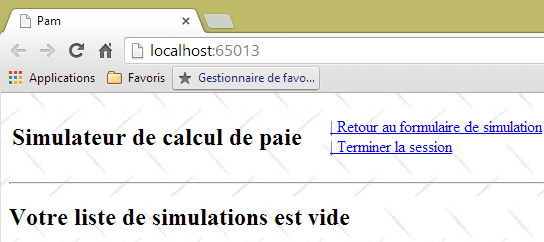
- نما [VueErreurs]، که یک یا چند خطا را نشان میدهد (در این مورد، SGBD و MySQL خاتمه یافتهاند):

9.3. معماری برنامه
معماری برنامه به شرح زیر خواهد بود:
 |
لایه [EF5] به Entity Framework 5 ORM اشاره دارد. SGBD مورد استفاده، MySQL خواهد بود.
ابتدا این برنامه را با استفاده از یک لایه شبیهسازیشده [métier] میسازیم:
 |
این به ما امکان میدهد تا صرفاً بر لایه [web] تمرکز کنیم. لایه شبیهسازیشده [métier] مطابق با رابط لایه واقعی [métier] خواهد بود. به محض عملیاتی شدن لایه [web]، سپس لایههای [métier]، [DAO] و [EF5] را خواهیم ساخت.
9.4. پایگاه داده
دادههای ثابتی که برای تولید فیش حقوقی لازم است، در پایگاه دادهای به نام MySQL (pam=Childminder Pay) ذخیره میشوند. این پایگاه داده یک مدیر با نام کاربری «root» دارد که رمز عبوری ندارد. این پایگاه داده شامل سه جدول است:

یک رابطه کلید خارجی بین ستون EMPLOYES (INDEMNITE_ID) و ستون INDEMNITES (ID) وجود دارد. ساختار این پایگاه داده بر اساس استفاده از EF5 تعیین شده است. ما هنگام ساخت لایههای پایینتر برنامه به این موضوع باز خواهیم گشت.
ساختار:
 |
|
محتویات آن میتواند به شرح زیر باشد:

ساختار:
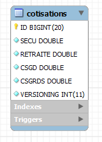 |
|
محتویات آن میتواند به شرح زیر باشد:

نرخهای مشارکت تأمین اجتماعی به کارمند بستگی ندارند. جدول بالا تنها شامل یک سطر است.
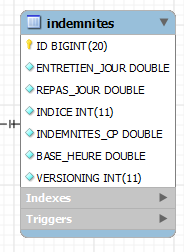 |
|
محتویات آن ممکن است به شرح زیر باشد:

9.5. روش calculation برای حقوق پرستار کودک
اکنون روش محاسبه حقوق ماهانه یک پرستار کودک را تشریح میکنیم. بهعنوان مثال، حقوق خانم ماری جووینال را در نظر میگیریم که در ماه حقوق ۱۵۰ ساعت در طول ۲۰ روز کار کرده است.
عوامل زیر در نظر گرفته میشوند: | [TOTALHEURES]: مجموع ساعات کاری در طول ماه [TOTALJOURS]: تعداد کل روزهای کاری در ماه | [TOTALHEURES]=150 [TOTALJOURS]= 20 |
حقوق پایه مراقب کودک با استفاده از فرمول زیر محاسبه میشود: | [SALAIREBASE]=([TOTALHEURES]*[BASEHEURE])*(1+[INDEMNITESCP]/100) | [SALAIREBASE] = (150 × [2.1]) × (1 + 0.15) = 362.25 |
تعدادی از حق بیمه تأمین اجتماعی باید از این حقوق پایه کسر شود: | سهم بیمه اجتماعی عمومی و سهم بازپرداخت بدهی اجتماعی: [SALAIREBASE]*[CSGRDS/100] سهم بیمه اجتماعی عمومی قابل کسر: [SALAIREBASE]*[CSGD/100] تأمین اجتماعی، مستمری بیوگی، مستمری پیری: [SALAIREBASE]*[SECU/100] حقوق بازنشستگی تکمیلی + AGPF + بیمه بیکاری: [SALAIREBASE]*[RETRAITE/100] | CSGRDS: ۱۲.۶۴ CSGD: 22.28 بیمه اجتماعی: ۳۴.۰۲ بازنشستگی: 28.55 |
مجموع حق بیمههای تأمین اجتماعی: | [COTISATIONSSOCIALES] = [SALAIREBASE] *(CSGRDS + CSGD + SECU + RETRAITE) / 100 | [COTISATIONSSOCIALES]=97.48 |
علاوه بر این، پرستار کودک برای هر روز کاری، مستحق دریافت فوقالعاده معیشت و فوقالعاده غذا است. بنابراین، او مزایای زیر را دریافت میکند: | [Indemnités]=[TOTALJOURS]*(ENTRETIENJOUR+REPASJOUR) | [INDEMNITES]=104 |
در نهایت، حقوق خالص قابل پرداخت به پرستار کودک به شرح زیر است: | [SALAIREBASE] – [COTISATIONSSOCIALES] + [INDEMNITÉS] | [salaire NET]=368.77 |
9.6. پروژه ویژوال استودیو برای لایه [web]
پروژه Visual Web Developer برای برنامه به شرح زیر خواهد بود:
 |
- در [1]، ساختار کلی پروژه [pam-web-01]؛
- در [2]، پوشه [Content] جایی است که منابع ایستا پروژه در آن ذخیره میشوند:
- [indicator.gif]: تصویر متحرکی که هنگام انتظار برای تکمیل درخواست Ajax نمایش داده میشود،
- [standard.jpg]: تصویر پسزمینه برای نماهای مختلف،
- [Site.css]: شیوهنامهٔ برنامه؛
- در [3]، تنها کنترلکنندهٔ برنامه، [PamController]؛
- در [4]، کلاسهای مورد نیاز برنامه که نمیتوان آنها را به عنوان عناصری از MVC دستهبندی کرد:
- [ApplicationModelBinder]: کلاسی که امکان درج دادههای دامنه از [Application] در مدل اقدام را فراهم میکند،
- [SessionModelBinder]: کلاسی که امکان درج دادهها از دامنه [Session] در مدل اقدام را فراهم میکند،
- [Static]: یک کلاس کمکی با متدهای استاتیک؛
- در [5]، مدلهای برنامه، چه مدلهای اکشن و چه مدلهای ویو:
- [ApplicationModel]: مدلی حاوی دادههای دامنه [Application]،
- [SessionModel]: مدلی حاوی دادههای محدوده [Session]،
- [Simulation]: کلاسی که عناصر یک شبیهسازی محاسبه حقوق را در بر میگیرد،
- [IndexModel]: مدل نمای اول، [Index]، که توسط برنامه نمایش داده میشود؛
- در [6]، اسکریپتهای JS مورد نیاز برای جهانیسازی برنامه؛
- در [7]، اسکریپتهای JS از خانواده JQuery که برای بینالمللیسازی، اعتبارسنجی سمت کلاینت و پیادهسازی AJAX برنامه مورد نیاز هستند؛
- در [8]، [myScripts.js] فایلی است که حاوی اسکریپتهای JS اختصاصی ما است؛
- در [9]، نماهای برنامه:
- [Index]: صفحه اصلی،
- [Formulaire]: فرم ورود جزئیات کارمند و ساعات و روزهای کاری او،
- [Simulation]: نمای نمایش یک شبیهسازی،
- [Simulations]: نمای نمایش فهرست شبیهسازیهای انجامشده،
- [Erreurs]: نمای نمایشدهنده فهرست هرگونه خطا،
- [InitFailed]: نمای نمایشدهنده پیامهای خطا در صورت عدم راهاندازی اولیه برنامه؛
- در [10]، صفحهٔ اصلی برنامهٔ [_Layout]؛
- در [11]، فایلهای [Web.config] و [Global.asax] برای پیکربندی برنامه استفاده میشوند.
9.7. مرحله ۱ – راهاندازی لایه شبیهسازیشده [métier]
از این نقطه به بعد، مراحل لازم برای انجام مطالعه موردی را شرح میدهیم. در صورت لزوم، به شماره فصل اشاره خواهیم کرد تا در صورت نیاز برای تکمیل کار بتوانید به آن مراجعه کنید. برخی از اجزای پروژه در پوشهای به نام [aspnetmvc-support.zip] ارائه شدهاند که میتوان آن را در وبسایت این سند یافت. این پوشه حاوی پوشه [étudedecas-support] با محتویات زیر است:
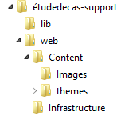 |
این پروژه همچنین شامل عناصری است که در فصلهای قبلی ارائه شدهاند. شما کافی است با کپی و پیست کردن آنها بین این فایل PDF و ویژوال استودیو، این موارد را بازیابی کنید.
9.7.1. راهحل Visual Studio برای اپلیکیشن کامل
ابتدا، یک راهحل Visual Studio ایجاد خواهیم کرد که در آن دو پروژه ایجاد خواهیم کرد:
- یک پروژه برای لایه شبیهسازیشده [métier]؛
- یک پروژه برای لایه وب MVC.
 |
ما از دو ابزار استفاده خواهیم کرد:
- Visual Studio Express 2012 for Desktop، که برای ساخت لایه [métier] استفاده خواهد شد؛
- Visual Studio Express 2012 for the Web، که برای ساخت لایه [web] استفاده خواهد شد.
با استفاده از ویژوال استودیو اکسپرس برای دسکتاپ، یک راهحل به نام [pam-td] ایجاد میکنیم:
 |
- در [1]، یک برنامه C# را انتخاب کنید؛
- در [2]، [Application console] را انتخاب کنید؛
- در [3]، برای راهحل یک نام انتخاب کنید؛
- در [4]، یک پوشه برای این راهحل ایجاد کنید؛
- در [5]، لایه را [métier] نامگذاری کنید؛
- در [6]، راهحل تولیدشده.
9.7.2. رابط لایه [métier]
در یک معماری لایهای، بهترین روش این است که ارتباط بین لایهها از طریق رابطها انجام شود:
 |
لایه [métier] باید چه رابطی را به لایه [web] ارائه دهد؟ چه تعاملاتی بین این دو لایه ممکن است؟ بیایید رابط وبی را که به کاربر ارائه خواهد شد، به یاد بیاوریم:
 |
- هنگامی که فرم برای اولین بار نمایش داده میشود، فهرست کارمندان باید در [1] نشان داده شود. یک فهرست سادهشده کافی است (نام خانوادگی، نام، SS). برای دسترسی به اطلاعات اضافی در مورد کارمند انتخابشده (fields 6 to 11)، به مرجع SS نیاز است.
- بندهای ۱۲ تا ۱۵ نرخهای مختلف مشارکت را نشان میدهند.
- بندهای ۱۶ تا ۱۹ مربوط به مزایای کارمند هستند
- موارد ۲۰ تا ۲۴ اجزای حقوق هستند که بر اساس ورودیهای ۱ تا ۳ انجامشده توسط کاربر محاسبه میشوند.
رابط [IPamMetier] که توسط لایه [métier] به لایه [web] ارائه میشود، باید الزامات فوق را برآورده کند. رابطهای ممکن زیادی وجود دارد. ما موارد زیر را پیشنهاد میکنیم:
using Pam.Metier.Entites;
namespace Pam.Metier.Service
{
public interface IPamMetier
{
// فهرست تمام شناسه کارمندان
Employe[] GetAllIdentitesEmployes();
// ------- محاسبه حقوق
FeuilleSalaire GetSalaire(string ss, double heuresTravaillées, int joursTravaillés);
}
}
- خط ۷: متدی که کادر ترکیبی [1] را پر میکند
- خط ۱۰: متدی که برای بازیابی اطلاعات ۶ تا ۲۴ استفاده خواهد شد. این موارد در یک شیء از نوع [FeuilleSalaire] گروهبندی شدهاند که به زودی آن را شرح خواهیم داد.
ما این رابط را در پوشهای به نام [metier/service] قرار خواهیم داد:
 |
9.7.3. اشیاء در لایه [métier]
رابط قبلی از دو کلاس [Employe] و [FeuilleSalaire] استفاده میکند که باید آنها را تعریف کنیم:
- [Employe] تصویر یک سطر از جدول [employes] در پایگاه داده است؛
- [FeuilleSalaire] فیش حقوقی یک کارمند است.
این اشیاء در پوشهای به نام [metier / entites] در داخل پروژه قرار داده خواهند شد:
 |
در معماری نهایی، لایه [métier] واحدهای تصویری را از پایگاه داده مدیریت خواهد کرد:
ما از کلاسهای زیر برای نمایش سطرها در سه جدول پایگاه داده استفاده خواهیم کرد. لطفاً برای معنای فیلدهای مختلف به بخش 9.4 مراجعه کنید.
کلاس [Employe]
این یک سطر در جدول [employes] را نشان میدهد. کد آن به شرح زیر است:
using System;
namespace Pam.Metier.Entites
{
public class Employe
{
public string SS { get; set; }
public string Nom { get; set; }
public string Prenom { get; set; }
public string Adresse { get; set; }
public string Ville { get; set; }
public string CodePostal { get; set; }
public Indemnites Indemnites { get; set; }
// امضا
public override string ToString()
{
return string.Format("Employé[{0},{1},{2},{3},{4},{5}]", SS, Nom, Prenom, Adresse, Ville, CodePostal);
}
}
}
کلاس [Indemnites]
این یک سطر در جدول [indemnites] را نشان میدهد. کد آن به شرح زیر است:
using System;
namespace Pam.Metier.Entites
{
public class Indemnites
{
public int Indice { get; set; }
public double BaseHeure { get; set; }
public double EntretienJour { get; set; }
public double RepasJour { get; set; }
public double IndemnitesCp { get; set; }
// امضا
public override string ToString()
{
return string.Format("Indemnités[{0},{1},{2},{3},{4}]", Indice, BaseHeure, EntretienJour, RepasJour, IndemnitesCp);
}
}
}
کلاس [Cotisations]
این یک ردیف در جدول [cotisations] را نشان میدهد. کد آن به شرح زیر است:
using System;
namespace Pam.Metier.Entites
{
public class Cotisations
{
public double CsgRds { get; set; }
public double Csgd { get; set; }
public double Secu { get; set; }
public double Retraite { get; set; }
// امضا
public override string ToString()
{
return string.Format("Cotisations[{0},{1},{2},{3}]", CsgRds, Csgd, Secu, Retraite);
}
}
}
توجه داشته باشید که کلاسها شامل ستونهای [ID] و [VERSIONING] از جداول نمیشوند. این ستونها که هنگام استفاده از ORM و EF5 مفید هستند، در زمینه لایه شبیهسازیشده [métier] الزامی نیستند.
کلاس [FeuilleSalaire] اطلاعات ۶ تا ۲۴ را از فرم نشاندادهشده در بر میگیرد:
namespace Pam.Metier.Entites
{
public class FeuilleSalaire
{
// ویژگیهای خودکار
public Employe Employe { get; set; }
public Cotisations Cotisations { get; set; }
public ElementsSalaire ElementsSalaire { get; set; }
// ToString
public override string ToString()
{
return string.Format("[{0},{1},{2}]", Employe, Cotisations, ElementsSalaire);
}
}
}
- خط ۷: اطلاعات ۶ تا ۱۱ درباره کارمندی که حقوق او محاسبه میشود، و اطلاعات ۱۶ تا ۱۹ درباره مزایای او. باید توجه داشت که یک شیء [Employe] یک شیء [Indemnites] را که نمایانگر مزایای اوست در بر میگیرد؛
- خط ۸: جزئیات ۱۲ تا ۱۵؛
- خط ۹: اطلاعات ۲۰ تا ۲۴؛
- خطوط ۱۲–۱۴: متد [ToString].
کلاس [ElementsSalaire] شامل موارد ۲۰ تا ۲۴ فرم است:
namespace Pam.Metier.Entites
{
public class ElementsSalaire
{
// ویژگیهای خودکار
public double SalaireBase { get; set; }
public double CotisationsSociales { get; set; }
public double IndemnitesEntretien { get; set; }
public double IndemnitesRepas { get; set; }
public double SalaireNet { get; set; }
// ToString
public override string ToString()
{
return string.Format("[{0} : {1} : {2} : {3} : {4} ]", SalaireBase, CotisationsSociales, IndemnitesEntretien, IndemnitesRepas, SalaireNet);
}
}
}
- ردههای ۶–۱۰: اجزای حقوق طبق توضیحات قوانین کسبوکار فوق؛
- خط ۶: حقوق پایه کارمند، بر اساس تعداد ساعات کاری؛
- خط ۷: مشارکتهای کسر شده از این حقوق پایه؛
- ردههای ۸ و ۹: فوقالعادههایی که به حقوق پایه اضافه میشوند، بسته به مقطع حقوقی کارمند و تعداد روزهای کاری؛
- خط ۱۰: حقوق خالص قابل پرداخت؛
- خطوط ۱۴–۱۷: متد کلاس [ToString].
9.7.4. کلاس [PamException]
ما در حال ایجاد یک نوع استثنای خاص برای برنامه خود هستیم. این نوع به شرح زیر است: [PamException]:
using System;
namespace Pam.Metier.Entites
{
// کلاس استثنا
public class PamException : Exception
{
// کد خطا
public int Code { get; set; }
// سازندهها
public PamException()
{
}
public PamException(int Code)
: base()
{
this.Code = Code;
}
public PamException(string message, int Code)
: base(message)
{
this.Code = Code;
}
public PamException(string message, Exception ex, int Code)
: base(message, ex)
{
this.Code = Code;
}
}
}
- خط ۶: این کلاس از کلاس [Exception] ارث میبرد؛
- خط ۱۰: دارای یک ویژگی عمومی [Code] است که یک کد خطا است؛
- در برنامهٔ ما از دو نوع سازنده استفاده خواهیم کرد:
- نوع اول در خطوط 23–27 قرار دارد که میتوان آن را همانطور که در زیر نشان داده شده است استفاده کرد:
- (ادامه)
- یا آن در خطوط ۲۹–۳۳، که برای ایجاد استثناءای که رخ داده است، با پیچاندن آن در استثناءای از نوع [PamException] طراحی شده است:
try{
....
}catch (IOException ex){
// دربرگیرندهٔ استثنا، برای مثال.
throw new PamException("Problème d'accès aux données",ex,10);
}
این روش دوم این مزیت را دارد که هیچ اطلاعاتی را که ممکن است در استثناء اول وجود داشته باشد، از دست نمیدهد.
9.7.5. پیادهسازی لایه [métier]
رابط [IPamMetier] توسط کلاس زیر [PamMetier] پیادهسازی خواهد شد:
using System;
using Pam.Metier.Entites;
using System.Collections.Generic;
namespace Pam.Metier.Service
{
public class PamMetier : IPamMetier
{
// فهرست پنهانشده کارمندان
public Employe[] Employes { get; set; }
// کارمندان فهرستشده بر اساس شمارهٔ آنها SS
private IDictionary<string, Employe> dicEmployes = new Dictionary<string, Employe>();
// فهرست کارمندان
public Employe[] GetAllIdentitesEmployes()
{
...
// ایجاد فهرست کارمندان
return Employes;
}
//محاسبه حقوق
public FeuilleSalaire GetSalaire(string ss, double heuresTravaillées, int joursTravaillés)
{
...
}
}
- خط ۷: کلاس [PamMetier] رابط [IPamMetier] را پیادهسازی میکند؛
- خط ۱۰: کلاس [PamMetier] لیست کارمندان را در حافظه پنهان ذخیره میکند؛
- خط ۱۲: یک دیکشنری که یک کارمند را با شماره بیمه ملی او مرتبط میکند؛
- خطوط ۱۵–۲۰: متدی که لیست کارمندان را بازمیگرداند؛
- خطوط ۲۳–۲۶: متدی که حقوق کارمند را محاسبه میکند.
متد [GetAllIdentitesEmploye] به شرح زیر است:
// فهرست کارمندان
public Employe[] GetAllIdentitesEmployes()
{
if (Employes == null)
{
// جدولی از سه کارمند ایجاد میکند
Employes = new Employe[3];
Employes[0] = new Employe()
{
SS = "254104940426058",
Nom = "Jouveinal",
Prenom = "Marie",
Adresse = "5 rue des oiseaux",
Ville = "St Corentin",
CodePostal = "49203",
Indemnites = new Indemnites() { Indice = 2, BaseHeure = 2.1, EntretienJour = 2.1, RepasJour = 3.1, IndemnitesCp = 15 }
};
dicEmployes.Add(Employes[0].SS, Employes[0]);
Employes[1] = new Employe()
{
SS = "260124402111742",
Nom = "Laverti",
Prenom = "Justine",
Adresse = "La brûlerie",
Ville = "St Marcel",
CodePostal = "49014",
Indemnites = new Indemnites() { Indice = 1, BaseHeure = 1.93, EntretienJour = 2, RepasJour = 3, IndemnitesCp = 12 }
};
dicEmployes.Add(Employes[1].SS, Employes[1]);
// یک کارمند فرضی که به فرهنگ واژگان اضافه نخواهد شد
// برای شبیهسازی یک کارمند وجود ندارد
Employes[2] = new Employe()
{
SS = "XX",
Nom = "X",
Prenom = "X",
Adresse = "X",
Ville = "X",
CodePostal = "X",
Indemnites = new Indemnites() { Indice = 0, BaseHeure = 0, EntretienJour = 0, RepasJour = 0, IndemnitesCp = 0 }
};
}
// فهرست کارمندان بازگردانده میشود
return Employes;
}
- خط ۴: بررسی میکند که آیا لیست کارمندان قبلاً ایجاد شده است یا خیر؛
- خط ۷: اگر اینطور نباشد، یک آرایه از سه کارمند ایجاد میشود؛
- خطوط ۸–۱۷: کارمند اول؛
- خط ۱۸: آنها به دیکشنری اضافه میشوند؛
- خطوط ۱۹–۲۸: کارمند دوم؛
- خط ۲۹: او به فرهنگ لغت اضافه میشود؛
- خطوط ۳۲–۴۲: کارمند سوم. این کارمند به دیکشنری اضافه نمیشود که دلیل آن را توضیح خواهیم داد.
روش [GetSalaire] به شرح زیر خواهد بود:
//محاسبه حقوق
public FeuilleSalaire GetSalaire(string ss, double heuresTravaillées, int joursTravaillés)
{
//بازیابی کارمند با شناسه SS
Employe e = dicEmployes.ContainsKey(ss) ? dicEmployes[ss] : null;
//وجود دارد؟
if (e == null)
{
throw new PamException(string.Format("L'employé de n° SS [{0}] n'existe pas", ss), 10);
}
//یک برگه پرداخت فرضی را بازمیگرداند
return new FeuilleSalaire()
{
Employe = e,
Cotisations = new Cotisations() { CsgRds = 3.49, Csgd = 6.15, Secu = 9.38, Retraite = 7.88 },
ElementsSalaire = new ElementsSalaire() { CotisationsSociales = 100, IndemnitesEntretien = 100, IndemnitesRepas = 100, SalaireBase = 100, SalaireNet = 100 }
};
}
- خط ۲: متد شناسه کارمند SS را دریافت میکند که میخواهیم حقوق، تعداد ساعات کاری و تعداد روزهای کاری او را محاسبه کنیم؛
- خط ۵: ما کارمند را در دیکشنری جستجو میکنیم. به یاد داشته باشید که یکی از آنها در دیکشنری وجود ندارد؛
- خطوط ۷–۱۰: اگر کارمند پیدا نشود، یک استثنای [PamException] پرتاب میشود؛
- خطوط ۱۲–۱۷: یک فیش حقوقی ساختگی بازگردانده میشود.
9.7.6. آزمون کنسول برای لایه [métier]
طراحی لایه [métier] در حال حاضر به شرح زیر است:
 |
کلاس [Program] بالا متدهای رابط [IPamMetier] را آزمایش خواهد کرد. یک مثال پایه ممکن است به شرح زیر باشد:
using Pam.Metier.Entites;
using Pam.Metier.Service;
using System;
namespace Pam.Metier.Tests
{
class Program
{
public static void Main()
{
//لایه [métier] را ایجاد میکند
IPamMetier pamMetier = new PamMetier();
//فهرست کارمندان
Employe[] employes = pamMetier.GetAllIdentitesEmployes();
Console.WriteLine("Liste des employés--------------------");
foreach (Employe e in employes)
{
Console.WriteLine(e);
}
//محاسبات فیش حقوقی
Console.WriteLine("Calculs de feuilles de salaire-----------------");
Console.WriteLine(pamMetier.GetSalaire(employes[0].SS, 30, 5));
Console.WriteLine(pamMetier.GetSalaire(employes[1].SS, 150, 20));
try
{
Console.WriteLine(pamMetier.GetSalaire(employes[2].SS, 150, 20));
}
catch (PamException ex)
{
Console.WriteLine(string.Format("PamException : {0}", ex.Message));
}
}
}
}
- خط ۱۲: نمونهسازی لایه [métier]؛
- خطوط ۱۴–۱۹: تست متد [GetAllIdentitesEmploye] از رابط [IPamMetier];
- خطوط ۲۱–۳۱: آزمایش متد [GetSalaire] از رابط [IPamMetier].
اجرای این برنامه کنسولی نتایج زیر را تولید میکند:
از خوانندگان دعوت میشود تا ارتباط بین این نتایج و کد اجرا شده را برقرار کنند.
برای اینکه بتوانیم از این پروژه در پروژه وبی که قصد ساخت آن را داریم استفاده کنیم، آن را به یک کتابخانه کلاس تبدیل میکنیم:
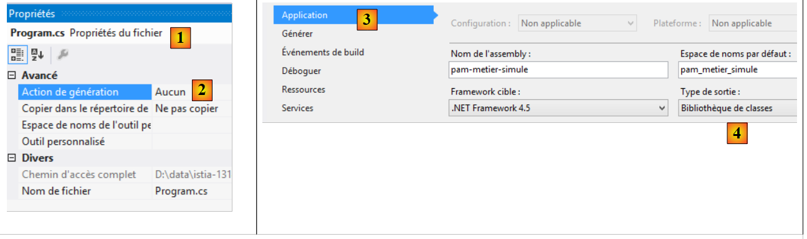 |
- در [1]، در بخش properties فایل [Program.cs]؛
- در [2]، مشخص میکنیم که این فایل بخشی از اسمبلی تولید شده نخواهد بود؛
- در [3, 4]، در داخل ویژگیهای پروژه [pam-metier-simule]، تحت گزینه [Application] [3]، در [4] مشخص شده است که تولید باید یک کتابخانه کلاس (به شکل یک DLL) فراهم کند.
 |
- در [5]، یک اسمبلی از نوع [Release] درخواست میشود. نوع دیگر [Debug] است. سپس این اسمبلی حاوی اطلاعاتی برای تسهیل اشکالزدایی است؛
- در [6]، پروژه [pam-metier-simule] ایجاد میشود؛
 |
- در [7]، تمام فایلهای موجود در راهحل نمایش داده میشوند؛
- در [8]، درون پوشه [bin / Release]، فایل DLL برای پروژه ما.
9.8. مرحله ۲: راهاندازی برنامه وب
در راهحل ویژوال استودیوی قبلی، پروژه لایه وب MVC را ایجاد خواهیم کرد.
 |
با استفاده از Visual Studio Express for the Web، راهحل [pam-td] را که قبلاً با Visual Studio Express for the Desktop ایجاد شده بود، باز میکنیم.
 |
- در [1]، راهحل [pam-td] در ویژوال استودیو اکسپرس برای وب بارگذاری شده است؛
- در [2]، راهحل و پروژه برای لایه شبیهسازیشده [métier] که همین حالا ایجاد کردهایم.
در این گام بعدی، اسکلت برنامه وب را ایجاد خواهیم کرد.
 |
- در [1]، ما یک پروژه جدید به راهحل [pam-td] اضافه میکنیم؛
 |
- در [2]، ما یک پروژه به نام ASP.NET MVC 4 را انتخاب میکنیم؛
- با نام [pam-web-01] [3];
- در [4]، قالب پایه ASP.NET MVC را انتخاب کنید؛
- در [5]، پروژه ایجاد شد؛
 |
- در [6]، ما یک پروژه جدید، یعنی پروژهٔ شروعکنندهٔ راهحل، ایجاد میکنیم که هنگام اجرای [Ctrl-F5] اجرا خواهد شد؛
- در [7]، نام پروژه جدید به صورت پررنگ نمایش داده میشود که نشان میدهد این پروژه، پروژه راهاندازی (start-up) راهحل است.
اکنون، با استفاده از Windows Explorer، پوشه [Content] پروژه را با پوشه [étudedecas-support / web / Content] جایگزین کنید. پس از انجام این کار، باید فایلهای جدید را در پروژه [pam-web-01] وارد کنید. به شرح زیر عمل کنید:
 |
- در [1]، راهحل را تازه کنید؛
- در [2]، تمام فایلهای موجود در راهحل را نمایش دهید؛
- در [3]، پوشهای با نام [Images] ظاهر میشود؛
- که در پروژه در [4] گنجانده شده است.
در پوشه [Scripts]، اسکریپتهای JQuery و [1] مورد نیاز برای اعتبارسنجی سمت کلاینت را اضافه کنید.
 |
صفحهٔ اصلی [_Layout.cshtml] [2] دارای محتوای زیر خواهد بود:
<!DOCTYPE html>
<html>
<head>
<title>@ViewBag.Title</title>
<meta charset="utf-8" />
<meta name="viewport" content="width=device-width" />
<link rel="stylesheet" href="~/Content/Site.css" />
<script type="text/javascript" src="~/Scripts/jquery-1.8.2.min.js"></script>
<script type="text/javascript" src="~/Scripts/jquery.validate.min.js"></script>
<script type="text/javascript" src="~/Scripts/jquery.validate.unobtrusive.min.js"></script>
<script type="text/javascript" src="~/Scripts/globalize/globalize.js"></script>
<script type="text/javascript" src="~/Scripts/globalize/cultures/globalize.culture.fr-FR.js"></script>
<script type="text/javascript" src="~/Scripts/jquery.unobtrusive-ajax.js"></script>
<script type="text/javascript" src="~/Scripts/myScripts.js"></script>
</head>
<body>
<table>
<tbody>
<tr>
<td>
<h2>Simulateur de calcul de paie</h2>
</td>
<td style="width: 20px">
<img id="loading" style="display: none" src="~/Content/images/indicator.gif" />
</td>
<td>
<a id="lnkFaireSimulation" href="javascript:faireSimulation()">| Faire la simulation<br />
</a>
<a id="lnkEffacerSimulation" href="javascript:effacerSimulation()">| Effacer la simulation<br />
</a>
<a id="lnkVoirSimulations" href="javascript:voirSimulations()">| Voir les simulations<br />
</a>
<a id="lnkRetourFormulaire" href="javascript:retourFormulaire()">| Retour au formulaire de simulation<br />
</a>
<a id="lnkEnregistrerSimulation" href="javascript:enregistrerSimulation()">| Enregistrer la simulation<br />
</a>
<a id="lnkTerminerSession" href="javascript:terminerSession()">| Terminer la session<br />
</a>
</td>
</tbody>
</table>
<hr />
<div id="content">
@RenderBody()
</div>
</body>
</html>
توجه: خط ۸، نسخه jQuery را با نسخه ویژوال استودیوی خود مطابقت دهید.
- خط ۷: ارجاع به شیوهنامهٔ برنامه؛
- خطوط ۸–۱۰: ارجاعات به اسکریپتهای مورد نیاز برای اعتبارسنجی سمت کلاینت؛
- خطوط ۱۱–۱۲: ارجاع به اسکریپتهای مورد نیاز برای وارد کردن اعداد حقیقی فرانسوی با ممیز اعشاری؛
- خط ۱۳: ارجاع به اسکریپتهای مورد نیاز برای حالت Ajax؛
- خط ۱۴: اسکریپتهای اختصاصی برنامه؛
- خط ۲۴: تصویر بارگذاری برای فراخوانیهای Ajax؛
- خطوط ۲۶–۳۹: شش لینک جاوااسکریپت؛
- خط ۴۳: بخشی که نماهای مختلف برنامه در آن نمایش داده میشوند؛
- خط ۴۴: بدنهٔ نماهای مختلف برنامه.
در ادامه، مسیر پیشفرض برنامه را اصلاح خواهیم کرد:
 |
فایل [RouteConfig] محتوای زیر را خواهد داشت:
using System.Web.Mvc;
using System.Web.Routing;
namespace pam_web_01
{
public class RouteConfig
{
public static void RegisterRoutes(RouteCollection routes)
{
routes.IgnoreRoute("{resource}.axd/{*pathInfo}");
routes.MapRoute(
name: "Default",
url: "{controller}/{action}",
defaults: new { controller = "Pam", action = "Index" }
);
}
}
}
- خط ۱۴: فایلهای URL به شکل [{controller}/{action}] درخواهند آمد؛
- خط ۱۵: اگر هیچ عملی مشخص نشود، عمل [Index] استفاده خواهد شد. اگر هیچ کنترلکنندهای مشخص نشود، کنترلکننده [Pam] استفاده خواهد شد.
از این پیکربندی برمیآید که URL [/] معادل URL [/Pam/Index] است. از آنجایی که نوع برنامه ما APU است، URL و [/] تنها URL برای این برنامه خواهند بود.
کنترلکننده [Pam] را ایجاد کنید:
کنترلکننده [PamController] را به شرح زیر اصلاح کنید:
using System.Web.Mvc;
namespace Pam.Web.Controllers
{
public class PamController : Controller
{
[HttpGet]
public ViewResult Index()
{
return View();
}
}
}
- خط ۳: ما کنترلکننده را در فضای نام [Pam.Web.Controllers] قرار میدهیم؛
- خط ۷: اکشن [Index] تنها فرمان HTTP GET را پردازش خواهد کرد؛
- خط ۸: ما به جای نوع [ActionResult]، نوع [ViewResult] را بازمیگردانیم.
اکنون نمای [Index.cshtml] را که توسط اقدام [Index] در بالا نمایش داده میشود، ایجاد کنید:
 |
[Index.cshtml] را به شرح زیر تغییر دهید:
@{
ViewBag.Title = "Pam";
}
<h2>Formulaire</h2>
برنامه را با استفاده از [Ctrl-F5] اجرا کنید. باید صفحه زیر را مشاهده کنید:
 |
وظیفه: توضیح دهید چه اتفاقی افتاده است.
برنامه از یک صفحهشیوه (style sheet) استفاده میکند که در صفحهٔ اصلی [_Layout.cshtml] ارجاع شده است:
<link rel="stylesheet" href="~/Content/Site.css" />
فایل سبک [/Content/Site.css] یک تصویر پسزمینه برای صفحات برنامه تعریف میکند:
body {
background-image: url("/Content/Images/standard.jpg");
}
 |
9.9. مرحله ۳: راهاندازی قالب APU
ما میخواهیم یک برنامه مبتنی بر قالب APU (برنامه تکصفحهای) که در بخشهای 7.5 و 7.6 توصیف شده است، بنویسیم. صفحهٔ تکصفحهای همان صفحهای است که هنگام راهاندازی برنامه توسط مرورگر بارگذاری میشود:
 |
- بخش [1] بالا بخش ثابت صفحه واحد است. ما دیدهایم که این بخش توسط صفحه اصلی [_Layout.cshtml] ارائه میشود؛
- بخش [2] بخش متغیر صفحهٔ واحد است. این بخش در محدودهای با شناسهٔ [content] از صفحهٔ اصلی [_Layout.cshtml] قرار دارد:
<!DOCTYPE html>
<html>
<head>
<title>@ViewBag.Title</title>
...
<script type="text/javascript" src="~/Scripts/myScripts.js"></script>
</head>
<body>
<table>
...
</table>
<hr />
<div id="content">
@RenderBody()
</div>
</body>
</html>
قطعات مختلف صفحهٔ برنامه در ناحیهای با شناسهٔ [content] در خط ۱۳ نمایش داده خواهند شد. آنها از طریق فراخوانیهای Ajax نمایش داده میشوند. اسکریپتهای جاوااسکریپتی که این فراخوانیها را اجرا میکنند در فایل [myScripts.js] قرار دارند که در خط ۶ به آن ارجاع شده است. این فایل را ایجاد کنید، که به آن نیاز خواهیم داشت:
 |
اکنون از قالب APU که در بخش ۷.۶ توضیح داده شده است، پیروی خواهیم کرد. اگر آن بخش را فراموش کردهاید، لطفاً آن را دوباره مطالعه کنید. اکنون قطعات مختلف صفحه را که توسط برنامه نمایش داده میشوند، راهاندازی خواهیم کرد.
9.9.1. ابزارهای توسعهدهنده جاوااسکریپت
به یاد داشته باشید که با مرورگر کروم، مجموعهای از ابزارها برای عیبیابی جاوااسکریپت HTML و CSS در صفحات شما در دسترس دارید. این ابزارها تا حدی در بخش ۷.۲ پوشش داده شدهاند. در قالب APU، مرورگرها اسکریپتهای جاوااسکریپتی را که در صفحه اول برنامه به آنها ارجاع داده شده، در کش خود ذخیره میکنند. بنابراین باید به یاد داشته باشید که هنگام ویرایش اسکریپتهای خود، این کش را پاک کنید؛ در غیر این صورت، ممکن است تغییرات اعمال نشوند. در اینجا نحوه انجام این کار در کروم آورده شده است:
- برای نمایش محیط توسعه، [Ctrl-Maj-I] را اجرا کنید
 |
- روی آیکون [1] در پایین سمت راست پنجره توسعه کلیک کنید؛
- سپس گزینه [2] را که کش را در حالت توسعه غیرفعال میکند، علامت بزنید.
9.9.2. استفاده از یک نمای جزئی برای نمایش فرم
فرم ورود داده یکی از قطعات نمایشدادهشده توسط برنامه است. در حال حاضر، این فرم توسط نما [Index.cshtml] نمایش داده میشود که یک نمای کامل است:
@{
ViewBag.Title = "Pam";
}
<h2>Formulaire</h2>
این نما توسط اقدام [Index] نمایش داده میشود:
[HttpGet]
public ViewResult Index()
{
return View();
}
همانطور که در خط ۴ بالا نشان داده شده است، در واقع نمای [View] است که نمایش داده میشود، نه نمای جزئی [PartialView]. ما برای فرم به یک نمای جزئی نیاز داریم که یک قطعه صفحه خواهد بود. ما نما [Index.cshtml] را به شرح زیر بهروزرسانی میکنیم:
@{
ViewBag.Title = "Pam";
}
@Html.Partial("Formulaire")
خط ۴: فرم دیگر جزئی از صفحه [Index.cshtml] نیست. اکنون در یک نمای جزئی [Formulaire.cshtml] قرار دارد:
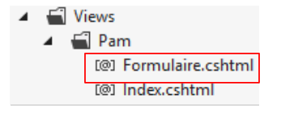 |
کد مربوط به [Formulaire.cshtml] به سادگی به شرح زیر است:
<h2>Formulaire</h2>
این تغییرات را اعمال کنید و بررسی کنید که هنگام راهاندازی برنامه همچنان نمای زیر را مشاهده میکنید:
 |
9.9.3. فراخوانی Ajax [faireSimulation]
ما به قطعهای که هنگام کلیک کاربر روی پیوند [Faire la simulation] نمایش داده میشود، علاقهمند هستیم:
 |
- در [1]، کاربر روی لینک [Faire la simulation] کلیک میکند؛
- در [2]، شبیهسازی زیر فرم ظاهر میشود.
ما نمای جزئی [Formulaire.cshtml] را که فرم را نمایش میدهد، به شرح زیر بهروزرسانی میکنیم:
<h2>Formulaire</h2>
<div id="simulation" />
در خط ۳، ما یک ناحیه با شناسه [simulation] ایجاد میکنیم تا قطعه شبیهسازی را در خود جای دهد.
ما نمای جزئی زیر را ایجاد میکنیم [Simulation.cshtml]:
 |
محتوای نما [Simulation.cshtml] به شرح زیر است:
<hr />
<h2>Simulation</h2>
اکنون باید کد جاوااسکریپتی را بنویسیم که کلیک روی لینک [Faire la simulation] را مدیریت میکند. ما رویهای را که در بخش 7.6.5 تشریح شده است دنبال خواهیم کرد. ابتدا بیایید کد HTML را برای لینک در [_Layout.cshtml] بررسی کنیم:
<a id="lnkFaireSimulation" href="javascript:faireSimulation()">| Faire la simulation<br />
</a>
میتوانیم ببینیم که کلیک بر روی لینک [Faire la simulation] باعث اجرای تابع JS [faireSimulation] خواهد شد. این تابع به همراه سایر توابع مورد نیاز برنامه، به فایل [myScripts.js] نوشته خواهد شد:
// متغیرهای سراسری
var loading;
var content;
function faireSimulation() {
// فراخوانی دستی Ajax
...
}
function effacerSimulation() {
//پاکسازی ورودیهای فرم
...
}
function enregistrerSimulation() {
// انجام فراخوانی دستی Ajax
...
}
function voirSimulations() {
// ایجاد فراخوانی آژاکس بهصورت دستی
...
}
function retourFormulaire() {
// یک فراخوانی Ajax بهصورت دستی انجام میشود
...
}
function terminerSession() {
...
}
// هنگام بارگذاری سند
$(document).ready(function () {
// بازیابی ارجاعات برای اجزای مختلف صفحه
loading = $("#loading");
content = $("#content");
});
- خطوط ۳۵–۳۹: تابع JQuery هنگام شروع برنامه اجرا میشود؛
- خطوط ۳۷–۳۸: متغیرهای سراسری از خطوط ۲ و ۳ مقداردهی اولیه میشوند.
توجه داشته باشید که عناصر با شناسههای [loading] و [content] در صفحهٔ اصلی [_Layout.cshtml] (ردههای 14 و 21 در زیر) تعریف شدهاند:
<!DOCTYPE html>
<html>
<head>
...
</head>
<body>
<table>
<tbody>
<tr>
<td>
<h2>Simulateur de calcul de paie</h2>
</td>
<td style="width: 20px">
<img id="loading" style="display: none" src="~/Content/images/indicator.gif" />
</td>
...
</td>
</tbody>
</table>
<hr />
<div id="content">
@RenderBody()
</div>
</body>
</html>
وظیفه: با پیروی از رویهای که در بخش 7.6.5 تشریح شده است، تابع JS [faireSimulation] را بنویسید. این یک فراخوانی آژاکس از نوع POST به اکشن [/Pam/FaireSimulation] ارسال خواهد کرد. در این مرحله هیچ دادهای ارسال نخواهد شد. Theاقدام [/Pam/FaireSimulation] نمای جزئی [Simulation.cshtml] را به تابع JS [faireSimulation] بازخواهد گرداند، که سپس این جریان داده HTML را در ... قرار خواهد داد. با شناسه [simulation] در فرم.
پیوند [Faire la simulation] را در برنامهی خود آزمایش کنید.
9.9.4. فراخوانی Ajax [enregistrerSimulation]
لینک [Enregistrer la simulation] در [_Layout.cshtml] به شرح زیر تعریف شده است:
<a id="lnkEnregistrerSimulation" href="javascript:enregistrerSimulation()">| Enregistrer la simulation<br />
</a>
وظیفه: با دنبال کردن رویهای که در بالا توضیح داده شد، تابع JS [enregistrerSimulation] را بنویسید. این تابع یک فراخوانی Ajax از نوع POST را به اکشن [/Pam/EnregistrerSimulation] ارسال خواهد کرد. در این مرحله هیچ دادهای ارسال نخواهد شد.اقدام [/Pam/EnregistrerSimulation] نمای جزئی [Simulations.cshtml] را به تابع JS [enregistrerSimulation] بازخواهد گرداند، که سپس این جریان داده HTML را در با شناسه [content] روی صفحه اصلی.
نما [Simulations.cshtml] به شرح زیر است:
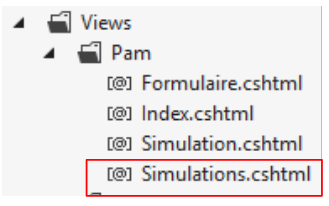 |
محتوای آن به شرح زیر است:
<h2>Simulations</h2>
در اینجا نمونهای از خروجی آورده شده است:
 |  |
9.9.5. فراخوانی Ajax [voirSimulations]
لینک [Voir les simulations] به صورت زیر در [_Layout.cshtml] تعریف شده است:
<a id="lnkVoirSimulations" href="javascript:voirSimulations()">| Voir les simulations<br />
</a>
وظیفه: با دنبال کردن رویه توصیفشده در بالا، تابع JS [voirSimulations] را بنویسید. این تابع یک فراخوانی ایجکس از نوع POST را به اکشن [/Pam/VoirSimulations] ارسال خواهد کرد. در این مرحله هیچ دادهای ارسال نخواهد شد.اقدام [/Pam/VoirSimulations] نمای جزئی [Simulations.cshtml] را به تابع JS [voirSimulations] بازخواهد گرداند، که سپس این جریان داده HTML را در با شناسه [content] در صفحه اصلی.
ویوی [Simulations.cshtml] همان ویوی است که در سؤال قبلی استفاده شده بود.
در اینجا مثالی از خروجی آورده شده است:
 |
9.9.6. فراخوانی Ajax [retourFormulaire]
لینک [Retour au formulaire de simulation] در [_Layout.cshtml] به صورت زیر تعریف شده است:
<a id="lnkRetourFormulaire" href="javascript:retourFormulaire()">| Retour au formulaire de simulation<br />
</a>
وظیفه: با دنبال کردن رویه بالا، تابع JS [retourFormulaire] را بنویسید. این تابع یک فراخوانی ایجکس از نوع POST را به اکشن [/Pam/Formulaire] ارسال خواهد کرد. در این مرحله هیچ دادهای ارسال نخواهد شد.اقدام [/Pam/Formulaire] نمای جزئی [Formulaire.cshtml] را به تابع JS [retourFormulaire] بازخواهد گرداند، که سپس این جریان داده HTML را در با شناسه [content] روی صفحه اصلی.
ویوی [Formulaire .cshtml] قبلاً تعریف شده است. در اینجا مثالی از اجرای آن آمده است:
 |
9.9.7. فراخوانی Ajax [terminerSession]
لینک [Terminer la session] در [_Layout.cshtml] به صورت زیر تعریف شده است:
<a id="lnkTerminerSession" href="javascript:terminerSession()">| Terminer la session<br />
</a>
وظیفه: با دنبال کردن رویهٔ قبلی، تابع JS [terminerSession] را بنویسید. این تابع یک فراخوانی Ajax از نوع POST را به اکشن [/Pam/TerminerSession] ارسال خواهد کرد. در این مرحله هیچ دادهای ارسال نخواهد شد.اقدام [/Pam/TerminerSession] نمای جزئی [Formulaire.cshtml] را به تابع JS [terminerSession] بازخواهد گرداند، که سپس این جریان داده HTML را در با شناسه [content] در صفحه اصلی.
در اینجا مثالی از اجرا آورده شده است:
 |
9.9.8. تابع JS [effacerSimulation]
لینک [Effacer la simulation] در [_Layout.cshtml] به شرح زیر تعریف شده است:
<a id="lnkEffacerSimulation" href="javascript:effacerSimulation()">| Effacer la simulation<br />
</a>
هدف تابع JS [effacerSimulation] عبارت است از:
- برای پنهان کردن قطعه [Simulation]، در صورت وجود؛
- برای بازنشانی فیلدهای ورودی فرم به حالتی که هنگام بارگذاری اولیه برنامه داشتند (وقتی فیلدهای ورودی وجود داشته باشند – در حال حاضر هیچکدام وجود ندارد).
وظیفه: بنویسید تابع JS [effacerSimulation]. در اینجا هیچ فراخوانی Ajax وجود ندارد. آنچه اتفاق میافتد در داخل مرورگر رخ میدهد و شامل سرور نمیشود.
در اینجا مثالی از عملکرد این تابع آورده شده است:
 |
9.9.9. مدیریت ناوبری بین صفحات
در حال حاضر، لینکها همیشه نمایش داده میشوند. اکنون نمایش آنها را با استفاده از یک تابع جاوااسکریپت مدیریت خواهیم کرد. ابتدا، بیایید کد شش لینک جاوااسکریپت در [_Layout.cshtml] را مرور کنیم:
<a id="lnkFaireSimulation" href="javascript:faireSimulation()">| Faire la simulation<br />
</a>
<a id="lnkEffacerSimulation" href="javascript:effacerSimulation()">| Effacer la simulation<br />
</a>
<a id="lnkVoirSimulations" href="javascript:voirSimulations()">| Voir les simulations<br />
</a>
<a id="lnkRetourFormulaire" href="javascript:retourFormulaire()">| Retour au formulaire de simulation<br />
</a>
<a id="lnkEnregistrerSimulation" href="javascript:enregistrerSimulation()">| Enregistrer la simulation<br />
</a>
<a id="lnkTerminerSession" href="javascript:terminerSession()">| Terminer la session<br />
</a>
تمام لینکها دارای ویژگی [id] هستند که به ما امکان میدهد آنها را در جاوااسکریپت مدیریت کنیم. ما متد JS را که هنگام بارگذاری صفحه اجرا میشود، به شرح زیر تغییر میدهیم:
// متغیرهای سراسری
var loading;
var content;
var lnkFaireSimulation;
var lnkEffacerSimulation
var lnkEnregistrerSimulation;
var lnkTerminerSession;
var lnkVoirSimulations;
var lnkRetourFormulaire;
var options;
...
// وقتی سند بارگذاری میشود
$(document).ready(function () {
// بازیابی ارجاعات برای اجزای مختلف صفحه
loading = $("#loading");
content = $("#content");
// پیوندهای منو
lnkFaireSimulation = $("#lnkFaireSimulation");
lnkEffacerSimulation = $("#lnkEffacerSimulation");
lnkEnregistrerSimulation = $("#lnkEnregistrerSimulation");
lnkVoirSimulations = $("#lnkVoirSimulations");
lnkTerminerSession = $("#lnkTerminerSession");
lnkRetourFormulaire = $("#lnkRetourFormulaire");
// آنها را در یک آرایه قرار میدهیم
options = [lnkFaireSimulation, lnkEffacerSimulation, lnkEnregistrerSimulation, lnkVoirSimulations, lnkTerminerSession, lnkRetourFormulaire];
// پنهان کردن برخی از عناصر صفحه
loading.hide();
//منو در جای خود ثابت است
setMenu([lnkFaireSimulation, lnkVoirSimulations, lnkTerminerSession]);
});
- خطوط ۱۹–۲۴: ما ارجاعات شش لینک را بازیابی میکنیم. این ارجاعات به عنوان متغیرهای سراسری در خطوط ۴–۹ تعریف شدهاند؛
- خط ۲۶: آرایه [options] با شش مرجع مقداردهی اولیه میشود. این آرایه به عنوان یک متغیر سراسری در خط ۱۰ تعریف شده است؛
- خط ۲۸: تصویر متحرک که نشاندهنده در حال انتظار بودن فراخوانیهای Ajax است، پنهان میشود؛
- خط ۳۰: لینکهای [lnkFaireSimulation, lnkVoirSimulations, lnkTerminerSession] نمایش داده میشوند. سایر لینکها مخفی خواهند شد.
تابع JS [setMenu] به شرح زیر است:
function setMenu(show) {
// نمایش پیوندها در جدول [show]
...
}
وظیفه: تابع JS [setMenu] را بنویسید.
اگر T آرایهای از لینکها باشد:
- T.length تعداد لینکها است؛
- T[i] شماره لینک i است؛
- T[i].show() لینک شماره i را نمایش میدهد؛
- T[i].hide() لینک شماره i را مخفی میکند.
با این توابع جدید JS، صفحهای که هنگام راهاندازی نمایش داده میشود به شرح زیر است:
 |
فعالیتهای JS و [faireSimulation, effacerSimulation, enregistrerSimulation, voirSimulations, retourFormulaire, terminerSession] را طوری تطبیق دهید که خروجیهای زیر را تولید کنند:
 | 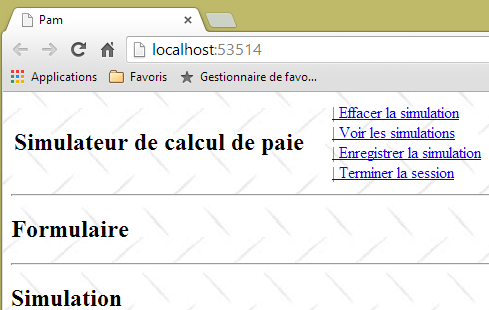 |
 |  |
 |  |
 |  |
 |  |
 |  |
اکنون که قالب APU و پیوندهای ناوبری در جای خود قرار دارند، میتوانیم به نوشتن عملیات و نماهای سمت سرور بپردازیم. با پیشرفت در مراحل، متوجه خواهید شد که برخی از پیوندهای Ajax که در حال حاضر کار میکنند، دیگر کار نخواهند کرد؛ این به این دلیل است که شما نماهای جزئی ارسالشده به کلاینت را دستکاری خواهید کرد. همزمان که اقدامات و ویوهای مختلف سمت سرور را میسازید، لینکهای Ajax سمت کلاینت دوباره همانطور که باید کار خواهند کرد.
9.10. مرحله ۴: نوشتن اکشن سمت سرور [Index]
در حال حاضر، هنگامی که برنامه اجرا میشود، صفحه زیر نمایش داده میشود:
|
به جای این صفحه، ما میخواهیم موارد زیر را ببینیم:
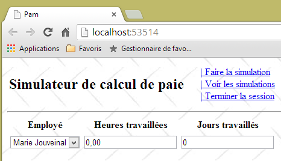 |
این اکشن [Index] است که باید این صفحه را تولید کند. بیایید چند نکته را بررسی کنیم:
- صفحه یک فرم با سه فیلد ورودی نمایش میدهد:
- شماره کارمندی که حقوق او محاسبه میشود،
- تعداد ساعات کاری،
- تعداد روزهای کاری؛
- فرم از طریق لینک [Faire la simulation] ارسال میشود؛
- اعتبار فیلدهای ورودی [Heures travaillées] و [Jours travaillés] باید بررسی شود؛
- فهرست کارکنان از لایه [métier] که قبلاً ایجاد کردیم، میآید.
بیایید کد فعلی برای اقدام [Index] را مرور کنیم:
[HttpGet]
public ViewResult Index()
{
return View();
}
و کد مربوط به نمای [Index.cshtml] که توسط این اقدام نمایش داده میشود:
@{
ViewBag.Title = "Pam";
}
@Html.Partial("Formulaire")
و متعلق به نمای جزئی [Formulaire.cshtml]:
<h2>Formulaire</h2>
تغییرات در این سه مکان اعمال خواهد شد.
9.10.1. قالب فرم
بیایید به زنجیره پردازش برای URL و [/Pam/Index] بازگردیم:
 |
- درخواست مشتری HTTP به صورت [1] میرسد؛
- در [2]، اطلاعات موجود در درخواست به قالب اقدام [3] تبدیل میشود که بهعنوان ورودی برای اقدام [4] عمل میکند؛
- در [4]، اکشن بر اساس این مدل یک پاسخ تولید خواهد کرد. این پاسخ دو مؤلفه خواهد داشت: یک نما V [6] و مدل M برای این نما [5];
- ویو V [6] از مدل خود M [5] برای تولید پاسخ HTTP که برای کلاینت در نظر گرفته شده است، استفاده خواهد کرد.
عملی که مورد توجه ماست، عمل [Index] است که در حال حاضر به شرح زیر است:
[HttpGet]
public ViewResult Index()
{
return View();
}
اقدام [Index] هیچ مدلی را به نما [Index.cshtml] ارسال نمیکند. در نتیجه، این نما قادر به نمایش لیست کارمندان نخواهد بود. این لیست را میتوان از لایه [métier] درخواست کرد. برای این کار، پروژه [pam-web-01] باید به پروژه [pam-metier-simule] ارجاع دهد. اکنون این ارجاع را ایجاد میکنیم:
 |
- در [1]، روی [References] در پروژه [pam-web-01] کلیک راست کرده، سپس [Ajouter une référence] را انتخاب کنید؛
- به [2]، گزینه [Solution] را انتخاب کنید، سپس پروژه [pam-metier-simule] را به [3] اضافه کنید؛
- در [4]، پروژه [pam-metier-simule] به مراجع پروژه [pam-web-01] اضافه شده است.
9.10.2. مدل کاربردی
ما مفاهیم کلیدی مدل برنامه و مدل جلسه را در بخش 4.10، در صفحه 78 معرفی کردیم. اکنون از آنها استفاده خواهیم کرد. به یاد داشته باشید که موارد زیر در مدل قرار میگیرند:
- مدل کاربردی: دادههای فقط-خواندنی برای همه کاربران. این مدل یک حافظه مشترک برای تمام پرسوجوهای همه کاربران تشکیل میدهد؛
- یک مدل جلسه شامل دادههای خواندنی-نوشتنی برای یک کاربر مشخص. این مدل حافظهای مشترک برای تمام درخواستهای آن کاربر ایجاد میکند.
چه مواردی را باید در مدل کاربردی بگنجانیم؟ بیایید به معماری آن بازگردیم:
 |
لایه [web] مرجعی به لایه [métier] نگه میدارد. این مرجع میتواند توسط همه کاربران به اشتراک گذاشته شود. بنابراین میتوانیم آن را در مدل کاربردی بگنجانیم. علاوه بر این، فرض میکنیم که فهرست کارمندان تغییر نمیکند. بنابراین میتوان آن را یکبار خواند و سپس بین همه کاربران به اشتراک گذاشت. بنابراین مدل کاربردی زیر را پیشنهاد میکنیم:
 |
کد کلاس [ApplicationModel] میتواند به صورت زیر باشد:
using Pam.Metier.Entites;
using Pam.Metier.Service;
namespace PamWeb.Models
{
public class ApplicationModel
{
//--- دادههای در محدودهٔ برنامه ---
public Employe[] Employes { get; set; }
public IPamMetier PamMetier { get; set; }
}
}
برای نمایش یک لیست کشویی در یک نما، چیزی شبیه به موارد زیر را مینویسید:
<!-- لیست کشویی -->
<tr>
<td>Liste déroulante</td>
<td>@Html.DropDownListFor(m => m.DropDownListField,
new SelectList(@Model.DropDownListFieldItems, "Value", "Label"))
</td>
</tr>
متد [DropDownListFor] به عنوان پارامتر دوم خود، نوع SelectListItem[] را انتظار دارد، که در بالا توسط نوع [SelectList] ارائه شده است. ما باید آرایهای از این نوع که شامل فهرست کارمندان است، بسازیم. از آنجا که کارمندان تغییر نمیکنند، این آرایه را میتوان در مدل برنامه قرار داد. ما مدل را به صورت زیر بهروزرسانی میکنیم:
using Pam.Metier.Entites;
using Pam.Metier.Service;
using System.Web.Mvc;
namespace Pam.Web.Models
{
public class ApplicationModel
{
// --- دادههای دامنهٔ برنامه ---
public Employe[] Employes { get; set; }
public IPamMetier PamMetier { get; set; }
public SelectListItem[] EmployesItems { get; set; }
}
}
این قالب چه زمانی باید تولید شود؟ ما این موضوع را در بخش 4.10 نشان دادیم. این زمانی است که متد [Application_Start] در فایل [Global.asax] اجرا میشود:
 |
متد [Application_Start] در حال حاضر به شرح زیر است:
using System.Web.Http;
using System.Web.Mvc;
using System.Web.Optimization;
using System.Web.Routing;
namespace pam_web_01
{
public class MvcApplication : System.Web.HttpApplication
{
protected void Application_Start()
{
AreaRegistration.RegisterAllAreas();
WebApiConfig.Register(GlobalConfiguration.Configuration);
FilterConfig.RegisterGlobalFilters(GlobalFilters.Filters);
RouteConfig.RegisterRoutes(RouteTable.Routes);
BundleConfig.RegisterBundles(BundleTable.Bundles);
}
}
}
ما آن را به شرح زیر بهروزرسانی میکنیم:
using Pam.Metier.Entites;
using Pam.Metier.Service;
using PamWeb.Infrastructure;
using PamWeb.Models;
using System.Web.Http;
using System.Web.Mvc;
using System.Web.Optimization;
using System.Web.Routing;
namespace pam_web_01
{
public class MvcApplication : System.Web.HttpApplication
{
protected void Application_Start()
{
// ----------خودکار تولید شده
AreaRegistration.RegisterAllAreas();
WebApiConfig.Register(GlobalConfiguration.Configuration);
FilterConfig.RegisterGlobalFilters(GlobalFilters.Filters);
RouteConfig.RegisterRoutes(RouteTable.Routes);
BundleConfig.RegisterBundles(BundleTable.Bundles);
// -------------------------------------------------------------------
// ---------- پیکربندی خاص
// -------------------------------------------------------------------
// دادههای دامنهٔ برنامه
ApplicationModel application = new ApplicationModel();
Application["data"] = application;
//[métier] نمونهسازی لایه
application.PamMetier = ...
// جدول کارمند
application.Employes = ...
// موارد لیست کشویی کارمند
application.EmployesItems = ...
// پیونددهنده مدل برای [ApplicationModel]
...
}
}
}
وظیفه: کد متد [Application_Start] را تکمیل کنید. همه چیزهایی که نیاز دارید را میتوانید در بخش 4.10 بیابید. وقت بگذارید و این بخش طولانی اما مهم را دوباره بخوانید.
خط ۳۳ در واقع از چندین خط تشکیل شده است. برای ایجاد یک شیء از نوع [SelectListItem]، میتوانید از روش زیر استفاده کنید:
new SelectListItem() { Text = unTexte, Value = uneValeur };
این [SelectListItem] برای تولید تگ <option> زیر از HTML استفاده خواهد شد:
از فهرست کشویی. ما اطمینان حاصل خواهیم کرد که:
- unTexte نام کوچک کارمند است که به دنبال آن نام خانوادگی او میآید؛
- uneValeur شماره SS کارمند است.
در خط ۳۵ بالا، به کلاس [ApplicationModelBinder] که در بخش ۴.۱۰، صفحهٔ ۸۲ توضیح داده شده است، نیاز خواهید داشت:
 |
9.10.3. کد اقدام [Index]
اکنون که ما یک قالب برای برنامه تعریف کردهایم، میتوانیم کد اقدام [Index] را به شرح زیر تغییر دهیم:
[HttpGet]
public ViewResult Index(ApplicationModel application)
{
return View();
}
- خط ۴: قالب برنامه اکنون یک پارامتر برای عمل [Index] است. در بخش ۴.۱۰ توضیح دادیم که این پارامتر چگونه توسط چارچوب مقداردهی اولیه میشود.
9.10.4. مدل برای نما [Index.cshtml]
اکنون، اکشن [Index] به کارمندان ذخیرهشده در مدل برنامه دسترسی دارد. اکنون باید آنها را به ویو [Index.cshtml] که نمایش داده میشود، ارسال کند. میتوانستیم یک شیء [ApplicationModel] را بهعنوان مدل به نما [Index.cshtml] ارسال کنیم، اما بهزودی خواهیم دید که این نما به اطلاعات اضافی نیاز دارد که در [ApplicationModel] وجود ندارد. ما از قالب نمای زیر، [IndexModel]، استفاده خواهیم کرد:
 |
namespace Pam.Web.Models
{
public class IndexModel
{
// دادههای دامنهٔ برنامه
public ApplicationModel Application { get; set; }
}
}
- خط ۶: [IndexModel] قالب برنامه را بارگذاری میکند.
عمل [Index] به شرح زیر انجام میشود:
[HttpGet]
public ViewResult Index(ApplicationModel application)
{
return View(new IndexModel() { Application = application });
}
- خط ۴: نمای پیشفرض [Index.cshtml] نمایش داده میشود، با استفاده از قالبی از نوع [IndexModel] که با دادههای مدل برنامه اولیه شده است.
ما میدانیم که نما [Index.cshtml] باید یک فرم را نمایش دهد:
بیایید به جریان پردازش درخواست بازگردیم:
 |
برای درخواست [GET /Pam/Index]:
- اقدام [Index] است؛
- قالب این اقدام [ApplicationModel] است؛
- نما [Index.cshtml] است؛
- مدل برای این نما [IndexModel] است.
هنگامی که فرم ارسال میشود، جریان پردازش مشابه خواهد بود:
- اقدام همان چیزی است که POST را پردازش میکند؛
- قالب آن مقادیر ارسالشده را جمعآوری میکند، در این مورد:
- شناسه کارمند SS کارمند انتخابشده؛
- تعداد ساعات کاری؛
- تعداد روزهای کاری؛
میتوانیم یک قالب اقدام ایجاد کنیم که این سه مقدار را ترکیب کند. همچنین معمول است که از قالبی که برای نمایش فرم استفاده میشود، دوباره استفاده کنیم. همین کار را در اینجا انجام خواهیم داد. کلاس [IndexModel] به شرح زیر بهروزرسانی میشود:
using System.ComponentModel.DataAnnotations;
using System.Web.Mvc;
namespace Pam.Web.Models
{
[Bind(Exclude = "Application")]
public class IndexModel
{
// دادههای دامنهٔ برنامه
public ApplicationModel Application { get; set; }
//مقادیر ارسالشده
[Display(Name = "Employé")]
public string SS { get; set; }
[Display(Name = "Heures travaillées")]
[UIHint("Decimal")]
public double HeuresTravaillées { get; set; }
[Display(Name = "Jours travaillés")]
public double JoursTravaillés { get; set; }
}
}
- خطوط ۱۳، ۱۶، ۱۸: سه مقدار ارسالشده. توجه داشته باشید که [joursTravaillés] به نوع [double] اعلام شده است، در حالی که در واقع یک عدد صحیح انتظار میرود. نوع [double] برای تسهیل اعتبارسنجی سمت کلاینت این فیلد معرفی شد، زیرا اعتبارسنجی نوع [int] مشکلاتی ایجاد کرده بود؛
- خطوط ۱۲، ۱۴، ۱۷: برچسبها برای متدهای [Html.LabelFor] در نمای مرتبط با مدل؛
- خط ۱۵: یک یادداشت برای اطمینان از اینکه فیلد [HeuresTravaillées] با دو رقم اعشاری نمایش داده شود؛
- خط ۵: مشخص شده است که ویژگی با نام [Application] در مقادیر ارسالشده گنجانده نشده است.
9.10.5. نماهای [Index.cshtml] و [Formulaire.cshtml]
نما [Index.cshtml] توسط اقدام زیر [Index] نمایش داده میشود:
[HttpGet]
public ViewResult Index(ApplicationModel application)
{
return View(new IndexModel() { Application = application });
}
جالب اینکه نما [Index.cshtml] بدون تغییر باقی میماند:
@{
ViewBag.Title = "Pam";
}
@Html.Partial("Formulaire")
- این نما هیچ قالبی را اعلام نمیکند؛
- خط ۴: نمای جزئی [Formulaire.cshtml] را گنجانده است، باز هم بدون ارسال قالب به آن. در حین آزمایش مشخص شد که مدلی که به ویو [Index.cshtml] ارسال شده بود، به طور ضمنی به ویو جزئی [Formulaire.cshtml] منتقل شده است. این ویو جزئی اکنون میتواند شکل زیر را داشته باشد:
@model Pam.Web.Models.IndexModel
@using (Html.BeginForm("FaireSimulation", "Pam", FormMethod.Post, new { id = "formulaire" }))
{
<table>
<thead>
<tr>
...
</tr>
</thead>
<tbody>
<tr>
...
</tr>
<tr>
...
</tr>
</tbody>
</table>
}
<div id="simulation" />
- خط ۱: نما یک قالب از نوع [IndexModel] دریافت میکند؛
- خط ۳: فرم؛
- خطوط ۶–۱۰: سربرگهای جدول ورودی؛
- خطوط ۱۲–۱۴: سطر ورود داده؛
- خطوط ۱۵–۱۷: هرگونه پیام خطا.
وظیفه: کد نما [Formulaire.cshtml] را تکمیل کنید. از متدهای [DropDownListFor, EditorFor, LabelFor, ValidationMessageFor] که در بخش 5.7 توضیح داده شدهاند، استفاده کنید.
9.10.6. آزمایش عمل [Index]
ما تمام اجزای زنجیره پردازش URL و [/Pam/Index] را نوشتهایم:
 |
ما در حال آزمایش برنامه با [Ctrl-F5] هستیم:
 |  |
شما باید بررسی کنید که لیست کشویی شما با فهرست کارمندانی که در لایه شبیهسازیشده [métier] تعریف کردیم، پر شده باشد.
9.11. مرحله ۵: راهاندازی اعتبارسنجی ورودی
9.11.1. مشکل
اگرچه ما کاری برای فعالسازی آن انجام ندادهایم، اعتبارسنجی سمت کلاینت از قبل فعال است:
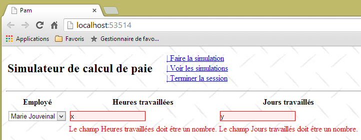 |
 |
اعتبارسنجی سمت کلاینت به دلیل خط ۳ زیر در فایل [Web.config] برنامه به طور پیشفرض فعال است.
<appSettings>
...
<add key="ClientValidationEnabled" value="true" />
</appSettings>
با این حال، از آنجا که در [IndexModel]، فیلد [JoursTravaillés] با نوع [double] اعلام شده است:
public double JoursTravaillés { get; set; }
میتوان یک عدد حقیقی در این فیلد وارد کرد:
 |
علاوه بر این، شما میتوانید مقادیر دلخواه را در هر دو فیلد وارد کنید:
 |
قالب فرم [IndexModel] در حال حاضر به شرح زیر است:
using System.ComponentModel.DataAnnotations;
using System.Web.Mvc;
namespace Pam.Web.Models
{
[Bind(Exclude = "Application")]
public class IndexModel
{
// دادههای دامنهٔ برنامه
public ApplicationModel Application { get; set; }
//مقادیر ارسالشده
[Display(Name = "Employé")]
public string SS { get; set; }
[Display(Name = "Heures travaillées")]
[UIHint("Decimal")]
public double HeuresTravaillées { get; set; }
[Display(Name = "Jours travaillés")]
public double JoursTravaillés { get; set; }
}
}
وظیفه: بهبود این قالب به گونهای که:
- نمایش پیامهای خطای سفارشی؛
- فقط اعداد حقیقی را در بازه [0,400] برای فیلد [HeuresTravaillées] بپذیرید؛
- فقط مقادیر صحیح را در بازه [0,31] برای فیلد [JoursTravaillées] بپذیرد؛
مثال بخش 7.6.2 ممکن است در اینجا مفید باشد. برای بررسی اینکه تعداد روزهای کاری یک عدد صحیح است، میتوان از عبارت منظم استفاده کرد (به مثالهای بخش 5.9.1 مراجعه کنید).
در اینجا چند مثال از آنچه انتظار میرود آورده شده است:
 |
 |
 |
9.11.2. وارد کردن اعداد اعشاری به فرمت فرانسوی
در نسخهٔ فعلی برنامه، تعداد ساعات کاری باید یک عدد اعشاری به فرمت آنگلوساکسون (با نقطه) باشد. فرمت فرانسوی با ویرگول پذیرفته نمیشود:
 |
این مشکل شناسایی و در بخش 6.1 برطرف شده است.
وظیفه: با پیروی از رویهای که در بخش فوقالذکر تشریح شده است، تغییرات لازم را اعمال کنید تا اعداد حقیقی بتوانند با استفاده از قالب اعشاری فرانسوی وارد شوند. برنامه خود را آزمایش کنید.
اکنون، صفحه قبلی به این صورت درمیآید:
 |
9.11.3. اعتبارسنجی فرم از طریق لینک جاوااسکریپت [Faire la simulation]
در حال حاضر، ارسال مقادیر نامعتبر امکانپذیر است، همانطور که در دنباله زیر نشان داده شده است:
 |
 |
وجود شبیهسازی در [1] و تغییر منو در [2] نشان میدهد که کلیک بر روی لینک [Faire la simulation] فرم را ارسال کرده است، حتی با وجود اینکه مقادیر وارد شده نامعتبر بودند. این مشکل شناسایی و در بخش 7.6.5 رفع شده است.
وظیفه: با دنبال کردن رویهای که در بخش فوقالذکر تشریح شده است، اطمینان حاصل کنید که فرم POST که از [Faire la simulation] لینک شده است، در صورتی که مقادیر وارد شده نامعتبر باشند، قابل ارسال نباشد. به یاد داشته باشید که قبل از آزمایش تغییرات خود، حافظه پنهان (کش) مرورگر خود را پاک کنید.
لطفاً توجه داشته باشید که نمای جزئی [Formulaire.cshtml] یک فرم HTML با شناسه [formulaire] (خط ۱ زیر) تولید میکند:
@using (Html.BeginForm("FaireSimulation", "Pam", FormMethod.Post, new { id = "formulaire" }))
{
...
}
این موضوع را میتوان با مشاهده کد منبع فرم در مرورگر تأیید کرد:
<div id="content">
<form action="/Pam/FaireSimulation" id="formulaire" method="post">
...
</form>
<div id="simulation" />
</div>
9.12. مرحله ۶: اجرای یک شبیهسازی
9.12.1. مسئله
وقتی یک شبیهسازی را اجرا میکنیم، میخواهیم نتیجه زیر را به دست آوریم:
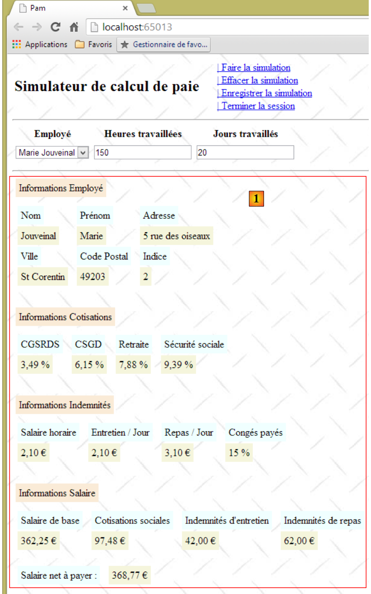 |
نماى جزئی [Simulation.cshtml] اکنون فیش حقوقی یک کارمند را نمایش میدهد.
9.12.2. نوشتن نما [Simulation.cshtml]
نما [Simulation.cshtml] به شرح زیر تغییر میکند:
@model Pam.Metier.Entites.FeuilleSalaire
<hr />
<p><span class="info">Informations Employé</span></p>
<table>
<tbody>
<tr>
<td><span class="libellé">Nom</span>
</td>
<td><span class="libellé">Prénom</span>
</td>
<td><span class="libellé">Adresse</span>
</td>
</tr>
<tr>
<td>
<span class="valeur">@Model.Employe.Nom</span>
</td>
...
</tr>
<tr>
<td><span class="libellé">Ville</span>
</td>
<td><span class="libellé">Code Postal</span>
</td>
<td><span class="libellé">Indice</span>
</td>
</tr>
<tr>
...
</tr>
</tbody>
</table>
<br />
<p><span class="info">Informations Cotisations</span></p>
<table>
...
</tbody>
</table>
<br />
<p><span class="info">Informations Indemnités</span></p>
<table>
...
</table>
<br />
<p><span class="info">Informations Salaire</span></p>
<table>
...
</table>
<br />
<table>
...
</table>
- خط ۱: نما [Simulation.cshtml] بر اساس نوع [FeuilleSalaire] که در بخش ۹.۷.۳ تعریف شده است، مدلسازی شده است؛
- این نما از کلاسهای [libellé, info, valeur] تعریفشده در صفحهشیوهنامهٔ سبک برنامهٔ [Content / Site.css] استفاده میکند:
.libellé {
background-color: azure;
margin: 5px;
padding: 5px;
}
.info {
background-color: antiquewhite;
margin: 5px;
padding: 5px;
}
.valeur {
background-color: beige;
padding: 5px;
margin: 5px;
}
علاوه بر این، همچنان در [Site.css]، ارتفاع سطرهای جداول مختلف HTML در ناحیهای با شناسه [simulation] تنظیم میشود، بهویژه در محلی که برگه پرداخت نمایش داده میشود:
#شبیهسازی جدول {
height: 30px;
}
وظیفه: نمای [Simulation.cshtml] را تکمیل کنید.
برای نمایش مبلغ یورو یک جمع پول، از متد [string.Format] استفاده کنید:
دستور بالا، مقدار [somme] را به عنوان مقدار پولی [C] (Currency) با دو رقم اعشاری [C2] نمایش میدهد.
برای آزمایش این نما، باید یک فیش حقوقی ارائه شود. این باید توسط اقدام [/Pam/FaireSimulation] تأمین شود، که هدف از فراخوانی Ajax از لینک [Faire la simulation] است. در حال حاضر، این اقدام به شرح زیر است:
[HttpGet]
public ViewResult Index(ApplicationModel application)
{
return View(new IndexModel() { Application = application });
}
// اجرای شبیهسازی
[HttpPost]
public PartialViewResult FaireSimulation()
{
return PartialView("Simulation");
}
در مثال بالا، اکشن [FaireSimulation] هیچ قالب (تمپلیتی) را به ویوی [Simulation.cshtml] ارسال نمیکند. این اکشن باید یک فیش حقوقی (payslip) را به آن ارسال کند. ما میدانیم که لایه [métier] است که فیشهای حقوقی را محاسبه میکند. این لایه، [métier]، از طریق قالب برنامه [ApplicationModel] که در بخش 9.10.2 تعریف کردیم، قابل دسترسی است:
public class ApplicationModel
{
// --- دادههای دامنهٔ برنامه ---
public Employe[] Employes { get; set; }
public IPamMetier PamMetier { get; set; }
public SelectListItem[] EmployesItems { get; set; }
}
لایه [métier] از طریق خصوصیت در خط ۵ بالا قابل دسترسی است. برای فعالسازی دسترسی اکشن [FaireSimulation] به لایه [métier]، مدل برنامه را به آن پاس میکنیم، همانطور که برای اکشن [Index] انجام دادیم. کد به شکل زیر درمیآید:
// اجرای شبیهسازی
[HttpPost]
public PartialViewResult FaireSimulation(ApplicationModel application)
{
return PartialView("Simulation");
}
اکنون میتوانیم در داخل اکشن، یک فیش حقوقی فرضی محاسبه کنیم. کد به صورت زیر تغییر میکند:
// اجرای یک شبیهسازی
[HttpPost]
public PartialViewResult FaireSimulation(ApplicationModel application)
{
FeuilleSalaire feuilleSalaire = application.PamMetier.GetSalaire("254104940426058", 150, 20);
return PartialView("Simulation", feuilleSalaire);
}
- در خط ۵، یک حقوق فرضی محاسبه میشود. پارامتر اول یک شماره موجود SS است. این شماره در کلاس [métier] که در بخش 9.7.5 شبیهسازی شده بود، تعریف شده است. پارامتر دوم تعداد ساعات کاری و پارامتر سوم تعداد روزهای کاری است؛
- خط ۶: این slip پرداخت به عنوان قالب به view [Simulation.cshtml] ارسال میشود.
اکنون آمادهٔ آزمایش نما [Simulation.cshtml] هستیم:
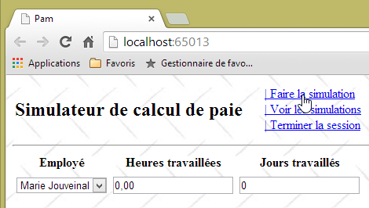 |
ما هیچ دادهای وارد نمیکنیم و یک شبیهسازی درخواست میکنیم. سپس نتیجه زیر را بهدست میآوریم:
 |
9.12.3. محاسبه حقوق واقعی
گزارش فعلی [FaireSimulation] ما همیشه همان فیش حقوقی را محاسبه میکند:
// اجرای یک شبیهسازی
[HttpPost]
public PartialViewResult FaireSimulation(ApplicationModel application)
{
FeuilleSalaire feuilleSalaire = application.PamMetier.GetSalaire("254104940426058", 150, 20);
return PartialView("Simulation", feuilleSalaire);
}
این اطلاعات واردشده را در نظر نمیگیرد:
- کارمندی که حقوق او محاسبه میشود؛
- تعداد ساعاتی که کار کردهاند؛
- تعداد روزهای کاری.
مقادیر واردشده به اقدام [FaireSimulation] به شرح زیر ارسال میشوند:
- کاربر روی لینک [Faire la simulation] کلیک میکند. این امر باعث اجرای تابع JS [faireSimulation] میشود که قبلاً نوشتهایم؛
- تابع JS [faireSimulation] سپس یک فراخوانی Ajax به اکشن سرور [/Pam/FaireSimulation] انجام میدهد که در حال حاضر روی آن کار میکنیم. در حال حاضر، تابع JS [faireSimulation] هیچ اطلاعاتی را به اکشن سرور منتقل نمیکند. لازم است مقادیر واردشده توسط کاربر را به آن ارسال کند؛
- اقدام سرور [/Pam/FaireSimulation] مقادیر واردشده را از دادههای ارسالشده توسط توابع JS و [faireSimulation] بازیابی خواهد کرد.
بیایید از نکته ۲ شروع کنیم: تابع JS [faireSimulation] باید مقادیر وارد شده توسط کاربر را به اقدام سرور [/Pam/FaireSimulation] ارسال کند.
وظیفه: تابع JS [faireSimulation] را تکمیل کنید تا مقادیر واردشده توسط کاربر را ارسال کند. میتوانید به مثال بخش 7.6.5 مراجعه کنید که این موضوع در آن مطرح شده است.
اکنون به نکته ۳ فوق میپردازیم. اکشن سرور [/Pam/FaireSimulation] باید مقادیر ارسالشده توسط توابع JS و [faireSimulation] را بازیابی کند.
وظیفه: متد سرور [FaireSimulation] را تکمیل کنید تا با استفاده از مقادیری که توسط توابع JS و [faireSimulation] ارسال شدهاند، حقوق را محاسبه کند. میتوانیم بار دیگر به مثال بخش 7.6.5 مراجعه کنیم، جایی که این مسئله مورد بررسی قرار گرفته است. فعلاً فرض میکنیم مدلی که از مقادیر ارسالشده استخراج شده، همچنان معتبر است.
نکته: عمل سرور [FaireSimulation] به شرح زیر تغییر میکند:
// اجرای شبیهسازی
[HttpPost]
public PartialViewResult FaireSimulation(ApplicationModel application, FormCollection data)
{
// ایجاد مدل اقدام
...
//تلاش برای بازیابی مقادیر ارسالشده به این قالب
...
//محاسبه حقوق
FeuilleSalaire feuilleSalaire = ...
// نمایش فیش حقوقی
return PartialView("Simulation", feuilleSalaire);
}
در اینجا مثالی از اجرا آورده شده است:
 |
ما [Justine Laverti] را انتخاب میکنیم. سپس نتیجه زیر را به دست میآوریم:
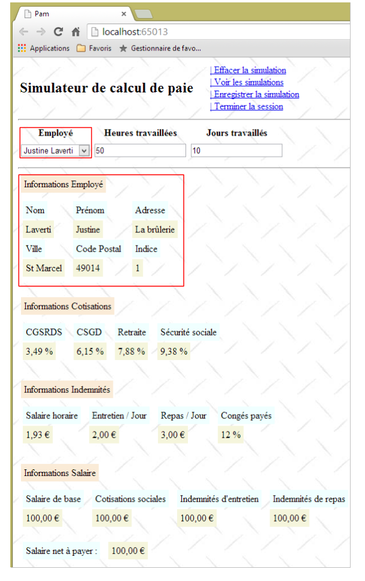 |
ما در واقع فیش حقوقی ساختگی برای [Justine Laverti] را دریافت کردهایم. قبلاً، تنها فیش حقوقی که محاسبه شده بود، مربوط به [Marie Jouveinal] بود. بنابراین، مقدار ثبتشده برای انتخاب کارمند مورد استفاده قرار گرفته است. در مورد تعداد ساعات و تعداد روزها، نمیتوانیم اظهار نظری داشته باشیم زیرا لایه شبیهسازیشده ما [métier] این موارد را در نظر نمیگیرد.
9.12.4. مدیریت خطا
بیایید به مثال زیر نگاه کنیم:
 |
- در [1]، ما کارمندی را انتخاب میکنیم که وجود ندارد (به تعریف لایه شبیهسازیشده [métier] در بخش 9.7.5 مراجعه کنید؛
- در [2]، شبیهسازی انجام میشود؛
- در [3] زیر، یک صفحه خطا نمایش داده میشود.
 |
چه اتفاقی افتاده است؟
تابع JS [faireSimulation] اجرا شد. کد آن به این صورت است:
function faireSimulation() {
...
// انجام دستی یک فراخوانی Ajax
$.ajax({
url: '/Pam/FaireSimulation',
...
beforeSend: function () {
// نمایانگر انتظار روشن است
loading.show();
},
success: function (data) {
...
},
error: function (jqXHR) {
// پیام خطا نمایش داده میشود
simulation.html(jqXHR.responseText);
simulation.show();
},
complete: function () {
// خاموش شدن نشانگر انتظار
loading.hide();
}
});
// منو
setMenu([lnkEffacerSimulation, lnkEnregistrerSimulation, lnkTerminerSession, lnkVoirSimulations]);
}
فراخوانی Ajax ناموفق بود و تابع در خطوط 14–18 اجرا شد. صفحه خطای [jqXHR.responseText] که توسط سرور بازگردانده شد، نمایش داده شد. این کاملاً مشخص است. لایه شبیهسازیشده [métier] یک استثنا پرتاب کرد زیرا شماره SS ارائهشده به آن با هیچ کارمند موجودی مطابقت ندارد (به کد لایه شبیهسازیشده [métier] در بخش 9.7.5 مراجعه کنید). ما باید این مورد را بهدرستی مدیریت کنیم.
ما یک نمای جزئی [Erreurs.chtml] ایجاد خواهیم کرد که هر زمان خطایی در سمت سرور تشخیص داده شود، به کلاینت JS بازگردانده میشود:
 |
کد مربوط به نمای جزئی [Erreurs.chtml] به شرح زیر است:
@model IEnumerable<string>
<hr />
<h2>Les erreurs suivantes se sont produites</h2>
<ul>
@foreach (string msg in Model)
{
<li>@msg</li>
}
</ul>
- خط ۱: نما یک لیست از پیامهای خطا را به عنوان قالب دریافت میکند؛
- خطوط ۵–۱۰: اینها در یک لیست HTML نمایش داده میشوند؛
اکنون، بیایید کد مربوط به اقدام سرور [FaireSimulation] را به شرح زیر اصلاح کنیم:
// اجرای شبیهسازی
[HttpPost]
public PartialViewResult FaireSimulation(ApplicationModel application, FormCollection data)
{
...
// محاسبه حقوق
FeuilleSalaire feuilleSalaire = null;
Exception exception=null;
try
{
// محاسبه حقوق
feuilleSalaire = ...
}
catch (Exception ex)
{
exception = ex;
}
// خطا؟
if (exception == null)
{
// نمایش فیش حقوقی
return PartialView("Simulation", feuilleSalaire);
}
else
{
// نمایش صفحهٔ خطا
return PartialView("Erreurs", Static.GetErreursForException(exception));
}
}
- خطوط ۹–۱۷: محاسبه حقوق اکنون در داخل یک بلوک try/catch انجام میشود؛
- خط ۲۷: اگر خطایی رخ داده باشد، نمای جزئی [Erreurs.cshtml] نمایش داده میشود، با استفاده از فهرست پیامهای خطا که توسط متد استاتیک [Static.GetErreursForException(exception)] ارائه شده است، بهعنوان قالب.
کلاس [Static] شامل دو تابع کمکی ایستا، [1] است:
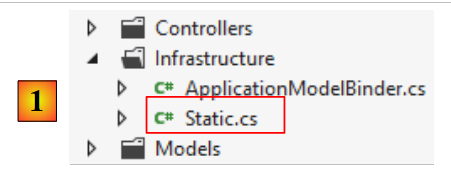 |
using System;
using System.Collections.Generic;
using System.Web.Mvc;
namespace PamWeb.Infrastructure
{
public class Static
{
// فهرست پیامهای خطا برای یک استثنا
public static List<string> GetErreursForException(Exception ex)
{
List<string> erreurs = new List<string>();
while (ex != null)
{
erreurs.Add(ex.Message);
ex = ex.InnerException;
}
return erreurs;
}
// فهرست پیامهای خطا مربوط به قالب نامعتبر
public static List<string> GetErreursForModel(ModelStateDictionary état)
{
List<string> erreurs = new List<string>();
if (!état.IsValid)
{
foreach (ModelState modelState in état.Values)
{
foreach (ModelError error in modelState.Errors)
{
erreurs.Add(getErrorMessageFor(error));
}
}
}
return erreurs;
}
// پیام خطا مربوط به یک عنصر از قالب اقدام
static private string getErrorMessageFor(ModelError error)
{
if (error.ErrorMessage != null && error.ErrorMessage.Trim() != string.Empty)
{
return error.ErrorMessage;
}
if (error.Exception != null && error.Exception.InnerException == null && error.Exception.Message != string.Empty)
{
return error.Exception.Message;
}
if (error.Exception != null && error.Exception.InnerException != null && error.Exception.InnerException.Message != string.Empty)
{
return error.Exception.InnerException.Message;
}
return string.Empty;
}
}
}
- خطوط ۱۰–۱۹: تابع استاتیک [GetErreursForException] لیست خطاها را از استک استثنا بازمیگرداند؛
- خطوط ۲۲–۳۶: تابع ایستا [GetErreursForModel] فهرست خطاها را برای یک قالب اقدام نامعتبر بازمیگرداند. کد این تابع، و همچنین کد متد خصوصی [getErrorMessageFor] (خطوط ۳۹–۵۴)، قبلاً ملاحظه شده است.
پس از انجام این کار، میتوانیم مورد خطا را دوباره آزمایش کنیم:
 |
- در [1]، کارمندی را که وجود ندارد انتخاب میکنیم؛
- در [2]، شبیهسازی را اجرا میکنیم؛
- در [3]، صفحهٔ خطای جدید را بازیابی میکنیم.
بیایید به اقدام سرور [FaireSimulation] بازگردیم:
// اجرای شبیهسازی
[HttpPost]
public PartialViewResult FaireSimulation(ApplicationModel application, FormCollection data)
{
// ایجاد مدل اقدام
IndexModel modèle = new IndexModel() { Application = application};
//تلاش برای بازیابی مقادیر ارسالشده به مدل
TryUpdateModel(modèle, data);
// محاسبه حقوق
...
}
در خط ۸، مدل را از خط ۶ با مقادیر ارسالشده توسط فراخوانی Ajax بهروزرسانی میکنیم. ما مدل را اعتبارسنجی نمیکنیم. این کار را انجام میدهیم زیرا نمیتوانیم بدانیم مقادیر ارسالشده از کجا آمدهاند. ممکن است کسی به یک POST دستکاری کرده و دادههای نامعتبر برای ما ارسال کرده باشد.
وظیفه: طبق الگویی که برای مدیریت استثناها توسعه دادهایم، اقدام سرور [FaireSimulation] را طوری اصلاح کنید که هنگام نامعتبر بودن دادههای ارسالشده، یک صفحه خطا بازگرداند. برای این کار، از متد استاتیک [GetErreursForModel] کلاس [Static] استفاده خواهیم کرد.
چگونه میتوانید این تغییر را آزمایش کنید؟ در بخش 9.11.3، شما اطمینان حاصل کردید که تابع JS [faireSimulation] در صورتی که مقادیر وارد شده نامعتبر باشند، عملیات POST را انجام نمیدهد. خطوطی را که این کار را انجام میدهند، کامنت کنید، سپس آزمون زیر را اجرا کنید:
 |
- در [1]، شبیهسازی را با مقادیر نامعتبر اجرا کنید؛
- در [2]، ما با موفقیت صفحه خطایی را که همین حالا ایجاد کردهایم بازیابی میکنیم، که ثابت میکند اعتبارسنجهای سمت سرور به درستی کار کردهاند.
سپس، به یاد داشته باشید که خطوطی را که به تازگی در توابع JS و [faireSimulation] کامنت کردهاید، از حالت کامنت خارج کنید.
9.13. مرحله ۷: راهاندازی جلسه کاربری
برنامه [Simulateur de calcul de paie] به کاربر اجازه میدهد تا با استفاده از لینک [Faire la simulation] شبیهسازیهای مختلف حقوق و دستمزد را انجام دهد، و با استفاده از لینک [Enregistrer la simulation] آنها را ذخیره کند، آنها را با استفاده از لینک [Voir les simulations] نمایش داده و با استفاده از لینک [Retirer la simulation] حذف کنید. ما میدانیم که بین دو درخواست متوالی کاربر، هیچ حالتی حفظ نمیشود مگر اینکه از طریق مکانیزم جلسه ایجاد شود (به بخش 4.10 مراجعه کنید). در اینجا کاملاً روشن است که باید فهرست شبیهسازیهایی را که کاربر در طول زمان ذخیره کرده است، در جلسه (session) ذخیره کنیم. دادههای دیگری نیز برای ذخیره وجود دارد: هنگامی که کاربر یک شبیهسازی را اجرا میکند، آن شبیهسازی تنها در صورتی به فهرست شبیهسازیها اضافه میشود که کاربر از طریق لینک [Enregistrer la simulation] این کار را درخواست کند. وقتی این کار انجام میشود، ما باید قادر به بازیابی شبیهسازی محاسبه شده در درخواست قبلی باشیم. برای این منظور، آن نیز در جلسه (session) ذخیره خواهد شد. در نهایت، ما شبیهسازیها را از عدد ۱ شمارهگذاری خواهیم کرد. برای شمارهگذاری صحیح یک شبیهسازی جدید، ما باید شماره شبیهسازی قبلی را نیز، مجدداً در جلسه (session)، حفظ کرده باشیم.
در بخش 4.10، ما مفهوم مدل جلسه را به عنوان یک پارامتر ورودی برای یک اقدام معرفی کردیم، به طوری که اقدام به جلسه دسترسی داشته باشد. ما این مفهوم را مجدداً بررسی خواهیم کرد. اگر این مفهوم برای شما مبهم است، از شما دعوت میشود بخش مربوطه را دوباره بخوانید.
ما کلاس زیر را ایجاد میکنیم، [SessionModel]:
 |
کد آن به شرح زیر است:
using Pam.Web.Models;
using System.Collections.Generic;
namespace Pam.Web.Models
{
public class SessionModel
{
// فهرست شبیهسازیها
public List<Simulation> Simulations { get; set; }
// شماره شبیهسازی بعدی
public int NumNextSimulation { get; set; }
//آخرین شبیهسازی
public Simulation Simulation { get; set; }
// سازنده
public SessionModel()
{
// فهرست خالی شبیهسازیها
Simulations = new List<Simulation>();
// شماره شبیهسازی بعدی
NumNextSimulation = 1;
}
}
}
کلاس [Simulation]، در خطوط ۹ و ۱۳، اطلاعاتی در مورد یک شبیهسازی ثبت خواهد کرد. چه اطلاعاتی را باید ثبت کنیم؟ لینک [Faire la simulation] یک برگه پرداخت از نوع [FeuilleSalaire] را محاسبه میکند. شامل کردن این مورد در شبیهسازی طبیعی به نظر میرسد. علاوه بر این، باید اطلاعاتی را که منجر به این فیش حقوقی شده است، ثبت کنیم:
- کارمند منتخب. این اطلاعات را میتوان در فیلد [FeuilleSalaire.Employe] یافت. بنابراین ذخیره کردن آن برای بار دوم غیرضروری است؛
- تعداد ساعات و روزهای کاری. این اطلاعات در نوع [FeuilleSalaire] گنجانده نشده است. بنابراین باید آن را ذخیره کنیم.
در نهایت، هر شبیهسازی با یک شماره شناسایی میشود. بنابراین میتوانیم با کلاس زیر شروع کنیم: [Simulation]:
using Pam.Metier.Entites;
namespace Pam.Web.Models
{
public class Simulation
{
// شماره شبیهسازی
public int Num { get; set; }
// تعداد ساعات کاری
public double HeuresTravaillées { get; set; }
// تعداد روزهای کاری
public int JoursTravaillés { get; set; }
// برگه پرداخت
public FeuilleSalaire FeuilleSalaire { get; set; }
}
}
عمل سرور [FaireSimulation] باید علاوه بر محاسبه یک فیش حقوقی، یک شبیهسازی ایجاد کرده و آن را در جلسه قرار دهد. برای این کار، این عمل قالب جلسه را به عنوان یک پارامتر دریافت خواهد کرد:
// اجرای شبیهسازی
[HttpPost]
public PartialViewResult FaireSimulation(ApplicationModel application, SessionModel session, FormCollection data)
{
//ایجاد قالب اقدام
IndexModel modèle = new IndexModel() { Application = application };
//تلاش برای بازیابی مقادیر ارسالشده به قالب
TryUpdateModel(modèle, data);
// قالب معتبر است؟
if (!ModelState.IsValid)
{
//نمایش صفحهٔ خطا
return PartialView("Erreurs", Static.GetErreursForModel(ModelState));
}
//محاسبه حقوق
FeuilleSalaire feuilleSalaire = null;
Exception exception = null;
try
{
// محاسبه حقوق
feuilleSalaire = application.PamMetier.GetSalaire(modèle.SS, modèle.HeuresTravaillées, (int)modèle.JoursTravaillés);
}
catch (Exception ex)
{
exception = ex;
}
// خطا؟
if (exception != null)
{
//صفحهٔ خطا نمایش داده میشود
return PartialView("Erreurs", Static.GetErreursForException(exception));
}
//یک شبیهسازی ایجاد شده و به جلسه اضافه میشود
session.Simulation = ...
// نمایش فیش حقوقی
return PartialView("Simulation", feuilleSalaire);
}
- خط ۳: اکشن قالب جلسه را بهعنوان پارامتر دریافت میکند؛
وظیفه ۱: کد اقدام را در خط ۳۴ تکمیل کنید
وظیفه ۲: با دنبال کردن رویه در بخش ۴.۱۰، مراحل لازم را برای اطمینان از اینکه پارامتر اقدام [SessionModel session] به درستی توسط چارچوب مقداردهی اولیه میشود، انجام دهید. اگر اقدامی صورت نگیرد، این پارامتر یک نشانگر null خواهد داشت.
9.14. مرحله ۸: ذخیره یک شبیهسازی
9.14.1. مشکل
پس از اجرای یک شبیهسازی، میتوانیم آن را ذخیره کنیم:
 |

نمایه جزئی [Simulations.cshtml] اکنون فهرست شبیهسازیهای انجامشده توسط کاربر را نمایش میدهد. لطفاً توجه داشته باشید که فیش حقوقی محاسبهشده فرضی است.
9.14.2. نوشتن اقدام سرور [EnregistrerSimulation]
لینک Ajax با شناسه [Enregistrer la simulation]، اقدام سرور [EnregistrerSimulation] را فراخوانی میکند که کد آن قبلاً به شرح زیر بود:
[HttpPost]
public PartialViewResult EnregistrerSimulation()
{
return PartialView("Simulations");
}
این کد به شرح زیر بهروزرسانی شده است:
// ذخیره یک شبیهسازی
[HttpPost]
public PartialViewResult EnregistrerSimulation(SessionModel session)
{
// جدیدترین شبیهسازی در فهرست شبیهسازیهای جلسه ذخیره میشود
...
// افزایش شماره شبیهسازی بعدی در جلسه
...
//فهرست شبیهسازیها را نمایش میدهد
...
}
- خط ۱: اکشن [EnregistrerSimulation] نیازمند دسترسی به جلسه (session) است. به همین دلیل مدل جلسه را به عنوان پارامتر میپذیرد.
وظیفه: تکمیل عمل سرور [EnregistrerSimulation].
9.14.3. نوشتن نمای جزئی [Simulations.cshtml]
عمل قبلی، [EnregistrerSimulation]، نمای جزئی [Simulations.cshtml] را با استفاده از فهرست شبیهسازیهای انجامشده توسط کاربر بهعنوان قالب نمایش میدهد. کد آن به شرح زیر است:
@model IEnumerable<Simulation>
@using Pam.Web.Models
@if (Model.Count() == 0)
{
<h2>Votre liste de simulations est vide</h2>
}
@if (Model.Count() != 0)
{
<h2>Liste des simulations</h2>
...
}
وظیفه ۱: کد نمای جزئی [Simulations.cshtml] را تکمیل کنید. از یک جدول به نام HTML برای نمایش شبیهسازیها استفاده خواهد شد. میتوانید به مثالهای بخش ۵.۴ مراجعه کنید.
توجه: لینک [retirer] برای هر شبیهسازی در جدول HTML یک لینک جاوااسکریپت با شکل زیر خواهد بود:
که در آن N شماره شبیهسازی است.
وظیفه ۲: با اجرای شبیهسازیها، اپلیکیشن خود را آزمایش کنید. برای انجام این کار، مراحل زیر را تکرار کنید: ۱) صفحهٔ برنامه را از طریق [F5] بارگذاری کنید، ۲) یک شبیهسازی را اجرا کنید، ۳) آن را ذخیره کنید. شبیهسازیها در جلسه (session) انباشته میشوند که باید در نمای [Simulations.cshtml] منعکس شود.
وظیفه ۳: نمای جزئی [Simulations.cshtml] را بهبود دهید تا رنگهای سطرهای جدول HTML به صورت متناوب تغییر کنند.

ردیفهای <tr> در جدول HTML، کلاسهای CSS، [pair] و [impair] که در شیوهنامه [/Content/Site.css] تعریف شدهاند:
.impair {
background-color: beige;
}
.pair {
background-color: lightsteelblue;
}
9.15. مرحله ۹: بازگشت به فرم ورود داده
9.15.1. مشکل
پس از به دست آوردن لیست شبیهسازیها، میتوانیم به فرم ورودی بازگردیم، کاری که مدتی بود قادر به انجام آن نبودیم:

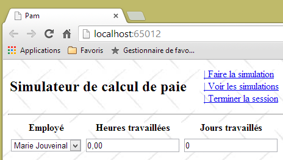
9.15.2. نوشتن اکشن سرور [Formulaire]
لینک Ajax [Retour au formulaire de simulation] اقدام سرور [Formulaire] را فراخوانی میکند که کد آن تا کنون به شرح زیر بود:
[HttpPost]
public PartialViewResult Formulaire()
{
return PartialView("Formulaire");
}
نما جزئی [Formulaire] که نمایش میدهد، منتظر یک قالب [IndexModel] است (خط ۱ زیر):
@model Pam.Web.Models.IndexModel
@using (Html.BeginForm("FaireSimulation", "Pam", FormMethod.Post, new { id = "formulaire" }))
{
...
}
<div id="simulation" />
به همین دلیل لینک [Retour au formulaire de simulation] دیگر کار نمیکرد.
وظیفه: نوشتن نسخهٔ جدید اکشن سرور [Formulaire] (۲ خط برای بازنویسی) و سپس انجام تستها.
9.15.3. اصلاح تابع جاوااسکریپت [retourFormulaire]
با اصلاح انجامشده در بالا، اکنون میتوانیم به فرم بازگردیم، اما سپس خطایی رخ میدهد:
 |
- در [1]، به فرم ورودی بازمیگردیم؛
- در [2]، ما یک شبیهسازی را با ورودیهای نادرست اجرا میکنیم. سپس متوجه میشویم که اعتبارسنجهای سمت کلاینت دیگر کار نمیکنند. در اینجا، سرور فراخوانده شد و به لطف کارهای انجامشده در بخش 9.12.4، یک صفحه خطا بازگرداند.
این مشکل در بخش 7.6.7 شناسایی و رفع شد.
وظیفه: با دنبال کردن رویه در بخش 7.6.7، تابع جاوااسکریپت [retourFormulaire] را اصلاح کنید و سپس آزمایشهایی را برای تأیید اینکه اعتبارسنجهای سمت کلاینت دوباره کار میکنند، انجام دهید.
9.16. مرحله ۱۰: مشاهده فهرست شبیهسازیها
9.16.1. مشکل
هنگام کار با فرم شبیهسازی، میتوانید فهرست شبیهسازیهایی را که انجام دادهاید مشاهده کنید:
 | 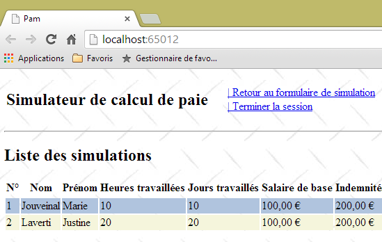 |
9.16.2. کد اقدام سرور [VoirSimulations]
لینک Ajax با شناسه [Voir les simulations]، اقدام سرور [VoirSimulations] را فراخوانی میکند که کد آن تا کنون به شرح زیر بود:
//مشاهده شبیهسازیها
[HttpPost]
public PartialViewResult VoirSimulations()
{
return PartialView("Simulations");
}
نما جزئی [Simulations] که نمایش میدهد، منتظر یک قالب [IEnumerable<Simulation>] است (خط ۱ زیر):
@model IEnumerable<Simulation>
@using Pam.Web.Models
@if (Model.Count() == 0)
{
<h2>Votre liste de simulations est vide</h2>
}
@if (Model.Count() != 0)
{
<h2>Liste des simulations</h2>
...
}
به همین دلیل لینک [Voir les simulations] دیگر کار نمیکرد.
وظیفه: نسخه جدید اکشن سرور [VoirSimulations] را بنویسید (۲ خط برای بازنویسی) و سپس تستها را اجرا کنید.
9.17. مرحله ۱۱: پایان جلسه
9.17.1. مشکل
جلسه کاربر را میتوان در هر زمان با استفاده از لینک [Ajax] [Terminer la session] پایان داد. این کار باعث پایان یافتن جلسه جاری و شروع یک جلسه جدید میشود. علاوه بر این، نمای فرم بازیابی میشود:
 |
 |
- در [1]، دو شبیهسازی را انجام دادیم و سپس جلسه را پایان دادیم؛
- در [2]، به فرم ورود داده بازگشتهایم. میخواهیم شبیهسازیها را مشاهده کنیم؛
- در [3]، به دلیل تغییر جلسه، فهرست شبیهسازیها اکنون خالی است.
9.17.2. اقدام سرور [TerminerSession]
لینک Ajax [Terminer la session] اقدام سرور [TerminerSession] را فراخوانی میکند که کد آن تا کنون به شرح زیر بود:
//پایان جلسه
[HttpPost]
public PartialViewResult TerminerSession()
{
return PartialView("Formulaire");
}
نمایهٔ جزئی [Formulaire] که نمایش میدهد، منتظر یک قالب [IndexModel] است (خط ۱ زیر):
@model Pam.Web.Models.IndexModel
@using (Html.BeginForm("FaireSimulation", "Pam", FormMethod.Post, new { id = "formulaire" }))
{
...
}
<div id="simulation" />
به همین دلیل لینک [Terminer la session] دیگر کار نمیکرد.
وظیفه: نسخهٔ جدید اکشن سرور [TerminerSession] را بنویسید (۲ خط برای بازنویسی) و سپس تستها را اجرا کنید.
توجه: برای خروج از جلسه در داخل اکشن، بنویسید:
9.17.3. اصلاح تابع جاوااسکریپت [terminerSession]
با اصلاح انجامشده در بالا، اکنون میتوانیم به فرم بازگردیم، اما در این هنگام یک ناهنجاری رخ میدهد – همان ناهنجاری که پیشتر در بخش 9.15.3 توضیح داده شد.
وظیفه: با دنبال کردن رویهای که در بخش 9.15.3 انجام دادید، تابع جاوااسکریپت [terminerSession] را اصلاح کنید و سپس آزمایشهایی را برای بررسی اینکه اعتبارسنجهای سمت کلاینت دوباره کار میکنند، انجام دهید.
9.18. مرحله ۱۲: پاک کردن شبیهسازی
9.18.1. مشکل
پس از ایجاد یک شبیهسازی، میتوان آن را با استفاده از لینک جاوا اسکریپت [Effacer la simulation] پاک کرد:
 |  |
9.18.2. نوشتن اقدام کلاینت [effacerSimulation]
تابع جاوااسکریپت [effacerSimulation] در حال حاضر کد زیر را دارد:
function effacerSimulation() {
// پاک کردن ورودیهای فرم
// ...
// شبیهسازی را در صورت وجود پنهان میکند
$("#simulation").hide();
// منو
setMenu([lnkFaireSimulation, lnkTerminerSession, lnkVoirSimulations]);
}
وظیفه: این کد را تکمیل کنید. ممکن است بخواهید از مثال بخش 7.6.6 الهام بگیرید.
9.19. مرحله ۱۳: حذف یک شبیهسازی
9.19.1. مشکل
وقتی در صفحه شبیهسازیها هستید، میتوانید برخی از آنها را با استفاده از لینک جاوااسکریپت [retirer] حذف کنید:


9.19.2. ثبت تراکنش مشتری [retirerSimulation]
لینکهای [retirer] به شکل زیر هستند: HTML
که در آن N شماره شبیهسازی است.
وظیفه: مطابق با رویهای که در بخشهای 9.9.3 تشریح شده است، تابع JS [retirerSimulation] را بنویسید. این یک فراخوانی ایجکس از نوع POST به اکشن [/Pam/RetirerSimulation] ارسال میکند. این داده N را در قالب num=N ارسال خواهد کرد.
توجه: تابع JS [retirerSimulation] مشابه توابع دیگر JS است که شما نوشتهاید و یک فراخوانی Ajax به سرور انجام میدهند. تنها ویژگی جدید در اینجا POST یک مقدار است که در فرم قرار ندارد. ما میدانیم که مقادیر ارسالشده در یک رشته در قالب زیر ترکیب میشوند:
بنابراین تابع JS [retirerSimulation] شکل زیر را خواهد داشت:
function retirerSimulation(N) {
// یک فراخوانی دستی Ajax انجام دهید
$.ajax({
url: '/Pam/RetirerSimulation',
...
data:"num="+N,
...
});
// منو
setMenu([lnkRetourFormulaire, lnkTerminerSession]);
}
- خط ۶: خاصیت [data] یک فراخوانی Ajax JQuery نمایانگر رشتهای است که به سرور ارسال میشود.
9.19.3. نوشتن اقدام سرور [RetirerSimulation]
عمل سرور [RetirerSimulation]:
- یک پارامتر ارسالشده با POST به نام [num] را دریافت میکند که شماره یک شبیهسازی است؛
- باید شبیهسازی با آن شماره را از فهرست شبیهسازیهای ذخیرهشده در جلسه حذف کند؛
- سپس باید فهرست جدید شبیهسازیها را نمایش دهد.
وظیفه: بنویسید اقدام سرور [RetirerSimulation]. برای اطلاع از نحوه بازیابی پارامتر POST با نام [num] به بخش 4.1 مراجعه کنید.
9.20. مرحله ۱۴: بهبود روش راهاندازی برنامه
اپلیکیشن وب ما کامل است. این برنامه با یک کلاس شبیهسازیشده [métier] بهصورت کاربردی اجرا میشود. بیایید معماریای را که توسعه دادهایم، مرور کنیم:
 |
چند جزئیات باقی مانده است که باید قبل از پرداختن به پیادهسازی واقعی لایه [métier] مرتب شوند، و این کار در متد راهاندازی برنامه انجام میشود: متد [Application_Start] در [Global.asax]:
 |
متد [Application_Start] در [Global.asax] تنها یک بار هنگام شروع برنامه اجرا میشود. اینجاست که میتوان از فایل پیکربندی [Web.config] استفاده کرد. فعلاً، متد [Application_Start] ما به این صورت است:
// برنامه
protected void Application_Start()
{
// ----------تولید خودکار
AreaRegistration.RegisterAllAreas();
WebApiConfig.Register(GlobalConfiguration.Configuration);
FilterConfig.RegisterGlobalFilters(GlobalFilters.Filters);
RouteConfig.RegisterRoutes(RouteTable.Routes);
BundleConfig.RegisterBundles(BundleTable.Bundles);
// -------------------------------------------------------------------
// ---------- پیکربندی خاص
// -------------------------------------------------------------------
// دادههای دامنهٔ برنامه
ApplicationModel application = new ApplicationModel();
Application["data"] = application;
// [métier] ایجاد لایه
application.PamMetier = new PamMetier();
...
// پیونددهنده مدلها
...
}
در خط ۱۷، لایه کسبوکار با استفاده از اپراتور «new» نمونه سازی میشود. علاوه بر این، مدل برنامه به صورت زیر تعریف میشود:
public class ApplicationModel
{
// --- دادههای دامنهٔ برنامه ---
public Employe[] Employes { get; set; }
public IPamMetier PamMetier { get; set; }
public SelectListItem[] EmployesItems { get; set; }
}
در خط ۵ بالا، میبینیم که نوع خاصیت [PamMetier] از نوع رابط [IPamMetier] است. این بدان معناست که این خاصیت میتواند توسط هر شیئی که این رابط را پیادهسازی میکند، مقداردهی اولیه شود. با این حال، در خط 17 از [Application_Start]، نام کلاسی را که [IPamMetier] را پیادهسازی میکند، به صورت سختکد (hard-coded) وارد کردهایم. بنابراین اگر لایه [métier] با استفاده از یک کلاس جدید که [IPamMetier] را پیادهسازی میکند، پیادهسازی شود، این خط باید تغییر کند. این موضوع چندان مهم نیست، اما میتوان از آن اجتناب کرد. تعریف کلاسی که رابط [IPamMetier] را پیادهسازی میکند، میتواند به یک فایل پیکربندی منتقل شود. برای تغییر پیادهسازی، کافی است محتوای این فایل پیکربندی را تغییر داد. نیازی به تغییر کد .NET نیست.
در اینجا، از کانتینر تزریق وابستگی [Spring.net] استفاده خواهیم کرد. فریمورکهای .NET دیگری نیز وجود دارند که میتوانند همین کار را، شاید بهتر و سادهتر، انجام دهند.
معماری پروژه به شرح زیر است:
 |
- به [A]، متد инициализация لایه [ASP.NET MVC] یک مرجع به لایه شبیهسازیشده [métier] را از [Spring.net] درخواست خواهد کرد؛
- در [B]، [Spring.net] لایه شبیهسازیشده [métier] را با استفاده از فایل پیکربندی آن ایجاد خواهد کرد تا مشخص کند که کدام کلاس را باید نمونهسازی کند؛
- در [C]، [Spring.net] ارجاع به لایه شبیهسازیشده [métier] را به لایه [ASP.NET MVC] بازمیگرداند.
شایان ذکر است که به طور پیشفرض، اشیایی که توسط [Spring.net] مدیریت میشوند، از نوع تکنمونه (singleton) هستند: از هر کدام تنها یک نمونه وجود دارد. بنابراین، اگر بعداً در مثال ما، کد یک مرجع را از [Spring.net] برای لایه شبیهسازیشده [métier] درخواست کند، [Spring.net] به سادگی مرجع شیئی را که در ابتدا ایجاد شده بود، بازمیگرداند.
9.20.1. افزودن ارجاعات [Spring] به پروژه وب
ما از [Spring.net] استفاده خواهیم کرد. این فریمورک به صورت DLL ارائه میشود که باید به مراجع پروژه اضافه شود. این کار به شرح زیر انجام میشود:
 |
در [1]، روی شاخه [References] پروژه کلیک راست کرده، سپس گزینه [Gérer les packages NuGet] را انتخاب کنید. به یک اتصال اینترنت نیاز است. سپس، همانطور که قبلاً برای کتابخانههای JQuery و [Globalize] توضیح داده شد، عمل کنید. عبارت [Spring.core] را جستجو کرده و این بسته را نصب کنید. این نصب شامل دو بسته DLL است: [Spring.core] و [2]، و [Common.Logging] و [3]. در مثالهای زیر از نسخهٔ ۱.۳.۲ Spring استفاده شده است.
توجه: اگر به اینترنت دسترسی ندارید، این فایلهای DLL را در پوشهای به نام [lib] در میان مطالب مورد مطالعه خواهید یافت.
9.20.2. پیکربندی [web.config]
کلاس پیادهسازی برای رابط [IPamMetier] در فایل [web.config] تعریف شده است.
<configuration>
<configSections>
...
<sectionGroup name="spring">
<section name="objects" type="Spring.Context.Support.DefaultSectionHandler, Spring.Core" />
<section name="context" type="Spring.Context.Support.ContextHandler, Spring.Core" />
</sectionGroup>
</configSections>
<!-- پیکربندی Spring -->
<spring>
<context>
<resource uri="config://spring/objects" />
</context>
<objects xmlns="http://www.springframework.net">
<object id="pammetier" type="Pam.Metier.Service.PamMetier, pam-metier-simule"/>
</objects>
</spring>
...
- خطوط ۲–۸: تگ <configSections> را در فایل پیدا کنید و خطوط ۴–۷ را درون آن قرار دهید؛
- خط ۴: ویژگی [name="spring"] اطلاعاتی در مورد بخش [spring] در خطوط ۱۰–۱۷ ارائه میدهد؛
- خط ۵: کلاس [Spring.Context.Support.DefaultSectionHandler] را تعریف میکند که در DLL و [Spring.Core] قرار دارد و قادر به پردازش بخش [objects] در خطوط ۱۴–۱۶ است؛
- خط ۶: کلاس [Spring.Context.Support.ContextHandler] را که در DLL و [Spring.Core] قرار دارد، به عنوان کلاسی که قادر به پردازش بخش [context] در خطوط ۱۱–۱۳ است، تعریف میکند؛
- خطوط ۱۱–۱۳: این بخش اطلاعات [<resource uri="config://spring/objects" />] را ارائه میدهد که نشان میدهد اشیاء Spring در فایل پیکربندی در بخش [/spring/objects]، یعنی در خطوط ۱۴–۱۶، قرار دارند؛
- خطوط ۱۴–۱۶: تگ [objects] اشیاء Spring را معرفی میکند؛
- خط 15: یک شیء با شناسه [id="pammetier"] را تعریف میکند که نمونهای از کلاس [Pam.Metier.Service.PamMetier] است که در DLL [pam-metier-simule] قرار دارد. باید مراقب باشید که در اینجا اشتباه نکنید. برای ویژگی [id]، میتوانید هر مقداری را که دوست دارید وارد کنید. شما از این شناسه در [Global.asax] استفاده خواهید کرد. کلاس [Pam.Metier.Service.PamMetier] مربوط به لایه شبیهسازیشده ما [métier] است. برای یافتن نام کامل آن، باید به تعریفش بازگردید:
namespace Pam.Metier.Service
{
public class PamMetier : IPamMetier
{
...
برای DLL و [pam-metier-simule]، باید ویژگیهای پروژه C# با شناسه [pam-metier-simule] را بررسی کنید:
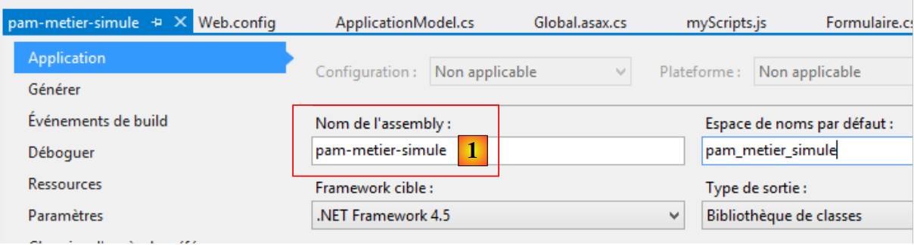 |
شما باید از نام مشخصشده در [1] استفاده کنید.
9.20.3. اصلاح [Application_Start]
متد [Application_Start] به شرح زیر بهروزرسانی شده است:
using Spring.Context.Support;
// برنامه
protected void Application_Start()
{
// ----------خودتولیدشده
AreaRegistration.RegisterAllAreas();
WebApiConfig.Register(GlobalConfiguration.Configuration);
FilterConfig.RegisterGlobalFilters(GlobalFilters.Filters);
RouteConfig.RegisterRoutes(RouteTable.Routes);
BundleConfig.RegisterBundles(BundleTable.Bundles);
// -------------------------------------------------------------------
// ---------- پیکربندی خاص
// -------------------------------------------------------------------
// دادههای دامنهٔ برنامه
ApplicationModel application = new ApplicationModel();
Application["data"] = application;
// [métier] ایجاد لایه
application.PamMetier = ContextRegistry.GetContext().GetObject("pammetier") as IPamMetier;
...
// پیونددهنده مدلها
...
}
- خط ۱۹: کلاس Spring با نام [ContextRegistry] استفاده میشود که کلاسی قادر به پردازش فایل [web.config] است. برای این کار، فضای نام از خط ۱ باید وارد شود. متد استاتیک [GetContext] محتویات تگهای [context] را که مکان اشیاء Spring را نشان میدهند، بازیابی میکند. سپس متد استاتیک [GetObject] یک شیء خاص را با استفاده از ویژگی id آن بازیابی میکند. توجه داشته باشید که نام کلاسی که رابط [IPamMetier] را پیادهسازی میکند، دیگر بهصورت سختکد در کد درج نشده است. این نام اکنون در فایل [web.config] قرار دارد.
پس از اعمال تمام این تغییرات، برنامه خود را آزمایش کنید. باید کار کند.
9.20.4. پردازش خطای راهاندازی برنامه
در متد [Application_Start]، ما نوشتیم:
application.PamMetier = ContextRegistry.GetContext().GetObject("pammetier") as IPamMetier;
دستور سمت راست علامت = ممکن است با خطا مواجه شود. دلایل مختلفی برای این امر وجود دارد:
- واضحترین دلیل این است که نام شیء مورد نظر برای نمونهسازی نادرست است؛
- دلیل دیگر این است که ایجاد لایه [métier] با خطا مواجه میشود. این مورد برای لایه شبیهسازیشده [métier] ما صادق نیست، اما میتواند برای لایه واقعی [métier] ما که به یک پایگاه داده متصل خواهد شد، اتفاق بیفتد. ممکن است SGBD راهاندازی نشود، اطلاعات مربوط به پایگاهداده مورد مدیریت ممکن است نادرست باشد و غیره...
ما هر استثنا را با استفاده از یک بلوک try/catch مدیریت خواهیم کرد. کد به شرح زیر بهروزرسانی شده است:
// برنامه
protected void Application_Start()
{
// ----------تولید خودکار
...
// -------------------------------------------------------------------
// ---------- پیکربندی خاص
// -------------------------------------------------------------------
// دادههای دامنهٔ برنامه
ApplicationModel application = new ApplicationModel();
Application["data"] = application;
application.InitException = null;
try
{
// [métier] نمونهسازی لایه
application.PamMetier = ContextRegistry.GetContext().GetObject("pammetier") as IPamMetier;
}
catch (Exception ex)
{
application.InitException = ex;
}
//اگر خطا وجود نداشته باشد
if (application.InitException == null)
{
....
}
// بستهبندهای مدل
...
}
- در خط ۱۲، یک ویژگی جدید به نام [InitException] را به مدل برنامه معرفی میکنیم:
public class ApplicationModel
{
//--- دادههای دامنهٔ برنامه ---
public Employe[] Employes { get; set; }
public IPamMetier PamMetier { get; set; }
public SelectListItem[] EmployesItems { get; set; }
public Exception InitException { get; set; }
}
- خط ۷ بالا: استثنایی که ممکن است در حین راهاندازی برنامه رخ دهد؛
- خطوط ۱۳ تا ۲۱ از [Application_Start]: ایجاد لایه [métier] اکنون در داخل یک بلوک try/catch انجام میشود؛
- خط ۲۰: استثناء ثبت میشود؛
- خطوط ۲۳–۲۶: اگر خطایی رخ نداده باشد، کد همانطور که قبلاً بود اجرا میشود؛
- خط ۲۸: نمونههای [ModelBinders] صرفنظر از اینکه خطایی رخ داده باشد یا خیر، ایجاد میشوند. این مهم است. ما میخواهیم اطمینان حاصل کنیم که مدل برنامه [ApplicationModel] به درستی توسط فریمورک متصل میشود.
ما میدانیم که وقتی برنامه اجرا میشود، اقدام سرور [Index] اجرا میگردد. در حال حاضر، به این صورت است:
[HttpGet]
public ViewResult Index(ApplicationModel application)
{
return View(new IndexModel() { Application = application });
}
در خط ۲، اکشن [Index] مدل برنامه را دریافت میکند. بنابراین میتواند تشخیص دهد که آیا فرآیند راهاندازی با موفقیت انجام شده است یا خیر و در صورت شکست راهاندازی به هر نحوی، یک صفحه خطا نمایش دهد. ما کد را به شرح زیر بهروزرسانی میکنیم:
[HttpGet]
public ViewResult Index(ApplicationModel application)
{
// خطای инициализация؟
if (application.InitException != null)
{
// صفحه خطا بدون منو
return View("InitFailed",Static.GetErreursForException(application.InitException));
}
// بدون خطا
return View(new IndexModel() { Application = application });
}
خط ۸: در صورت بروز خطای инициализация، ما نمای [InitFailed.cshtml] را نمایش میدهیم و از فهرست پیامهای خطا از استثنایی که در حین инициализация رخ داده است، بهعنوان قالب آن استفاده میکنیم. متد [Static.GetErreursForException] در بخش 9.12.4 ارائه و توضیح داده شد. نما [InitFailed.cshtml] به شرح زیر خواهد بود:
 |
کد آن به شرح زیر است:
@model IEnumerable<string>
@{
Layout = null;
}
<!DOCTYPE html>
<html>
<head>
<title>@ViewBag.Title</title>
<meta charset="utf-8" />
<meta name="viewport" content="width=device-width" />
<link rel="stylesheet" href="~/Content/Site.css" />
</head>
<body>
<table>
<tbody>
<tr>
<td>
<h2>Simulateur de calcul de paie</h2>
</td>
</tbody>
</table>
<hr />
<h2>Les erreurs suivantes se sont produites à l'initialisation de l'application : </h2>
<ul>
@foreach (string msg in Model)
{
<li>@msg</li>
}
</ul>
</body>
</html>
- خط ۱: قالب نما یک لیست از پیامهای خطا است. اینها در یک لیست HTML در خطوط ۲۴–۲۹ نمایش داده میشوند؛
- خط ۳: این نما از صفحهٔ اصلی [_Layout.cshtml] استفاده نمیکند. دلیل این امر آن است که ما منوی ارائهشده توسط آن سند را نمیخواهیم. بنابراین ما یک صفحهٔ کامل HTML (خطوط ۵–۲۳) میسازیم.
برای آزمایش این موضوع، به سادگی instantiation لایه [métier] را در [Application_Start] به شرح زیر تغییر دهید:
try
{
// نمونه سازی لایه [métier]
application.PamMetier = ContextRegistry.GetContext().GetObject("xx") as IPamMetier;
}
catch (Exception ex)
{
application.InitException = ex;
}
در خط ۴، برنامه به دنبال شیئی میگردد که در اشیاء Spring وجود ندارد.
وقتی این تغییرات ذخیره شوند و برنامه اجرا شود، صفحه زیر نمایش داده میشود:
 |
یک صفحهٔ خطا بدون منو ظاهر میشود. کاربر جز تأیید خطا کاری نمیتواند انجام دهد. این نتیجهٔ مورد انتظار بود.
9.21. حالا در چه وضعیتی هستیم؟
اکنون یک اپلیکیشن وب کاربردی داریم که با یک لایه کسبوکار شبیهسازیشده کار میکند. معماری آن به شرح زیر است:
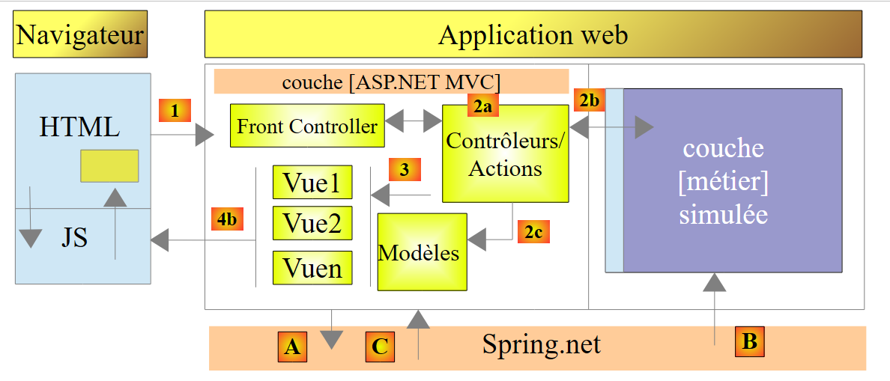 |
لایه [ASP.NET MVC] از طریق رابط [IPamMetier] با لایه کسبوکار شبیهسازیشده تعامل دارد. اگر این لایه کسبوکار شبیهسازیشده را با یک لایه کسبوکار واقعی که با این رابط مطابقت دارد جایگزین کنیم، نیازی به تغییر کد لایه وب نخواهیم داشت. به لطف [Spring.net]، تنها کافی است کلاس پیادهسازی رابط [IPamMetier] را در [web.config] تغییر دهیم. ما در همین راستا پیش میرویم.
معماری جدید به شرح زیر خواهد بود:
 |
ما به ترتیب موارد زیر را شرح خواهیم داد:
- لایه [EF5] که به SGBD متصل است. این لایه با استفاده از Entity Framework 5 (EF5) پیادهسازی خواهد شد؛
- لایه [DAO] که دسترسی به دادهها را از طریق لایه [EF5] مدیریت میکند. این امکان را برای آن فراهم میکند که وجود SGBD را نادیده بگیرد. این لایه صرفاً موجودیتهای اپلیکیشن [Employe, Cotisations, Indemnites] را مدیریت میکند؛
- لایه [métier] که محاسبه حقوق را پیادهسازی میکند.
معماری جدید همان معماری است که در ابتدای این سند در بخش 1.1 ارائه شده است، که اکنون آن را به شرح زیر خلاصه میکنیم:
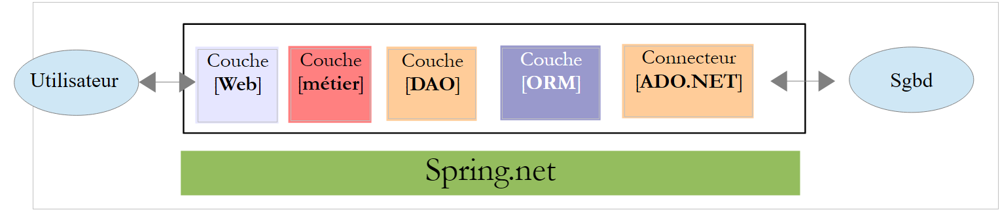 |
- لایه [Web] لایهای است که با کاربر وباپلیکیشن ارتباط برقرار میکند. کاربر از طریق صفحات وب نمایشدادهشده در یک مرورگر با وباپلیکیشن تعامل دارد. در همین لایه است که ASP.NET و MVC قرار دارند، و تنها در همین لایه؛
- لایه [métier] قواعد کسبوکار برنامه، مانند محاسبه حقوق یا فاکتور را پیادهسازی میکند. این لایه دادهها را از کاربر از طریق لایه [Web] و از SGBD از طریق لایه [DAO] استفاده میکند؛
- لایه [DAO] (ابژههای دسترسی به داده)، لایه [ORM] (نقشهبردار شیء-رابطهای) و کانکتور ADO.NET دسترسی به دادهها از لایه SGBD را مدیریت میکنند. لایه [ORM] بهعنوان پلی میان اشیایی که توسط لایه [DAO] مدیریت میشوند و سطر و ستونهای داده در یک پایگاه داده رابطهای عمل میکند. دو ORM به طور معمول در سراسر جهان استفاده میشوند: NET، NHibernate (http://sourceforge.net/projects/nhibernate/) و Entity Framework (http://msdn.microsoft.com/en-us/data/ef.aspx);
- یکپارچهسازی لایهها را میتوان با استفاده از یک مخزن تزریق وابستگی مانند Spring (http://www.springframework.net/) انجام داد؛
لایههای [métier]، [DAO] و [EF5] با استفاده از پروژههای C# پیادهسازی خواهند شد. از این پس، ما با Visual Studio Express 2012 for Desktop کار خواهیم کرد.
9.22. مرحله ۱۵: راهاندازی لایه Entity Framework 5
 |
ایجاد لایه [EF5] بیشتر به پیکربندی مربوط میشود تا کدنویسی. برای درک نحوه نوشتن این لایه، لطفاً به سند [Introduction à Entity Framework 5 Code First]، که در URL [http://tahe.developpez.com/dotnet/ef5cf-02/] موجود است، مراجعه کنید. این یک سند نسبتاً طولانی است. مبانی در چهار فصل اول پوشش داده شدهاند. بخشهای خاصی که باید خوانده شوند، مشخص خواهند شد. هنگامی که به این سند ارجاع میدهیم، از نشانهگذاری [refEF5] استفاده خواهیم کرد.
علاوه بر این، گاهی اوقات نیاز خواهیم داشت به مفاهیم C# ارجاع دهیم. بنابراین، ما به دوره [Introduction au langage C#]، که در URL و [http://tahe.developpez.com/dotnet/csharp/] موجود است، با نشانهگذاری [refC#] ارجاع خواهیم داد.
9.22.1. پایگاه داده
پایگاه دادهٔ برنامه در بخش 9.4 ارائه شد. این یک پایگاه دادهٔ MySQL با نام [dbpam_ef5] (pam=Childminder Payroll) است. این پایگاه داده یک مدیر به نام «root» دارد که رمز عبوری ندارد.
بیایید طرح کلی پایگاه داده را مرور کنیم. این پایگاه داده سه جدول دارد:
یک رابطه کلید خارجی بین ستون EMPLOYES (INDEMNITE_ID) و ستون INDEMNITES (ID) وجود دارد. بخشی از ساختار این پایگاه داده بر اساس استفاده از EF5 تعیین میشود.
اسکریپت SQL برای ایجاد پایگاه داده به شرح زیر است:
--phpMyAdmin SQL Dump
-- نسخهٔ ۳.۵.۱
-- http://www.phpmyadmin.net
--
-- کلاینت: localhost
-- تولید شده در: دوشنبه ۴ نوامبر ۲۰۱۳ ساعت ۰۹:۳۴
-- نسخهٔ سرور: 5.5.24-log
-- PHP نسخه: 5.4.3
SET SQL_MODE="NO_AUTO_VALUE_ON_ZERO";
SET time_zone = "+00:00";
/*!40101 SET @OLD_CHARACTER_SET_CLIENT=@@CHARACTER_SET_CLIENT */;
/*!40101 SET @OLD_CHARACTER_SET_RESULTS=@@CHARACTER_SET_RESULTS */;
/*!40101 SET @OLD_COLLATION_CONNECTION=@@COLLATION_CONNECTION */;
/*!40101 SET NAMES utf8 */;
--
--پایگاه داده: `dbpam_ef5`
--
-- --------------------------------------------------------
--
--ساختار جدول `contributions`
--
CREATE TABLE IF NOT EXISTS `cotisations` (
`ID` bigint(20) NOT NULL AUTO_INCREMENT,
`SECU` double NOT NULL,
`RETRAITE` double NOT NULL,
`CSGD` double NOT NULL,
`CSGRDS` double NOT NULL,
`VERSIONING` int(11) NOT NULL,
PRIMARY KEY (`ID`)
) ENGINE=InnoDB DEFAULT CHARSET=utf8 AUTO_INCREMENT=12 ;
--
-- محتویات جدول `contributions`
--
INSERT INTO `cotisations` (`ID`, `SECU`, `RETRAITE`, `CSGD`, `CSGRDS`, `VERSIONING`) VALUES
(11, 9.39, 7.88, 6.15, 3.49, 1);
--
-- تریگرهای `contributions`
--
DROP TRIGGER IF EXISTS `INCR_VERSIONING_COTISATIONS`;
DELIMITER //
CREATE TRIGGER `INCR_VERSIONING_COTISATIONS` BEFORE UPDATE ON `cotisations`
FOR EACH ROW BEGIN
SET NEW.VERSIONING:=OLD.VERSIONING+1;
END
//
DELIMITER ;
DROP TRIGGER IF EXISTS `START_VERSIONING_COTISATIONS`;
DELIMITER //
CREATE TRIGGER `START_VERSIONING_COTISATIONS` BEFORE INSERT ON `cotisations`
FOR EACH ROW BEGIN
SET NEW.VERSIONING:=1;
END
//
DELIMITER ;
-- --------------------------------------------------------
--
--ساختار جدول `کارمندان`
--
CREATE TABLE IF NOT EXISTS `employes` (
`ID` bigint(20) NOT NULL AUTO_INCREMENT,
`PRENOM` varchar(20) CHARACTER SET latin1 NOT NULL,
`SS` varchar(15) CHARACTER SET latin1 NOT NULL,
`ADRESSE` varchar(50) CHARACTER SET latin1 NOT NULL,
`CP` varchar(5) CHARACTER SET latin1 NOT NULL,
`VILLE` varchar(30) CHARACTER SET latin1 NOT NULL,
`NOM` varchar(30) CHARACTER SET latin1 NOT NULL,
`VERSIONING` int(11) NOT NULL,
`INDEMNITE_ID` bigint(20) NOT NULL,
PRIMARY KEY (`ID`),
UNIQUE KEY `SS` (`SS`),
KEY `FK_EMPLOYES_INDEMNITE_ID` (`INDEMNITE_ID`)
) ENGINE=InnoDB DEFAULT CHARSET=utf8 AUTO_INCREMENT=26 ;
--
-- محتویات جدول `کارمندان`
--
INSERT INTO `employes` (`ID`, `PRENOM`, `SS`, `ADRESSE`, `CP`, `VILLE`, `NOM`, `VERSIONING`, `INDEMNITE_ID`) VALUES
(24, 'Marie', '254104940426058', '5 rue des oiseaux', '49203', 'St Corentin', 'Jouveinal', 1, 93),
(25, 'Justine', '260124402111742', 'La Brûlerie', '49014', 'St Marcel', 'Laverti', 1, 94);
--
-- تریگرهای `employees`
--
DROP TRIGGER IF EXISTS `INCR_VERSIONING_EMPLOYES`;
DELIMITER //
CREATE TRIGGER `INCR_VERSIONING_EMPLOYES` BEFORE UPDATE ON `employes`
FOR EACH ROW BEGIN
SET NEW.VERSIONING:=OLD.VERSIONING+1;
END
//
DELIMITER ;
DROP TRIGGER IF EXISTS `START_VERSIONING_EMPLOYES`;
DELIMITER //
CREATE TRIGGER `START_VERSIONING_EMPLOYES` BEFORE INSERT ON `employes`
FOR EACH ROW BEGIN
SET NEW.VERSIONING:=1;
END
//
DELIMITER ;
-- --------------------------------------------------------
--
--ساختار جدول `indemnities`
--
CREATE TABLE IF NOT EXISTS `indemnites` (
`ID` bigint(20) NOT NULL AUTO_INCREMENT,
`ENTRETIEN_JOUR` double NOT NULL,
`REPAS_JOUR` double NOT NULL,
`INDICE` int(11) NOT NULL,
`INDEMNITES_CP` double NOT NULL,
`BASE_HEURE` double NOT NULL,
`VERSIONING` int(11) NOT NULL,
PRIMARY KEY (`ID`),
UNIQUE KEY `INDICE` (`INDICE`)
) ENGINE=InnoDB DEFAULT CHARSET=utf8 AUTO_INCREMENT=95 ;
--
-- محتویات جدول `indemnites`
--
INSERT INTO `indemnites` (`ID`, `ENTRETIEN_JOUR`, `REPAS_JOUR`, `INDICE`, `INDEMNITES_CP`, `BASE_HEURE`, `VERSIONING`) VALUES
(93, 2.1, 3.1, 2, 15, 2.1, 1),
(94, 2, 3, 1, 12, 1.93, 1);
--
-- تریگرهای `indemnites`
--
DROP TRIGGER IF EXISTS `INCR_VERSIONING_INDEMNITES`;
DELIMITER //
CREATE TRIGGER `INCR_VERSIONING_INDEMNITES` BEFORE UPDATE ON `indemnites`
FOR EACH ROW BEGIN
SET NEW.VERSIONING:=OLD.VERSIONING+1;
END
//
DELIMITER ;
DROP TRIGGER IF EXISTS `START_VERSIONING_INDEMNITES`;
DELIMITER //
CREATE TRIGGER `START_VERSIONING_INDEMNITES` BEFORE INSERT ON `indemnites`
FOR EACH ROW BEGIN
SET NEW.VERSIONING:=1;
END
//
DELIMITER ;
--
--محدودیتها برای جداول صادرشده
--
--
-- محدودیتها برای جدول `employes`
--
ALTER TABLE `employes`
ADD CONSTRAINT `FK_EMPLOYES_INDEMNITE_ID` FOREIGN KEY (`INDEMNITE_ID`) REFERENCES `indemnites` (`ID`);
/*!40101 SET CHARACTER_SET_CLIENT=@OLD_CHARACTER_SET_CLIENT */;
/*!40101 SET CHARACTER_SET_RESULTS=@OLD_CHARACTER_SET_RESULTS */;
/*!40101 SET COLLATION_CONNECTION=@OLD_COLLATION_CONNECTION */;
لطفاً به نکات زیر توجه کنید:
- خطوط ۳۰، ۷۳، ۱۲۲: کلیدهای اصلی جداول در حالت [AUTO_INCREMENT] هستند. این موارد توسط MySQL مدیریت میشوند، نه EF5؛
- خط ۸۳: عدد SS دارای محدودیت یکتایی است؛
- خط ۱۳۰: شناسه کارمند دارای محدودیت یکتایی است؛
- خطوط 168–169: کلید خارجی از جدول [employes] به جدول [indemnites];
- خط ۴۹: یک تریگر، [Trigger]، یک اسکریپت (SQL) است که در SGBD جاسازی شده و در زمانهای مشخصی اجرا میشود؛
- خطوط ۵۱–۵۴: تله [INCR_VERSIONING_COTISATIONS] قبل از هرگونه تغییر در یک سطر در جدول [cotisations] اجرا میشود. سپس ستون [VERSIONING] را یک واحد افزایش میدهد؛
- خطوط 59–62: تله [START_VERSIONING_COTISATIONS] قبل از درج هر ردیف جدید در جدول [cotisations] فعال میشود. سپس ستون [VERSIONING] را روی 1 تنظیم میکند؛
- در نهایت، ستون [VERSIONING] هنگام ایجاد یک سطر در جدول [cotisations] روی 1 تنظیم میشود و سپس هر بار که تغییری در آن سطر ایجاد میشود، 1 واحد افزایش مییابد. این مکانیزم به EF5 امکان میدهد دسترسی همزمان به یک سطر در جدول [cotisations] را به شرح زیر مدیریت کند:
- یک فرآیند P1 در زمان T1 یک سطر L را از جدول [cotisations] میخواند. این سطر دارای ستون [VERSIONING] V1 است؛
- یک فرایند P2 همان سطر L را از جدول [cotisations] در زمان T2 میخواند. این سطر شامل ستونهای [VERSIONING] و V1 است زیرا فرآیند P1 هنوز تغییر خود را commit نکرده است؛
- فرآیند P1 ردیف L را اصلاح میکند و تغییر را ثبت میکند. ستون [VERSIONING] در ردیف L سپس به V1+1 بهروزرسانی میشود که نتیجهٔ تلهٔ [INCR_VERSIONING_COTISATIONS] است؛
- سپس فرآیند P2 نیز همین کار را انجام میدهد. سپس EF5 یک استثنا (exception) ایجاد میکند زیرا فرآیند P2 ردیفی با ستونی به نام [VERSIONING] دارد که مقدار V1 آن با مقدار موجود در پایگاه داده، یعنی QZXW2HTMLP0038، متفاوت است.85ZQX+1. یک سطر تنها در صورتی قابل تغییر است که مقدار [VERSIONING] با مقدار موجود در پایگاه داده مطابقت داشته باشد.
این مکانیزم به کنترل همزمانی خوشبینانه (optimistic concurrency control) معروف است. در EF5، فیلدی که این نقش را ایفا میکند باید دارای نشانهگذاری [ConcurrencyCheck] باشد.
- مکانیزم مشابهی برای جدول [employes] (خطوط ۹۸–۱۱۳) و جدول [indemnites] (خطوط ۱۴۴–۱۵۹) ایجاد شده است.
وظیفه: ایجاد پایگاه داده MySQL [dbpam_ef5] با استفاده از اسکریپت قبلی SQL. پایگاه داده [dbpam_ef5] باید از قبل ایجاد شود، زیرا اسکریپت آن را ایجاد نمیکند. سپس اسکریپت SQL را روی این پایگاه داده اجرا خواهیم کرد.
9.22.2. پروژه ویژوال استودیو
با استفاده از Visual Studio Express 2012 for Desktop، ما راهحل [pam-td] را که هنگام ساخت لایه [web] استفاده میشود، بارگذاری میکنیم:
 |
- در [1] و VS، ویژوال استودیو اکسپرس ۲۰۱۲ برای دسکتاپ قادر به بارگذاری پروژه وب [pam-web-01] نیست. این امر طبیعی است و هیچ مشکلی ایجاد نمیکند؛
- در [2]، یک پروژه جدید به راهحل [pam-td] اضافه میشود؛
 |
- در [3]، پروژه از نوع [console] است و نام آن [4] [pam-ef5] است؛
- همانطور که در [5]، پروژه ایجاد شده است. نام آن پررنگ نیست، بنابراین پروژه راهاندازی راهحل نیست؛
 |
- در [6] و [7]، پروژه جدید را بهعنوان پروژهٔ راهاندازی (استارتآپ) تنظیم کردیم.
9.22.3. افزودن مراجع لازم به پروژه
بیایید پروژه را در زمینه قرار دهیم:
 |
پروژه ما به تعدادی فایل DLL نیاز دارد:
- DLL برای Entity Framework 5؛
- DLL برای کانکتور ADO.NET از SGBD MySQL.
بخش ۴.۲ از [refEF5] توضیح میدهد چگونه این فایلهای DLL را با استفاده از ابزار [NuGet] نصب کنید. در حال حاضر (نوامبر ۲۰۱۳)، نسخهٔ موجود Entity Framework، نسخهٔ ۶ است. (EF6). متأسفانه، به نظر میرسد که کانکتور ADO.NET برای فایلهای SGBD و MySQL (موجود از نوامبر ۲۰۱۳) از طریق [NuGet] با EF6 سازگار نیست. بنابراین ما [lib]، [1] و DLL را قرار دادهایمEF5، به همراه سایر فایلهای DLL مورد نیاز برای پروژه [pam-ef5]
 |
ما فایلهای بیشتری از DLL را در پوشه [lib] قرار دادهایم. بعداً از آنها استفاده خواهیم کرد. در [2]، این فایلهای جدید DLL را به پروژه اضافه میکنیم.
 |
- در [3]، در سیستم فایل به پوشه [lib] بروید؛
- در [4]، سه فایل DLL را انتخاب کرده و سپس دو بار تأیید میکنیم؛
- در [5]، سه فایل DLL به مراجع پروژه اضافه شدهاند.
ما به یک DLL دیگر نیاز داریم. این مورد در میان موارد موجود در چارچوب .NET ماشین یافت میشود.
 |
- در [1]، یک مرجع جدید به پروژه اضافه کنید؛
 |
- در [2]، [Assemblys] را انتخاب کنید؛
- در [3]، [system.component] را تایپ کنید؛
- برای [4]، مجموعه [System.ComponentModel.DataAnnotations] را انتخاب کنید؛
- در [5]، مرجع اضافه شده است.
اکنون آمادهٔ کدنویسی و پیکربندی هستیم.
9.22.4. اشیاء Entity Framework
اشیاء Entity Framework کلاسهایی هستند که سطرهای جداول مختلف پایگاه داده را در بر میگیرند. بیایید این موارد را مرور کنیم:
در لایه [web]، ما از انتیتهای [Employe, Cotisations, Indemnités] استفاده کرده بودیم (به بخش 9.7.3، صفحه 219 مراجعه کنید). این انتیتها نمایانگر دقیق جداول نبودند. در نتیجه، ستونهای [ID, VERSIONING] نادیده گرفته شده بودند. در اینجا این وضعیت صادق نخواهد بود زیرا این موارد توسط اشیاء ORM و EF5 استفاده میشوند. بنابراین ویژگیهای از دست رفته را به آنها اضافه خواهیم کرد. ما این اشیاء را در یک پوشه [Models] درون پروژه ایجاد میکنیم:
 |
کد جدید آنها اکنون به شرح زیر است:
کلاس [Cotisations]
using System;
namespace Pam.EF5.Entites
{
public class Cotisations
{
public int Id { get; set; }
public double CsgRds { get; set; }
public double Csgd { get; set; }
public double Secu { get; set; }
public double Retraite { get; set; }
public int Versioning { get; set; }
// امضا
public override string ToString()
{
return string.Format("Cotisations[{0},{1},{2},{3}, {4}, {5}]", Id, Versioning, CsgRds, Csgd, Secu, Retraite);
}
}
}
- خط ۳: فضای نام (namespace) با پروژه جدید تطبیق داده شده است؛
- ویژگیها برای خطوط ۷ و ۱۲ برای بازتاب ساختار جدول [cotisations] اضافه شدهاند؛
- خط 17: متد [ToString] اکنون دو فیلد جدید را نمایش میدهد.
کلاس [Indemnites]
using System;
namespace Pam.EF5.Entites
{
public class Indemnites
{
public int Id { get; set; }
public int Indice { get; set; }
public double BaseHeure { get; set; }
public double EntretienJour { get; set; }
public double RepasJour { get; set; }
public double IndemnitesCp { get; set; }
public int Versioning { get; set; }
// امضا
public override string ToString()
{
return string.Format("Indemnités[{0},{1},{2},{3},{4}, {5}, {6}]", Id, Versioning, Indice, BaseHeure, EntretienJour, RepasJour, IndemnitesCp);
}
}
}
- خط ۳: فضای نام به پروژه جدید تطبیق داده شده است؛
- ویژگیها برای خطوط ۷ و ۱۳ اضافه شدهاند تا ساختار جدول [indemnites] را منعکس کنند؛
- خط ۱۸: متد [ToString] اکنون دو فیلد جدید را نمایش میدهد.
کلاس [Employe]
using System;
namespace Pam.EF5.Entites
{
public class Employe
{
public int Id { get; set; }
public string SS { get; set; }
public string Nom { get; set; }
public string Prenom { get; set; }
public string Adresse { get; set; }
public string Ville { get; set; }
public string CodePostal { get; set; }
public Indemnites Indemnites { get; set; }
public int Versioning { get; set; }
// امضا
public override string ToString()
{
return string.Format("Employé[{0},{1},{2},{3},{4},{5}, {6}, {7}]", Id, Versioning, SS, Nom, Prenom, Adresse, Ville, CodePostal);
}
}
}
- خط ۳: فضای نام (namespace) با پروژه جدید تطبیق داده شده است؛
- ویژگیهای موجود در خطوط ۸ و ۱۶ برای بازتاب ساختار جدول [employes] اضافه شدهاند؛
- خط ۲۱: متد [ToString] اکنون دو فیلد جدید را نمایش میدهد.
برای قابل استفاده بودن توسط ORM و EF5، ویژگیهای این کلاسها باید حاشیهنویسی شوند.
وظیفه: با استفاده از بخش ۳.۴ از [Création de la base à partir des entités] در [refEF5] بهعنوان راهنما، حاشیهنویسیهای لازم را به موجودیتهای [Employe, Cotisations, Indemnites] برای EF5 اضافه کنید.
نکات:
- شما فقط باید حاشیهنویسیها را ایجاد کنید. بخش [création de base] از پاراگراف مرجع را دنبال نکنید؛
- برای حاشیهنویسی [Table]، مثال MySQL را در بند 4.2 از [refEF5] دنبال کنید؛
- برای حاشیهنویسی [ConcurrencyCheck] بر روی ویژگی [Versioning]، مثال Oracle را در بند 5.2 از [refEF5] دنبال کنید؛
- برای کلید خارجی از جدول [employes] به جدول [indemnités]، مثال 3.4.2 در [refEF5] را دنبال کنید. بدین ترتیب یک ویژگی جدید به انتیت [Employe] اضافه خواهید کرد:
public int IndemniteId { get; set; }
که مقدار آن برابر مقدار ستون [INDEMNITES_ID] در جدول [employes] خواهد بود. شما حاشیهنویسیهای کلید خارجی را به ویژگیهای [IndemniteId] و [Indemnites] از موجودیت [Employe] اضافه خواهید کرد. برای این کار، مثال 3.4.2 را برای [refEF5] دنبال کنید؛
- شما روابط کلید خارجی معکوس را مدیریت نخواهید کرد؛
- این کار نیازمند مطالعهٔ [refEF5] است.
9.22.5. پیکربندی ORM و EF5
بیایید پروژه را در زمینه قرار دهیم:
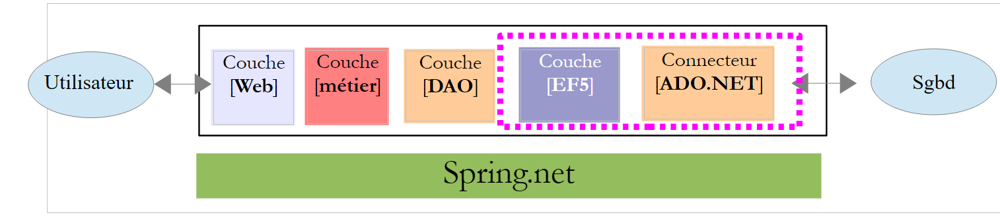 |
لایه [EF5] از طریق کانکتور [ADO.NET] از SGBD به MySQL به پایگاه داده دسترسی خواهد داشت. برای دسترسی به این پایگاه داده به مقدار مشخصی اطلاعات نیاز است. این اطلاعات در بخشهای مختلف پروژه قرار دارند.
ابتدا باید زمینهٔ پایگاه داده را ایجاد کنیم. این زمینه کلاسی مشتقشده از کلاس سیستمی [System.Data.Entity.DbContext] است. از آن برای تعریف نماهای شیء جدولهای پایگاه داده استفاده میشود. ما این کلاس را در پوشه [Models] پروژه، در کنار انتیتهای EF5 قرار خواهیم داد:
 |
کلاس [DbPamContext] به صورت زیر خواهد بود:
using Pam.EF5.Entites;
using System.Data.Entity;
namespace Pam.Models
{
public class DbPamContext : DbContext
{
public DbSet<Employe> Employes { get; set; }
public DbSet<Cotisations> Cotisations { get; set; }
public DbSet<Indemnites> Indemnites { get; set; }
}
}
- خط ۶: کلاس [DbPamContext] از کلاس سیستمی [DbContext] ارث میبرد؛
- خطوط ۸–۱۰: مدلهای شیء برای سه جدول در پایگاه داده. نوع آنها [DbSet<Entity>] است، که در آن [Entity] یکی از اجزای Entity Framework است که ما همین حالا تعریف کردهایم. نوع [DbSet] را میتوان بهعنوان مجموعهای از انتیتها در نظر گرفت. میتوان آن را با استفاده از LINQ (زبان پرسوجوی INtegrated) پرسوجو کرد. از خوانندگانی که با LINQ آشنایی ندارند دعوت میشود بخش 3.5.4 [Apprentissage de LINQ avec LINQPad] از [refEF5] را مطالعه کنند.
از این پس، کلاس [DbPamContext] را به عنوان زمینه پایداری پایگاه داده [dbpam_ef5] نام میبریم. این اصطلاحی استاندارد در ORM (نقشهبردارهای شیء-رابطهای) است. این زمینه پایداری، نمایشی شیءگرا از پایگاه داده است. ما همچنین به همگامسازی زمینه پایداری با پایگاه داده اشاره میکنیم: هرگونه اصلاح، افزودن یا حذف انجامشده در زمینه پایداری در پایگاه داده منعکس میشود. این همگامسازی در زمانهای مشخصی انجام میشود: زمانی که زمینه پایداری بسته میشود، در پایان یک تراکنش، یا قبل از اجرای یک پرسوجوی SQL SELECT روی پایگاه داده.
اطلاعات مربوط به SGBD و پایگاه داده در [App.config] ذخیره میشود.
 |
پیکربندی مورد نیاز در [app.config] در بخشهای زیر از [refEF5] توضیح داده شده است:
- ۳.۴ برای سرور SGBD SQL. در اینجا اصول اصلی پیکربندی EF5 تشریح شده است؛
- 4.2 برای SGBD و MySQL.
ما دستورالعملهای این پاراگراف آخر را دنبال میکنیم و فایل [app.config] را به شرح زیر پیکربندی میکنیم:
<?xml version="1.0" encoding="utf-8" ?>
<configuration>
<startup>
<supportedRuntime version="v4.0" sku=".NETFramework,Version=v4.5" />
</startup>
<!-- پیکربندی EF5 -->
<!-- رشته اتصال پایگاه داده [dbam_ef5] -->
<connectionStrings>
<add name="DbPamContext"
connectionString="Server=localhost;Database=dbpam_ef5;Uid=root;Pwd=;"
providerName="MySql.Data.MySqlClient" />
</connectionStrings>
<!--ارائهدهنده کارخانهای برای MySQL -->
<system.data>
<DbProviderFactories>
<remove invariant="MySql.Data.MySqlClient"/>
<add name="MySQL Data Provider" invariant="MySql.Data.MySqlClient" description=".Net Framework Data Provider for MySQL"
type="MySql.Data.MySqlClient.MySqlClientFactory, MySql.Data, Version=6.5.4.0, Culture=neutral, PublicKeyToken=C5687FC88969C44D"
/>
</DbProviderFactories>
</system.data>
</configuration>
- خطوط ۶ تا ۲۱ اضافه شدهاند. این خطوط باید در داخل تگ <configuration> در خطوط ۲ و ۲۲ قرار گیرند؛
- خطوط ۸–۱۲: رشتههای اتصال پایگاه داده را تعریف میکنند، مفهومی که در ADO.NET پوشش داده شده است (به بخش ۷.۳.۵ در [refC#] مراجعه کنید)؛
- خطوط ۹–۱۱: رشته اتصال برای پایگاههای داده MySQL و [dbpam_ef5] را تعریف میکنند؛
- خط ۹: نام رشته اتصال. شما نمیتوانید هر چیزی را اینجا وارد کنید. بهطور پیشفرض، باید نام کلاسی را وارد کنید که زمینه پایگاه داده را پیادهسازی میکند:
public class DbPamContext : DbContext
{
public DbSet<Employe> Employes { get; set; }
public DbSet<Cotisations> Cotisations { get; set; }
public DbSet<Indemnites> Indemnites { get; set; }
}
این کلاس [DbPamContext] نامیده میشود. بنابراین، در خط ۹ از [app.config]، باید [name="DbPamContext"] را وارد کنید؛
- خط ۱۰: یک رشته اتصال مخصوص SGBD MySQL:
- [Server=localhost]: آدرس ماشینی که میزبان SGBD است. در این مورد، این ماشین محلی [localhost] است؛
- [Database=dbpam_ef5;]: نام پایگاه داده،
- [Uid=root;]: نام کاربری مورد استفاده برای ورود به پایگاه داده،
- [Pwd=;]: رمز عبور برای این ورود. در این مورد، رمز عبوری وجود ندارد؛
- خط ۱۰: [providerName="MySql.Data.MySqlClient"] نام کانکتور ADO.NET است که باید استفاده شود. این نام با ویژگی [invariant] در خط 17 مطابقت دارد. شما میتوانید هر مقداری را وارد کنید، به شرطی که با قانون قبلی مطابقت داشته باشید و ارائهدهندهای با همین ثابت (invariant) قبلاً ثبت نشده باشد؛
- خطوط ۱۵–۲۰: یک فابریک برای کانکتورهای ADO.NET (پرووایدرها) تعریف کنید. [DbProviderFactory] برای من مفهومی تا حدی مبهم است. با قضاوت از روی نامش، به نظر میرسد کلاسی باشد که قادر به تولید کانکتور ADO.NET است، که دسترسی به SGBD—در این مورد، MySQL5—را فراهم میکند. این خطوط معمولاً کپی و پیست میشوند. آنها ضروری هستند. در خصوص ویژگی [Version=6.5.4.0] در خط ۱۶ مراقب باشید. این شماره نسخه باید با شماره نسخه DLL [MySql.Data] که به مراجع پروژه اضافه کردهاید مطابقت داشته باشد:
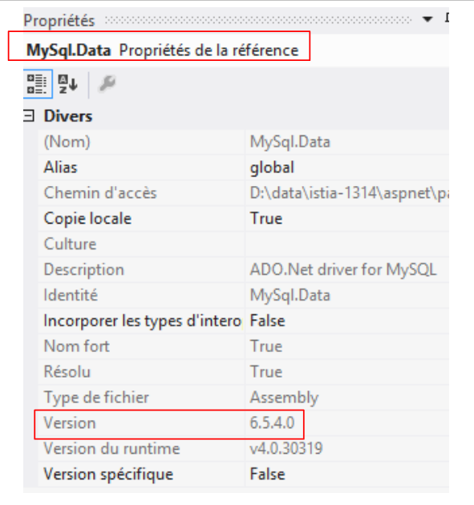 |
- خط ۱۶ مهم است. از آنجا که نمیتوانید دو ارائهدهنده با نام یکسان نصب کنید، ابتدا باید هر ارائهدهندهای را که با نام ارائهدهندهای که در خط ۱۷ نصب میکنید یکسان است، حذف کنید؛
همین. دفعه اول که این کار را انجام میدهید پیچیده و گیجکننده است، اما با گذشت زمان ساده میشود چون همیشه همان فرآیندی است که تکرار میکنید.
9.22.6. آزمایش لایه [EF5]
ما آمادهایم تا لایه [EF5] خود را آزمایش کنیم. این کار را با استفاده از برنامه [Program.cs] که از قبل نصب شده است انجام میدهیم:
 |
ما قصد داریم محتویات پایگاه داده را نمایش دهیم. اگر موفق شویم، این نشانهای اولیه خواهد بود که پیکربندی ما صحیح است. مثالی از کد در بخش 3.5.3 از [refEF5] موجود است. کد برای [Program.cs] به شرح زیر خواهد بود:
using Pam.EF5.Entites;
using Pam.Models;
using System;
namespace Pam
{
class Program
{
static void Main(string[] args)
{
try
{
using (var context = new DbPamContext())
{
//محتویات جداول را نمایش میدهد
Console.WriteLine("Liste des employés ----------------------------------------");
foreach (Employe employe in context.Employes)
{
Console.WriteLine(employe);
}
Console.WriteLine("Liste des indemnités --------------------------------------");
foreach (Indemnites indemnite in context.Indemnites)
{
Console.WriteLine(indemnite);
}
Console.WriteLine("Liste des cotisations -------------------------------------");
foreach (Cotisations cotisations in context.Cotisations)
{
Console.WriteLine(cotisations);
}
}
}
catch (Exception e)
{
Console.WriteLine(e);
return;
}
}
}
}
- خط ۱۳: هر عملیاتی بر روی BD از طریق زمینه این پایگاه داده انجام میشود. ما این زمینه را با استفاده از کلاس [DbPamContext] پیادهسازی کردهایم. ما همچنین به آن به عنوان زمینه پایداری پایگاه داده اشاره کردهایم؛
- خطوط ۱۳ و ۳۱: عملیات روی زمینه پایداری در داخل یک بند [using] انجام میشود. شرایط پایداری در ابتدای عبارت [using] باز شده و با خروج از آن عبارت، به طور خودکار بسته میشود. این بدان معناست که هرگونه تغییری که در شرایط پایداری در داخل عبارت [using] اعمال شود، هنگام خروج از عبارت در پایگاه داده منعکس خواهد شد. سپس مجموعهای از دستورات SQL در یک تراکنش به دستور BD ارسال میشود. این بدان معناست که اگر یک دستور SQL با شکست مواجه شود، تمام دستورات SQL که قبلاً صادر شدهاند لغو میشوند. سپس یک استثنا توسط EF5 پرتاب میشود؛
- خط 17: عبارت [context.Employes] به شیء image جدول [employes] اشاره دارد. باید توجه داشت که [Employes] یک ویژگی از زمینه پایداری [DbPamContext] است:
public class DbPamContext : DbContext
{
public DbSet<Employe> Employes { get; set; }
public DbSet<Cotisations> Cotisations { get; set; }
public DbSet<Indemnites> Indemnites { get; set; }
}
- خط ۱۷: این واقعیت که [foreach] در مجموعه [context.Employes] تکرار میشود، تمام کارمندان را از پایگاه داده به داخل زمینه پایداری بازیابی خواهد کرد. بنابراین، یک دستور SQL SELECT توسط EF5 صادر خواهد شد؛
- خطوط 17–20: مجموعه کارمندان به صورت بازگشتی بررسی میشود و در خط 19، متد [ToString] از کلاس [Employe] برای نمایش کارمندان روی کنسول استفاده میشود؛
- خطوط ۲۱–۲۵: همین امر در مورد مجموعه مزایای جانبی نیز صدق میکند؛
- خطوط ۲۷–۳۰: همین امر در مورد مجموعه مشارکتها نیز صدق میکند.
بیایید به تعریف موجودیت [Employe] بازگردیم:
using System;
namespace Pam.EF5.Entites
{
public class Employe
{
public int Id { get; set; }
public string SS { get; set; }
public string Nom { get; set; }
public string Prenom { get; set; }
public string Adresse { get; set; }
public string Ville { get; set; }
public string CodePostal { get; set; }
public Indemnites Indemnites { get; set; }
public int Versioning { get; set; }
// امضا
public override string ToString()
{
return string.Format("Employé[{0},{1},{2},{3},{4},{5}, {6}, {7}]", Id, Versioning, SS, Nom, Prenom, Adresse, Ville, CodePostal);
}
}
}
- خط ۱۵: یک کارمند ارجاعی به یک فوقالعاده دارد.
وقتی یک کارمند دوباره وارد زمینه پایداری میشود، آیا فوقالعادهاش نیز همراه او بازگردانده میشود؟ پاسخ بهطور پیشفرض خیر است. این همان مفهومی است که پشت [Lazy Loading] قرار دارد. اشیایی که در داخل یک شیء دیگر ارجاع داده شدهاند، به همراه آن شیء دیگر وارد زمینه پایداری نمیشوند. آنها فقط زمانی وارد میشوند که توسط کد داخل یک زمینه پایداری باز درخواست شوند. اگر زمینه پایداری بسته شود، یک استثنا پرتاب میشود.
بنابراین، اگر متد [ToString] به خاصیت [Indemnites] به شکل زیر ارجاع داده بود:
// امضا
public override string ToString()
{
return string.Format("Employé[{0},{1},{2},{3},{4},{5},{6},{7},{8}]", Id, Versioning, SS, Nom, Prenom, Adresse, Ville, CodePostal, Indemnites);
}
عملیات زیر در [Program.cs]:
foreach (Employe employe in context.Employes)
{
Console.WriteLine(employe);
}
نه تنها کارمندان بلکه فوقالعادههای آنها را نیز در زمینه پایداری بازیابی میکرد، زیرا در خط ۳، متد [Employe.ToString] فراخوانی میشود و به انتیت [Indemnites] ارجاع میدهد.
اجرای [Program.cs] نتایج زیر را تولید میکند:
اگر کار نکرد چه باید بکنید؟ در مشکل هستید… منابع خطای احتمالی زیادی وجود دارد:
9.22.7. DLL از لایه [EF5]
ما پروژه خود را به یک کتابخانه کلاس تبدیل میکنیم تا هنگام تولید، به جای یک فایل اجرایی (.exe)، یک اسمبلی (.dll) تولید شود. این کار در ویژگیهای پروژه انجام میشود، همانطور که در بخش 9.7.6 برای لایه کسبوکار شبیهسازیشده مشاهده میشود.
مأموریت: نوع پروژه [pam-ef5] را به یک کتابخانه کلاس تغییر دهید، سپس پروژه را مجدداً تولید کنید.
9.23. مرحله ۱۶: راهاندازی لایه [DAO]
9.23.1. رابط لایه [DAO]
 |
همانطور که برای لایه شبیهسازیشده [métier] انجام دادیم، لایه [DAO] از طریق یک رابط در دسترس خواهد بود. این رابط چه خواهد بود؟
بیایید نگاهی بیندازیم به رابط [IPamMetier] برای لایه شبیهسازیشده [métier] که ساختهایم:
public interface IPamMetier {
// فهرست تمام شناسه کارمندان
Employe[] GetAllIdentitesEmployes();
// ------- محاسبه حقوق
FeuilleSalaire GetSalaire(string ss, double heuresTravaillées, int joursTravaillés);
}
خط ۳: متد [GetAllIdentitesEmployes] برای پر کردن لیست کشویی در صفحه اصلی استفاده میشود:
 |
این کارمندان باید از پایگاه داده بازیابی شوند.
خط ۶: متد [GetSalaire] برای محاسبه فیش حقوقی کارمندی با شماره SS استفاده میشود. تعریف نوع [FeuilleSalaire] را به یاد بیاورید:
public class FeuilleSalaire
{
// ویژگیهای خودکار
public Employe Employe { get; set; }
public Cotisations Cotisations { get; set; }
public ElementsSalaire ElementsSalaire { get; set; }
}
اطلاعات در خطوط ۵ و ۶ از پایگاه داده بازیابی خواهد شد. به یاد داشته باشید که یک کارمند دارای خصوصیت [Indemnites] است. این اطلاعات نیز باید بازیابی شود.
بنابراین میتوانیم با رابط زیر برای لایه [DAO] شروع کنیم:
public interface IPamDao {
// فهرست تمام شناسه کارمندان
Employe[] GetAllIdentitesEmployes();
// یک کارمند مشخص و مزایای او
Employe GetEmploye(string ss);
// فهرست تمام مشارکتها
Cotisations GetCotisations();
}
9.23.2. پروژه Visual Studio
وظیفه: یک پروژه جدید از نوع [console] با نام [pam-dao] به راهحل [pam-td] اضافه کنید. آن را بهعنوان پروژهٔ راهاندازی راهحل تنظیم کنید.
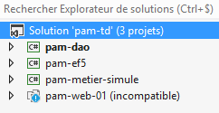 |
9.23.3. افزودن مراجع لازم به پروژه
بیایید پروژه را در زمینه قرار دهیم:
 |
پروژه [pam-dao] به تعداد مشخصی از DLL نیاز دارد:
- تمام آنهایی که توسط پروژه [pam-ef5] ارجاع شدهاند؛
- همان مورد از خود پروژه [pam-ef5].
علاوه بر این، از [Spring.net] برای نمونهسازی لایه [DAO] استفاده خواهیم کرد. برای انجام این کار، به DLL، [Spring.core] و [Common.Logging] نیاز داریم. این فایلهای DLL در پوشه [lib] منابع مطالعه موردی قرار دارند.
وظیفه: این مراجع مختلف را به پروژه [pam-dao] اضافه کنید.
 |
9.23.4. پیادهسازی لایه [DAO]
 |
در بالا، کلاس [PamException] همان کلاسی است که در بخش 9.7.4 تعریف شده است. ما صرفاً فضای نام آن را تغییر میدهیم (خط 1 زیر):
namespace Pam.Dao.Entites
{
// کلاس استثنا
public class PamException : Exception
{
....
}
}
رابط [IPamDao] همان رابطی است که ما به تازگی در بخش 9.23.1 تعریف کردهایم:
using Pam.EF5.Entites;
namespace Pam.Dao.Service
{
public interface IPamDao
{
//فهرست تمام سوابق کارکنان
Employe[] GetAllIdentitesEmployes();
//یک کارمند مشخص به همراه مزایای او
Employe GetEmploye(string ss);
// فهرست تمام مشارکتها
Cotisations GetCotisations();
}
}
کلاس [PamDaoEF5] این رابط را با استفاده از ORM و EF5 پیادهسازی میکند. کد آن به شرح زیر است:
using Pam.Dao.Entites;
using Pam.EF5.Entites;
using Pam.Models;
using System;
using System.Linq;
namespace Pam.Dao.Service
{
public class PamDaoEF5 : IPamDao
{
// میدانهای خصوصی
private Cotisations cotisations;
private Employe[] employes;
// تولیدکننده
public PamDaoEF5()
{
// سهم
try
{
....
}
catch (Exception e)
{
throw new PamException("Erreur système lors de la construction de la couche [DAO]", e, 1);
}
}
// GetCotisations
public Cotisations GetCotisations()
{
return cotisations;
}
// GetAllIdentitesEmploye
public Employe[] GetAllIdentitesEmployes()
{
return employes;
}
// GetEmploye
public Employe GetEmploye(string SS)
{
try
{
....
catch (Exception e)
{
throw new PamException(string.Format("Erreur système lors de la recherche de l'employé [{0}]", SS), e, 2);
}
}
}
}
توجه:
- خط ۱۰: کلاس [PamDaoEF5] رابط [IPamDao] را پیادهسازی میکند؛
- جدولهای [cotisations] و [employes] در ویژگیهای خطوط ۱۳–۱۴ کش شدهاند. کارمندان بدون مزایای خود نمایش داده میشوند؛
- خطوط 17–28: سازنده، خطوط 13–14 را مقداردهی اولیه میکند؛
- خطوط ۴۳–۵۲: متد [GetEmploye] یک کارمند را به همراه مزایای او برمیگرداند. این متد شماره بیمه ملی کارمند را به عنوان پارامتر میپذیرد. اگر کارمند در پایگاه داده وجود نداشته باشد، متد یک نشانگر null برمیگرداند.
وظیفه: کد کلاس [PamDaoEF5] را تکمیل کنید.
برای سازنده، از کد تست لایه [EF5] که در بخش 9.22.6 ارائه شده است، بهعنوان راهنما استفاده کنید. برای متد [GetEmploye]، از مثال بخش 3.5.7 ([Eager and Lazy loading]) از [refEF5] به عنوان راهنما استفاده کنید.
9.23.5. پیکربندی لایه [DAO]
همانطور که در بخش 9.22.5 انجام شد، باید EF5 را در فایل [App.config] پروژه پیکربندی کنیم:
 |
وظیفه ۱: پیکربندی EF5 درون [App.config]. به سادگی آنچه در فایل [App.config] برای لایه [EF5] انجام شد را تکرار کنید.
برنامه آزمون ما از [Spring.net] برای بهدستآوردن مرجعی به لایه [DAO] استفاده خواهد کرد.
وظیفه ۲: با استفاده از کاری که در بخش ۹.۲۰.۲ انجام شده است، فایل پیکربندی [app.config] را در پروژه [pam-dao] طوری تغییر دهید که یک شی Spring به نام [pamdao] را که با کلاس [PamDaoEF5] که همین حالا ایجاد کردهایم مرتبط است، تعریف کند. فایلهای [app.config] و [web.config] ساختار یکسانی دارند. اطمینان حاصل کنید که تگ <configSections> اولین تگی است که پس از تگ ریشه <configuration> قرار دارد.
9.23.6. آزمایش لایه [DAO]
اکنون آماده آزمایش لایه [DAO] خود هستیم. این کار را با استفاده از برنامه [Program.cs] که از قبل موجود است، انجام میدهیم:
 |
ما ویژگیهای مختلف رابط کاربری لایه [DAO] را آزمایش خواهیم کرد. کد برای [Program.cs] به شرح زیر خواهد بود:
using Pam.Dao.Service;
using Pam.EF5.Entites;
using Spring.Context.Support;
using System;
namespace Pam.Dao.Tests
{
public class Program
{
public static void Main()
{
try
{
//نمونه لایه [dao]
IPamDao pamDao = (IPamDao)ContextRegistry.GetContext().GetObject("pamdao");
// فهرست هویت کارکنان
foreach (Employe Employe in pamDao.GetAllIdentitesEmployes())
{
Console.WriteLine(Employe.ToString());
}
// یک کارمند به همراه مزایای خود
Console.WriteLine("------------------------------------");
Employe e = pamDao.GetEmploye("254104940426058");
Console.WriteLine("employé= {0}, indemnités={1}", e, e.Indemnites);
Console.WriteLine("------------------------------------");
// کارمندی که وجود ندارد
Employe employe = pamDao.GetEmploye("xx");
Console.WriteLine("Employé n° xx");
Console.WriteLine((employe == null ? "null" : employe.ToString()));
Console.WriteLine("------------------------------------");
// فهرست مشارکتها
Cotisations cotisations = pamDao.GetCotisations();
Console.WriteLine(cotisations.ToString());
}
catch (Exception ex)
{
//نمایش استثنا
Console.WriteLine(ex.ToString());
}
//مکث
Console.ReadLine();
}
}
}
- خط ۱۵: ما از طریق [Spring.net] به لایه [DAO] ارجاع میگیریم.
نتایج اجرای این برنامه به شرح زیر است:
9.23.7. DLL از لایه [DAO]
وظیفه: نوع پروژه [pam-dao] را به یک کتابخانه کلاس تغییر دهید، سپس پروژه را مجدداً تولید کنید (مراحل توصیفشده در بخش 9.22.7 را تکرار کنید).
9.24. مرحله ۱۷: راهاندازی لایه [métier]
9.24.1. رابط لایه [métier]
 |
رابط لایه [métier]، رابط [IPamMetier] لایه شبیهسازیشده [métier] خواهد بود که در بخش 9.7.2 ساختیم.
public interface IPamMetier {
// فهرست تمام شناسه کارمندان
Employe[] GetAllIdentitesEmployes();
// ------- محاسبه حقوق
FeuilleSalaire GetSalaire(string ss, double heuresTravaillées, int joursTravaillés);
}
9.24.2. پروژه ویژوال استودیو
مأموریت: یک پروژه جدید از نوع [console] به نام [pam-metier] به راهحل [pam-td] اضافه کنید. آن را بهعنوان پروژهٔ راهانداز راهحل تنظیم کنید.
 |
9.24.3. افزودن مراجع لازم به پروژه
بیایید پروژه را در زمینه قرار دهیم:
 |
پروژه [pam-metier] به تعداد مشخصی از DLL نیاز دارد:
- تمام آنهایی که توسط پروژههای [pam-dao] و [pam-ef5] ارجاع شدهاند؛
- آنهایی که از خود پروژههای [pam-dao] و [pam-ef5] هستند.
وظیفه: این ارجاعات مختلف را به پروژه [pam-metier] اضافه کنید.
 |
9.24.4. پیادهسازی لایه [métier]
 |
موارد فوق شامل چهار عنصر است که قبلاً در لایه شبیهسازیشده [métier] استفاده شدهاند (رجوع کنید به بخش 9.7). ممکن است در فضاهای نام واردشده توسط این کلاسهای مختلف تغییراتی ایجاد شود. آنها را مطابق با آن مدیریت کنید. کلاس [PamMetier] رابط [IPamMetier] را به شرح زیر پیادهسازی میکند:
using Pam.Dao.Service;
using Pam.EF5.Entites;
using Pam.Metier.Entites;
using System;
namespace Pam.Metier.Service
{
public class PamMetier : IPamMetier
{
// ارجاع به لایه [DAO] که توسط Spring инициалиزه شده است
public IPamDao PamDao { get; set; }
// فهرست تمام شناسه کارمندان
public Employe[] GetAllIdentitesEmployes()
{
...
}
// یک کارمند مشخص به همراه مزایای او
public Employe GetEmploye(string ss)
{
...
}
// سهمها
public Cotisations GetCotisations()
{
...
}
// محاسبه حقوق
public FeuilleSalaire GetSalaire(string ss, double heuresTravaillées, int joursTravaillés)
{
// SS: شماره SS کارمند
//HeuresTravaillées: تعداد ساعات کاری
// روزهای کاری: تعداد روزهای کاری
...
}
}
- خط ۱۳: اشارهای به لایه [DAO] وجود دارد. این لایه توسط Spring هنگام نمونهسازی کلاس [PamMetier] مقداردهی اولیه میشود. بنابراین، تا زمانی که متدهای مختلف اجرا شوند، خط ۱۳ قبلاً مقداردهی اولیه شده است.
وظیفه: کد کلاس [PamMetier] را تکمیل کنید. اگر در [GetSalaire] مشخص شود که کارمندی با شماره تأمین اجتماعی n وجود ندارد، یک [PamException] راهاندازی خواهد شد. روش محاسبه حقوق در بخش 9.5 توضیح داده شده است. باید دقت شود که تمام محاسبات میانی تا دو رقم اعشار گرد شود.
9.24.5. پیکربندی لایه [métier]
همانطور که در بخش 9.22.5 انجام شد، باید EF5 را در فایل [app.config] پروژه پیکربندی کنیم:
 |
وظیفه ۱: پیکربندی EF5 در داخل [app.config]. به سادگی آنچه در فایل [app.config] برای لایه [EF5] انجام شد را تکرار کنید.
برنامهٔ تست ما از [Spring.net] برای بهدستآوردن مرجعی به لایهٔ [métier] استفاده خواهد کرد.
وظیفه ۲: با استفاده از آنچه قبلاً در بخش ۹.۲۳.۵ انجام دادید، فایل پیکربندی [app.config] را در پروژه [pam-metier] طوری تغییر دهید که یک شی Spring به نام [pammetier] را که با کلاس [PamMetier] که همین حالا ایجاد کردهایم مرتبط است، تعریف کند. سادهترین راه این است که فایل [app.config] را از پروژه [pam-dao] کپی کرده و موارد لازم را به آن اضافه کنید.
یک مشکل وجود دارد. نه تنها لایه [métier] باید با استفاده از کلاس [PamMetier] نمونه سازی شود، بلکه خاصیت [PamDao] آن نیز باید مقداردهی اولیه شود:
// ارجاع به لایه [DAO] که توسط Spring инициалиزه شده است
public IPamDao PamDao { get; set; }
بنابراین، پیکربندی Spring در [app.config] به شرح زیر است:
<spring>
<context>
<resource uri="config://spring/objects" />
</context>
<objects xmlns="http://www.springframework.net">
<object id="pamdao" type=" Pam.Dao.Service.PamDaoEF5, pam-dao"/>
<object id="pammetier" type="Pam.Metier.Service.PamMetier, pam-metier">
<property name="PamDao" ref="pamdao" />
</object>
</objects>
</spring>
- خط ۶: شیء [pamdao] را که با کلاس [PamDaoEF5] مرتبط است، تعریف میکند؛
- خط ۷: شیء [pammetier] را که با کلاس [PamMetier] مرتبط است، تعریف میکند؛
- خط ۸: تگ [property] برای مقداردهی اولیه یک ویژگی عمومی از کلاس [PamMetier] استفاده میشود. ویژگی [name="PamDao"] با نام ویژگیای که باید در کلاس [PamMetier] مقداردهی اولیه شود، مطابقت دارد. ویژگی [ref="pamdao"] نشان میدهد که این ویژگی با یک مرجع مقداردهی اولیه میشود، یعنی مرجع شی [pamdao] از خط ۶، و در نتیجه با مرجع لایه [DAO]. این همان چیزی است که میخواستیم.
9.24.6. آزمایش لایه [métier]
اکنون آماده آزمایش لایه خود [métier] هستیم. این کار را با استفاده از برنامه موجود [Program.cs] انجام میدهیم:
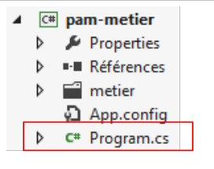 |
ما قصد داریم ویژگیهای مختلف رابط کاربری لایه [métier] را آزمایش کنیم. کد برای [Program.cs] به شرح زیر خواهد بود:
using System;
using Pam.Dao.Entites;
using Pam.Metier.Service;
using Spring.Context.Support;
using Pam.EF5.Entites;
namespace Pam.Metier.Tests
{
public class Program
{
public static void Main()
{
try
{
//نمونهسازی لایه [métier]
IPamMetier pamMetier = ContextRegistry.GetContext().GetObject("pammetier") as IPamMetier;
// فهرست شناسه کارمندان
Console.WriteLine("Employés -----------------------------");
foreach (Employe Employe in pamMetier.GetAllIdentitesEmployes())
{
Console.WriteLine(Employe);
}
// محاسبات حقوق و دستمزد
Console.WriteLine("salaires -----------------------------");
Console.WriteLine(pamMetier.GetSalaire("260124402111742", 30, 5));
Console.WriteLine(pamMetier.GetSalaire("254104940426058", 150, 20));
try
{
Console.WriteLine(pamMetier.GetSalaire("xx", 150, 20));
}
catch (PamException ex)
{
Console.WriteLine(string.Format("PamException : {0}", ex.Message));
}
}
catch (Exception ex)
{
Console.WriteLine(string.Format("Exception : {0}, Exception interne : {1}", ex.Message, ex.InnerException == null ? "" : ex.InnerException.Message));
}
// استراحت
Console.ReadLine();
}
}
}
- خط ۱۶: ما از طریق [Spring.net] به لایه [métier] ارجاع میگیریم.
نتایج اجرای این برنامه به شرح زیر است:
9.24.7. DLL از لایه [métier]
وظیفه: نوع پروژه [pam-metier] را به یک کتابخانه کلاس تغییر دهید، سپس پروژه را مجدداً تولید کنید (مراحل توصیفشده در بخش 9.22.7 را تکرار کنید).
9.25. مرحله ۱۸: راهاندازی لایه [web]
اکنون به لایه نهایی معماری خود، لایه [web]، رسیدهایم:
 |
ما لایه [web] را که با کمک یک لایه شبیهسازیشده [métier] توسعه دادهایم، مجدداً استفاده خواهیم کرد.
9.25.1. پروژه ویژوال استودیو
ما به ویژوال استودیو اکسپرس ۲۰۱۲ برای وب بازمیگردیم تا لایه وب خود را به لایههای [métier, DAO, EF5] که به تازگی توسعه دادهایم متصل کنیم. این کار عمدتاً شامل پیکربندی و چند تغییر در فضای نام (namespace) است.
در Visual Studio Express 2012 for the Web، راهحل [pam-td] را باز کنید:
 |
- به داخل [1]، و راهحل [pam-td] را به داخل VS Web Studio. پروژه وب [pam-web-01] دوباره قابل مشاهده میشود. ما آن را در استودیو VS برای دسکتاپ گم کرده بودیم.
- پیکربندی پروژه وب [pam-web-01] نیاز به تغییر دارد. به جای تغییر پروژهای که در حال حاضر کار میکند، تغییرات را روی یک نسخه از آن پروژه اعمال خواهیم کرد. ابتدا، در [2]، پروژه را از راهحل (solution) حذف میکنیم (این کار هیچ چیزی را از سیستم فایل حذف نمیکند).
 |
- در [3]، با استفاده از ویندوز اکسپلورر، پوشه [pam-web-01] را در [pam-web-02] کپی کنید؛
- در [4]، پروژه [pam-web-02] را در راهحل [pam-td] بارگذاری کنید. این پروژه با نام [pam-web-01] ظاهر خواهد شد؛
- در [5]، این نام را به [pam-web-02] تغییر دهید و این پروژه را بهعنوان پروژهٔ راهاندازی تنظیم کنید؛
 |
- نام را به [6] تغییر دهید، سپس پروژه قدیمی [pam-web-01] را بارگذاری کنید. اکنون تمام پروژههای خود را دارید. مطمئن شوید که با [pam-web-02] کار میکنید.
9.25.2. افزودن مراجع لازم به پروژه
بیایید پروژه را به طور کلی بررسی کنیم:
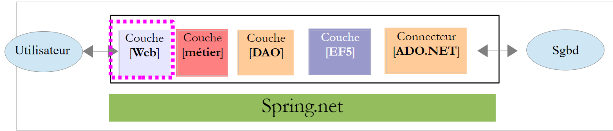 |
پروژه [pam-web-02] به تعدادی فایل DLL نیاز دارد:
- تمام آنهایی که توسط پروژههای [pam-metier]، [pam-dao] و [pam-ef5] ارجاع شدهاند؛
- آنهایی که از خود پروژههای [pam-metier]، [pam-dao] و [pam-ef5] هستند.
وظیفه: افزودن این مراجع مختلف به پروژه [pam-web-02]. ارجاع به پروژه [pam-metier-simule] باید حذف شود. ما در حال تغییر به لایه [métier] هستیم. برخی ارجاعات DLL از قبل موجود هستند. آنها را حذف کرده و سپس افزودنیهای خود را اضافه کنید.
 |
9.25.3. پیادهسازی لایه [web]
پروژه [pam-web-02] را تولید کنید. خطاهایی مانند موارد زیر ظاهر خواهند شد:
 |
کلاس [ApplicationModel] از نوع [Employe] استفاده میکند. با شبیهسازی لایه [métier]، این نوع در فضای نام [Pam.Metier.Entites] تعریف شده بود. اکنون در فضای نام [Pam.EF5.Entites] قرار دارد. این خطاها را همانطور که در بالا نشان داده شده است اصلاح کنید.
9.25.4. پیکربندی لایه [web]
همانطور که در بخش 9.24.5 انجام شد، باید EF5 را در فایل [web.config] پروژه پیکربندی کنیم:
 |
وظیفه ۱: کل محتوای فعلی [web.config] را با محتوای فایل [app.config] از پروژه [pam-metier] جایگزین کنید.
فایل [Global.asax] در وباپلیکیشن ما از [Spring.net] برای بازیابی مرجعی به لایه [métier] استفاده میکند:
try
{
// مثال لایه [métier]
application.PamMetier = ContextRegistry.GetContext().GetObject("pammetier") as IPamMetier;
}
catch (Exception ex)
{
application.InitException = ex;
}
در خط ۴، یک مرجع برای شی Spring با نام [pammetier] درخواست شده است. این در واقع نامی است که به لایه [métier] داده شده است (این را در فایل [web.config] خود بررسی کنید).
9.25.5. آزمایش لایه [web]
اکنون آماده آزمایش لایه [web] خود هستیم. ابتدا، پورت کاری آن را تغییر خواهیم داد. به طور پیشفرض، [pam-web-02] پیکربندی یکسانی با [pam-web-01] دارد و بنابراین روی همان پورت کار میکند. تجربه نشان میدهد که این امر باعث بروز مشکلات میشود: IIS سپس به استفاده از کدهای پروژه [pam-web-01] ادامه میدهد. به شرح زیر عمل کنید:
 |
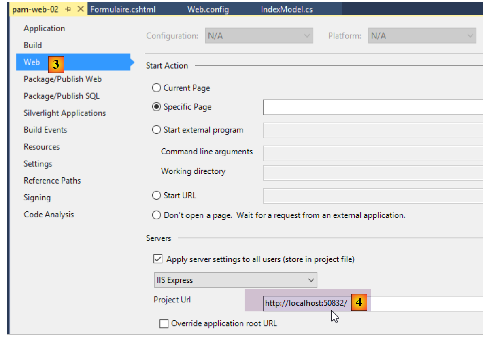 |
در [4]، شماره پورت را تغییر دهید، برای مثال با تغییر رقم اعشار.
پروژه [pam-web-02] را از طریق [Ctrl-F5] اجرا کنید. این کار صفحه اصلی زیر را نمایش خواهد داد:
 |
در [1]، کارمندان پایگاه داده [dbpam_ef5] بازیابی میشوند. توجه کنید که کارمند [X X] که در لایه شبیهسازی [métier] داشتیم، دیگر وجود ندارد. بیایید یک شبیهسازی اجرا کنیم:
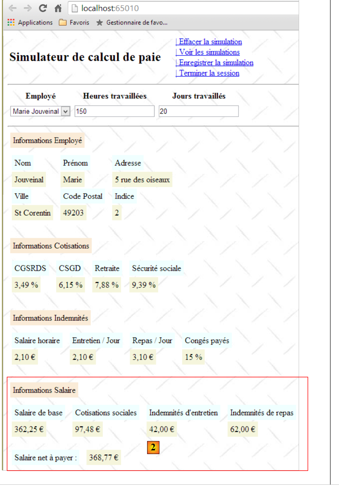 |
در [2]، ما در واقع حقوق واقعی را به جای حقوق فرضی دریافت میکنیم. اکنون بیایید SGBD و MySQL5 را متوقف کرده و یک شبیهسازی دیگر اجرا کنیم:
 |
در [3]، ما یک صفحه خطای خوانا دریافت کردهایم، اگرچه برخی پیامها به زبان انگلیسی هستند. حالا دوباره MySQL را متوقف کنیم و برنامه را در VS از طریق [Ctrl-F5] مجدداً اجرا کنیم:
 |
ما نمای [initFailed.cshtml] را که در بخش 9.20.4 ایجاد شده است، دریافت میکنیم. این نما پیامهای خطا را از پشته استثنا نمایش میدهد. از خواننده دعوت میشود تا آزمایشهای بیشتری انجام دهد.
9.26. مرحله ۱۹: قابل دسترسی کردن یک برنامه ASP.NET در اینترنت
هنگام توسعه یک برنامه ASP.NET با ویژوال استودیو، پیکربندی پیشفرض به این معناست که برنامه توسعه یافته فقط در آدرس [localhost] قابل دسترسی است. هر آدرس دیگری توسط سرور داخلی ویژوال استودیو رد میشود و خطای [400 Bad Request] را بازمیگرداند.
این موضوع به شرح زیر قابل مشاهده است:
- در پنجرهای از نوع DOS، آدرس IP را برای ماشین توسعه خود یادداشت کنید:
Microsoft Windows [version 6.3.9600]
(c) 2013 Microsoft Corporation. Tous droits réservés.
dos>ipconfig
Configuration IP de Windows
Carte Ethernet Connexion au réseau local :
Suffixe DNS propre à la connexion. . . : ad.univ-angers.fr
Adresse IPv6 de liaison locale. . . . .: fe80::698b:455a:925:6b13%4
Adresse IPv4. . . . . . . . . . . . . .: 172.19.81.34
Masque de sous-réseau. . . . . . . . . : 255.255.0.0
Passerelle par défaut. . . . . . . . . : 172.19.0.254
Carte réseau sans fil Wi-Fi :
Statut du média. . . . . . . . . . . . : Média déconnecté
Suffixe DNS propre à la connexion. . . :
آدرس IP در اینجا در خط 14 نمایش داده شده است. اگر به اینترنت بیسیم متصل باشید، آدرس وایفای ایستگاه کاری در خطوط 20 و به بعد نمایش داده خواهد شد.
- ویژگیهای پروژه [clic droit sur projet / propriétés / onglet web] را بررسی کنید:
 |
برنامه روی پورت [65010] ماشین [localhost] اجرا خواهد شد.
- پروژه خود را از طریق [Ctrl-F5] اجرا کنید

- [localhost] را با آدرس IP ماشین جایگزین کنید:
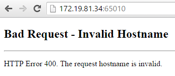
سرور پاسخ [400 Bad Request] را بازگرداند. سرور اکسپرس IIS که توسط ویژوال استودیو استفاده میشود، تنها نام [localhost] را میپذیرد.
برای اینکه برنامه توسعه یافته برای یک URL از نوع [http://adresseIP/contexte/...] قابل دسترسی باشد، باید از سرور دیگری غیر از IIS Express استفاده کنید، برای مثال یک سرور IIS (نه Express). برای بررسی اینکه آیا این قابلیت موجود است (معمولاً در نسخههای Pro ویندوز)، به کنترل پنل [Panneau de configuration\Système et sécurité\Outils d’administration] بروید:

این گزینه همیشه در دسترس نیست. در این صورت، باید به [ Panneau de configuration \ Programmes] بروید و ابزارهای مدیریت وب را نصب کنید.
 |
هنگامی که گزینه [Gestionnaire des services internet (IIS)] در دسترس قرار گرفت، آن را فعال کنید:
 |
وبسایت پیشفرض را راهاندازی کنید. برای این کار، سرویس [Service de publication World Wide Web] باید ابتدا در حال اجرا باشد:
 |
پس از انجام این کار، با استفاده از یک مرورگر وب به URL و [http://localhost] دسترسی پیدا کنید. ابتدا بررسی کنید که وبسرور دیگری در حال استفاده از پورت ۸۰ نباشد. در صورت مشاهده، آن را متوقف کنید.
 |
سرور IIS پاسخ داد. اکنون [localhost] را با آدرس IP برای ایستگاه کاری خود جایگزین کنید:
 |
این کار میکند. اکنون بیایید به ویژوال استودیو بازگردیم:
- ابتدا باید ویژوال استودیو را در حالت [administrateur] اجرا کنید
 |
پس از انجام این کار، باید پیکربندی پروژه وبی را که میخواهید در [clic droit sur projet / propriétés / onglet web] مستقر کنید، تغییر دهید:
 |
شما باید سرور محلی را بهعنوان سرور استقرار انتخاب کنید. ویژوال استودیو URL برنامه را تنظیم میکند. شما میتوانید این را تغییر دهید. پروژه را با استفاده از [Ctrl-F5] اجرا کنید:
 |
اکنون [localhost] را با آدرس IP برای ایستگاه کاری خود جایگزین کنید:
 |
اگر سرور IIS در دسترس نباشد، میتوانید از یک سرور رایگان ASP.NET مانند [Ultidev Web Server Pro]، که در URL [http://ultidev.com/Download/ ] موجود است، استفاده کنید. پس از نصب، دو روش برای راهاندازی یک برنامه وب با استفاده از این سرور وجود دارد:
روش سریع
ایکسپلورر ویندوز را باز کرده و پوشهای را که حاوی برنامه ASP.NET برای استقرار است، انتخاب کنید:
 |
سپس سرور وب راهاندازی شده و برنامه وب در یک مرورگر نمایش داده میشود:
 |
- در [3]، میتوانید سرور وب را متوقف یا راهاندازی کنید؛
- در [4]، میتوانید پورت سرویس وباپلیکیشن را تغییر دهید؛
قبل از راهاندازی سرور، سرویس [UWS HiPriv Services] زیر باید راهاندازی شود:
 |
پس از راهاندازی سرور، رابط کاربری به شکل زیر ظاهر میشود:
 |
کلیک بر روی لینک [6] صفحه اول برنامه را نمایش میدهد:
 |
سپس میتوانید [localhost] را با آدرس ماشین، IP جایگزین کنید:
 |
بنابراین در اینجا نیز تنها نام [localhost] پذیرفته میشود.
راه طولانی
برنامه Ultidev Web Explorer را اجرا کنید
 |
سپس این مراحل را دنبال کنید:
 |
 |
 |
- در [8]، پوشهٔ مربوط به برنامهٔ وبی را که باید مستقر شود، مشخص کنید؛
 |
- به دلیل [10-11]، وباپلیکیشن باید با استفاده از URL و [http://localhost:81/] درخواست شود؛
 |
 |
- سرور وب را با [14] راهاندازی کنید؛
 |
- درخواست URL [19];
 |
- در [20]، ما با استفاده از آدرس محلی ماشین IP به جای نام [localhost]، به صفحه مورد نظر دست یافتیم. این همان چیزی بود که به دنبالش بودیم؛
سرور Ultidev بهعنوان یک سرویس ویندوز نصب شده است که بهطور خودکار راهاندازی میشود. شما میتوانید راهاندازی خودکار سرور Ultidev را به شرح زیر غیرفعال کنید:
- گزینه [Panneau de configuration\Système et sécurité\Outils d’administration] را انتخاب کنید؛
 |
- [1, 2]: ویژگیهای سرویس [Ultidev Web Server Pro] را انتخاب کنید؛
- [3]: آن را روی شروع دستی تنظیم کنید.
برای راهاندازی دستی سرور، برای مثال از برنامه [Ultidev Web Explorer] استفاده کنید:
 |
9.27. مرحله ۲۰: ایجاد یک برنامه بومی اندروید
هنگامی که یک برنامه وب از نوع APU (برنامه تکصفحهای) دارید، میتوان یک فایل اجرایی موبایل (اندروید، IoS، ویندوز ۸، ...) با استفاده از ابزار [Phonegap] [http://phonegap.com/]. راههای دیگری نیز برای انجام این کار وجود دارد، بهویژه با استفاده از محصول متنباز Apache Cordova [https://cordova.apache.org/]. ابزار آنلاین موجود در وبسایت PhoneGap [http://build.phonegap.com/apps] فایل ZIP وبسایت مورد نظر برای تبدیل را «بارگذاری» میکند. صفحه اصلی باید [index.html] نامیده شود و باید یک صفحه ایستا باشد، یعنی نباید توسط یک چارچوب وب تولید شده باشد (ASP.NET, JEE, PHP, ...). ما با ساخت همین یکی شروع خواهیم کرد.
9.27.1. معماری برنامه
در اینجا مهم است به خاطر داشته باشیم که میخواهیم یک اپلیکیشن اندروید بسازیم. چنین اپلیکیشنی اغلب معماری زیر را دارد:
 |
- در [1]، کاربر از یک تبلت اندروید استفاده میکند که با یک یا چند سرویس وب ([2]) ارتباط برقرار میکند؛
بیایید به مدل APU بازگردیم:
 |
- یک صفحهٔ اولیه در مرورگر بارگذاری میشود (نمودار بالا مشخص نمیکند که این صفحه از کجا آمده است)؛
- نمایهای بعدی از طریق فراخوانیهای Ajax [1-4] بازیابی میشوند. هیچ صفحهٔ جدیدی توسط مرورگر بارگذاری نخواهد شد؛
ممکن است نمای اولیه توسط همان سروری که نماهای دیگر از طریق فراخوانیهای Ajax دریافت میشوند، ارائه شود یا نشود. اگر توسط همان سرور ارائه نشود، جاوااسکریپت موجود در صفحهٔ اولیه باید شناسهٔ URL سرور وبی را که نماهای دیگر را ارائه خواهد داد، بشناسد. این وضعیت در اپلیکیشن اندروید که قصد ساخت آن را داریم، رخ خواهد داد:
 |
- صفحه ایستا [index.html] در یک برنامه بومی اندروید [1] که قابلیتهای مرورگر را دارد، قرار داده خواهد شد و بنابراین قادر به اجرای جاوا اسکریپت جاسازیشده در صفحه [index.html] است؛
- این صفحه نماهای دیگر را از طریق فراخوانیهای Ajax به سرور [2] بازیابی خواهد کرد. برای این کار، نیاز دارد که URL وبسرور را بشناسد؛
ما قصد داریم برنامه [pam-web-02] را بازسازی کنیم تا در این حالت عمل کند. بنابراین صفحه اول به شرح زیر خواهد بود:
 |
- در [1]، URL از صفحهٔ اصلی برنامه. این توسط سرور Ultidev که در بخش 9.26 مورد بحث قرار گرفته است، ارائه خواهد شد؛
- در [2]، کاربر باید URL را برای شبیهساز فیش حقوقی وارد کند. ما میتوانستیم آن را به صورت کد سخت (hard-code) در کد جاوااسکریپت صفحه اصلی قرار دهیم، اما این کار تست را پیچیده میکرد: به محض اینکه آدرس (یا پورت) IP شبیهساز را تغییر میدادیم، باید آن را در کد جاوااسکریپت نیز تغییر میدادیم؛
- به [3]، لینک [Connexion] که نمای زیر را فراخوانی میکند:
 |
- توجه داشته باشید که در [4]، URL مرورگر تغییر نکرده است. این همچنان مربوط به صفحه اولیه است و در تمام طول عمر برنامه به همین صورت باقی خواهد ماند.
پس از دریافت این نما، همه چیز مانند قبل کار میکند: نماهای مختلف از طریق فراخوانیهای Ajax دریافت میشوند. خواهیم دید که تنها بخش بسیار کمی از کد نیاز به تغییر دارد.
9.27.2. بازسازی پروژه [pam-web-02]
در داخل پوشه [pam-web-02] پروژه [Content]، پوشه زیر [bootstrap] را ایجاد میکنیم (نام آن اهمیتی ندارد):
 |
ما صفحهٔ ایستا [index.html] و تمام منابع مورد نیاز آن (فایلهای CSS و JS) را گنجاندهایم. صفحه [index.html] کد را از صفحه اصلی [_Layout.cshtml] در پروژه Visual Studio میگیرد و همه چیزهایی را که ایستا نیستند حذف میکند. این منجر به کد زیر میشود:
<!DOCTYPE html>
<html xmlns="http://www.w3.org/1999/xhtml">
<head>
<title>Simulateur de paie</title>
<meta charset="utf-8" />
<meta name="viewport" content="width=device-width" />
<link rel="stylesheet" href="Site.css" />
<script type="text/javascript" src="jquery-1.8.2.min.js"></script>
<script type="text/javascript" src="jquery.validate.min.js"></script>
<script type="text/javascript" src="jquery.validate.unobtrusive.min.js"></script>
<script type="text/javascript" src="globalize.js"></script>
<script type="text/javascript" src="globalize.culture.fr-FR.js"></script>
<script type="text/javascript" src="jquery.unobtrusive-ajax.min.js"></script>
<script type="text/javascript" src="myScripts.js"></script>
</head>
<body>
<table>
<tbody>
<tr>
<td>
<h2>Simulateur de calcul de paie</h2>
</td>
<td style="width: 20px">
<img id="loading" style="display: none" src="indicator.gif" />
</td>
<td>
<a id="lnkConnexion" href="javascript:connexion()">
| Connexion<br />
</a>
<a id="lnkFaireSimulation" href="javascript:faireSimulation()">
| Faire la simulation<br />
</a>
<a id="lnkEffacerSimulation" href="javascript:effacerSimulation()">
| Effacer la simulation<br />
</a>
<a id="lnkVoirSimulations" href="javascript:voirSimulations()">
| Voir les simulations<br />
</a>
<a id="lnkRetourFormulaire" href="javascript:retourFormulaire()">
| Retour au formulaire de simulation<br />
</a>
<a id="lnkEnregistrerSimulation" href="javascript:enregistrerSimulation()">
| Enregistrer la simulation<br />
</a>
<a id="lnkTerminerSession" href="javascript:terminerSession()">
| Terminer la session<br />
</a>
</td>
</tbody>
</table>
<hr />
<div id="content">
<table>
<tr>
<td>URL du simulateur</td>
<td><input type="text" id="urlServiceWeb" name="urlServiceWeb" size="80"></td>
</tr>
</table>
<div id="erreur">
<h3>Réponse du serveur :</h3>
<div id="erreur1"></div>
<div id="erreur2"></div>
</div>
</div>
</body>
</html>
ما موارد زیر را اضافه کردهایم:
- خطوط 27–29: ما گزینه منوی [Connexion] را برای فعالسازی اتصال به سرویس شبیهسازی اضافه کردهایم؛
- خطوط ۵۵–۵۶: ورودی مربوط به شبیهساز URL؛
- خطوط 59–63: یک پیام خطا در صورت ناموفق بودن اتصال؛
بازسازی کد صرفاً در کد [myScripts.js] در خط ۱۴ بالا انجام میشود. هیچ چیز دیگری تغییر نمیکند. کد به شرح زیر تغییر میکند:
// هنگامی که سند بارگذاری میشود
$(document).ready(function () {
// بازیابی ارجاعات برای اجزای مختلف صفحه
loading = $("#loading");
content = $("#content");
erreur = $("#erreur");
erreur1 = $("#erreur1");
erreur2 = $("#erreur2");
// لینکهای منو
lnkConnexion = $("#lnkConnexion");
lnkFaireSimulation = $("#lnkFaireSimulation");
lnkEffacerSimulation = $("#lnkEffacerSimulation");
lnkEnregistrerSimulation = $("#lnkEnregistrerSimulation");
lnkVoirSimulations = $("#lnkVoirSimulations");
lnkTerminerSession = $("#lnkTerminerSession");
lnkRetourFormulaire = $("#lnkRetourFormulaire");
// این موارد در یک آرایه قرار میگیرند
options = [lnkConnexion, lnkFaireSimulation, lnkEffacerSimulation, lnkEnregistrerSimulation, lnkVoirSimulations, lnkTerminerSession, lnkRetourFormulaire];
// پنهان کردن برخی عناصر صفحه
loading.hide();
erreur.hide();
//منو در جای خود ثابت است
setMenu([lnkConnexion]);
});
- خطوط ۶–۸: شناسههای ناحیه نمایش خطاهای اتصال در صفحه [index.html]؛
- خط ۱۰: لینک جدید برای اتصال به شبیهساز؛
- خط ۲۱: ناحیه خطا در ابتدا پنهان است؛
- خط ۲۳: فقط لینک اتصال نمایش داده میشود؛
در صفحه [index.html]، لینک اتصال به شرح زیر تعریف شده است:
<a id="lnkConnexion" href="javascript:connexion()">
| Connexion<br />
</a>
تابع JS [connexion] (خط 1) به شرح زیر است:
var urlServiceWeb;
var erreur, erreur1, erreur2;
function connexion() {
// بازیابی urlServiceWeb از سرویس وب
urlServiceWeb = $("#urlServiceWeb").val();
// فرم ورودی را بازیابی میکند
$.ajax({
url: urlServiceWeb + '/Pam/Formulaire',
type: 'POST',
dataType: 'html',
beforeSend: function () {
// نمایانگر انتظار روشن شد
loading.show();
},
success: function (data) {
//نتایج نمایش داده شدند
content.html(data);
// منو
setMenu([lnkFaireSimulation]);
},
error: function (jqXHR) {
erreur2.html(jqXHR.responseText);
erreur1.html(jqXHR.getAllResponseHeaders().replace(/\r\n/g, "<br/>").replace(/\r/g, "<br/>").replace(/\n/g, "<br/>"));
erreur.show();
},
complete: function () {
// خاموش شدن نشانگر انتظار
loading.hide();
}
});
}
- خط ۷: مقدار URL وارد شده توسط کاربر بازیابی میشود. این مقدار در متغیر سراسری تعریفشده در خط ۱ ذخیره میشود. بنابراین در سایر توابع فایل در دسترس خواهد بود؛
- خط ۱۰: یک فراخوانی Ajax به URL [/Pam/Formulaire] شبیهساز انجام میشود. این URL یک نمای جزئی از دادههای واردشده شبیهسازی (کارمندان، ساعات کاری، روزهای کاری) را بازمیگرداند. در نسخه اولیه [pam-web-02]، این URL کافی بود. این URL به طور خودکار با URL که صفحه اولیه را بارگذاری کرده بود، پیشوندگذاری میشد. اکنون، فرض میکنیم که صفحه اولیه ممکن است توسط سروری غیر از سرور میزبان شبیهساز ارائه شود. بنابراین باید پیشوند [urlServiceWeb] از خط ۱ را به URL و [/Pam/Formulaire] اضافه کنیم، که URL شبیهساز است. (برای مثال، http://172.19.81.34/pam-web-02). این کار باید برای تمام فراخوانیهای Ajax در فایل انجام شود؛
- خطوط 17–22: اگر اتصال موفقیتآمیز باشد، نمای جزئی [Formulaire.cshtml] نمایش داده میشود و منویی شامل فقط لینک [Faire la simulation] (خط 21) نشان داده میشود؛
- خطوط ۲۳–۲۷: اگر اتصال ناموفق باشد:
- در خط ۲۴، پاسخ ارسالشده توسط سرور وب (در صورت وجود) با شناسه HTML نمایش داده میشود؛
- در خط ۲۵، سربرگهای ارسالشده توسط وبسرور (در صورت پاسخدادن) نمایش داده میشوند؛
همین. اگر اتصال موفقیتآمیز باشد، صفحه زیر نمایش داده میشود:
 |
ما اکنون به وضعیت قبلی بازگشتهایم، جایی که ویوها اکنون از طریق فراخوانیهای Ajax دریافت میشوند. بنابراین، همانطور که در بالا نشان داده شد، کلیک بر روی لینک [Faire la simulation] توسط کد زیر از فایل [myScripts.js] اجرا خواهد شد:
function faireSimulation() {
// در حال بازیابی ارجاعات
var simulation = $("#simulation");
var formulaire = $("#formulaire");
//آیا فرم معتبر است؟
var formValid = formulaire.validate().form();
if (!formValid) return;
// ایجاد دستی یک فراخوانی Ajax
$.ajax({
url: urlServiceWeb + '/Pam/FaireSimulation',
type: 'POST',
data: formulaire.serialize(),
dataType: 'html',
...
});
// منو
setMenu([lnkEffacerSimulation, lnkEnregistrerSimulation, lnkTerminerSession, lnkVoirSimulations]);
}
- یک تغییر واحد در خط ۱۰ اعمال شده است، جایی که URL قبلی اکنون با شناسه شبیهساز پیشوند شده است؛
9.27.3. آزمایش پروژه بازسازیشده
در بخش 9.26، نشان دادیم چگونه برنامه [pam-web-02] را روی سرور Ultidev نصب کنیم. از آنجا شروع میکنیم:
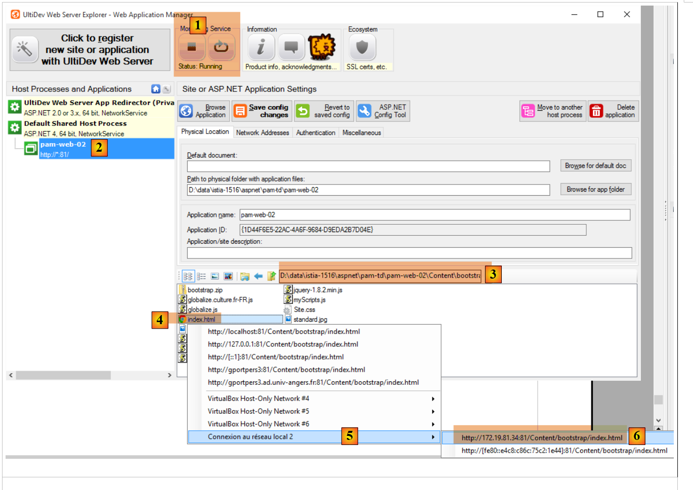 |
- به [6]، و درخواست نمایش صفحه [bootstrap/index.html] را میدهیم. نمای زیر را مشاهده میکنیم:
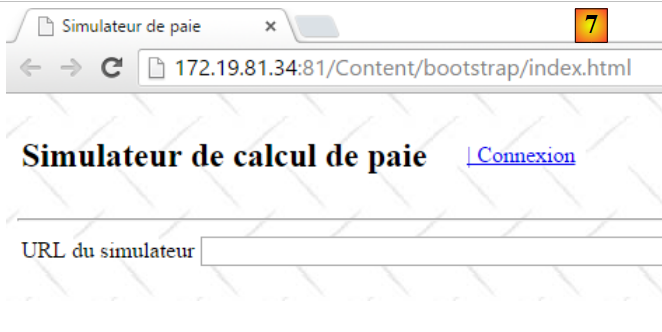 |
بیایید یک URL نادرست وارد کنیم:
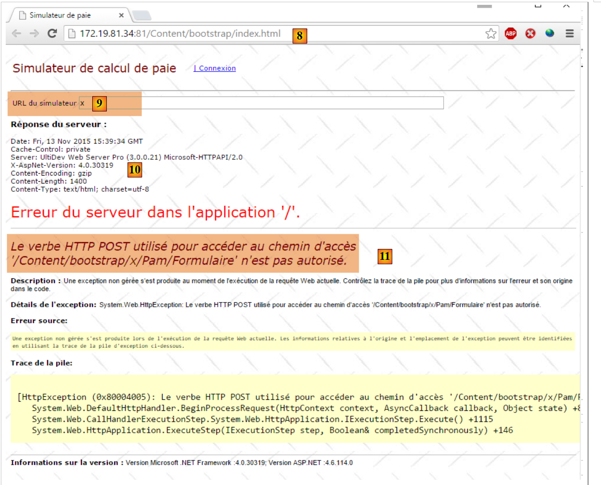 |
- در [10]، سربرگهای HTTP از پاسخ سرور؛
- به [11]، سند HTML از پاسخ سرور؛
اگر URL صحیح را وارد کنید:
 |
پاسخ زیر بازگردانده میشود:
 |
9.27.4. ایجاد باینری اندروید
ما قصد داریم باینری اندروید را از وبسایت ایستا که همینالان ایجاد کردهایم بسازیم و [1] را آزمایش کنیم:
 | 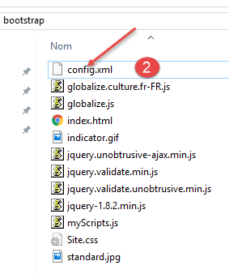 |
در [2]، ما فایلی به نام [config.xml] اضافه میکنیم که برای پیکربندی پلاگین [Phonegap] که باینری اندروید را تولید میکند، استفاده خواهد شد. کد آن به شرح زیر است:
<?xml version='1.0' encoding='utf-8'?>
<widget id="android.exemples.pam" version="0.0.1" xmlns="http://www.w3.org/ns/widgets" xmlns:cdv="http://cordova.apache.org/ns/1.0">
<name>Pam</name>
<description>
IstiA - Université d'Angers
</description>
<author email="serge.tahe@univ-angers.fr">
Serge Tahé
</author>
<content src="index.html" />
<access origin="*" />
<allow-navigation href="*" />
<allow-intent href="*" />
<plugin name="cordova-plugin-whitelist" />
</widget>
- خطوط ۷–۹: اطلاعات تماس خود را اینجا وارد کنید؛
- خطوط ۱۱–۱۳: این خطوط به جاوااسکریپت جاسازیشده در برنامه وب – که روی دستگاه اندروید اجرا خواهد شد – اجازه میدهند تا فایلهای URL را از خارج آن دستگاه درخواست کند؛
محتویات پوشه [Content/bootstrap] را زیپ میکنیم:
 |
سپس به وبسایت PhoneGap به آدرس [http://build.phonegap.com/apps] میرویم:
 |
- قبل از [1]، ممکن است لازم باشد یک حساب کاربری ایجاد کنید؛
- در [1] میتوانید شروع کنید؛
- در [2]، یک طرح رایگان را انتخاب کنید که فقط یک اپلیکیشن PhoneGap را مجاز میسازد؛
- در [3]، اپلیکیشن فشردهشده [4] را دانلود کنید؛
 |
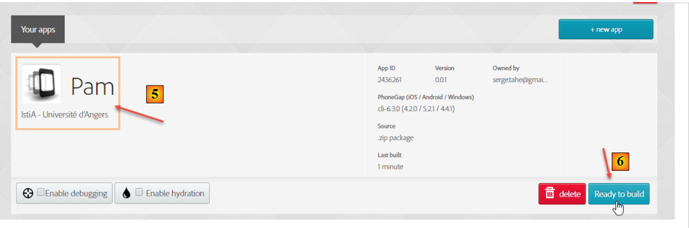 |
- در [5]، نام برنامه را وارد کنید؛
- برای ساخت باینریهای OS و IoS برای اندروید و ویندوز، روی لینک [6] کلیک کنید. این کار ممکن است چند ثانیه طول بکشد؛
 |
- برای [7-9]، باینری اندروید را دانلود کنید؛
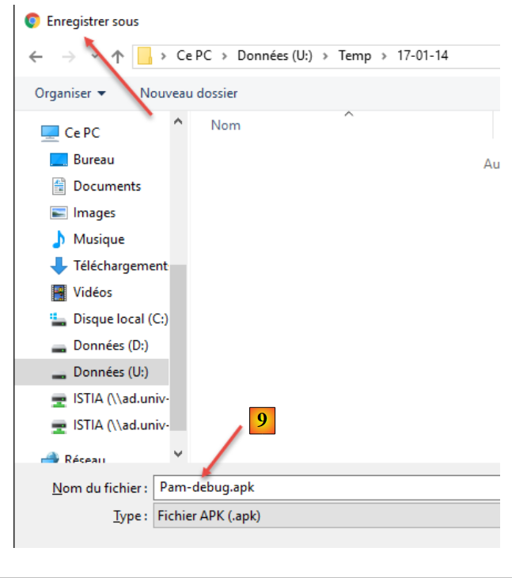 |
یک شبیهساز [GenyMotion] را برای یک تبلت اندروید اجرا کنید (به بخش 11.1 مراجعه کنید):
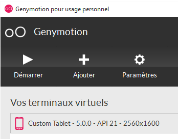 |
در بالا، ما یک شبیهساز تبلت با اندروید نسخه API 21 را راهاندازی میکنیم. پس از راهاندازی شبیهساز،
- با کشیدن اسلایدر (در صورت وجود) به کنار و سپس رها کردن آن، آن را باز کنید؛
- با استفاده از ماوس، فایل [Pam-debug.apk] را که دانلود کردهاید بکشید و در داخل شبیهساز رها کنید. سپس نصب و اجرا خواهد شد؛
 |
[1] را بهعنوان URL برای شبیهساز تنظیم کنید، همانطور که در بخش 9.27.3 توضیح داده شده است. پس از انجام این کار، با استفاده از لینک [2] به شبیهساز متصل شوید:
 |
برنامه را روی شبیهساز تست کنید. باید کار کند.